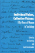
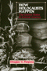
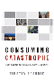

 <!DOCTYPE HTML PUBLIC "-//W3C//DTD HTML 4.0 Transitional//EN">
<html><!-- InstanceBegin template="/Templates/subjects.dwt" codeOutsideHTMLIsLocked="false" -->
<head>
<meta name='robots' content='noindex,nofollow' />
<!-- InstanceBeginEditable name="doctitle" --> 
<title>Sociology</title>
<!-- InstanceEndEditable --> 
<link rel="stylesheet" href="style.css" type="text/css">
<!-- InstanceBeginEditable name="head" -->
<style type="text/css">
<!--
.style1 {color: #990033}
.style2 {color: #000000}
-->
</style>
<!-- InstanceEndEditable --> <!-- InstanceParam name="Our Books" type="URL" value="img/our_books.gif" -->
</head>
<!-- Site designed by D a w n  D a n i s h, Copyright 2005 Temple University.  All Rights Reserved. -->
<body bgcolor="#FFFFFF" leftMargin="0" topMargin="0" rightMargin="0">
<!-- top banner table -->
<table width="100%" border="0" cellpadding="0" cellspacing="0">
  <tr> 
    <td valign="top" align="left" width="100%" nowrap><a name="top"></a><!-- InstanceBeginEditable name="header" --><!-- InstanceEndEditable --></td>
  </tr>
  <!-- navigation -->
  <tr> 
    <td bgcolor="#990033"></td>
  </tr>
  <tr> 
    <td bgcolor="#E5DCCB"></td>
  </tr>
  <tr> 
    <td align="center" valign="top" nowrap bgcolor="3D607A"><span class="navigation"><a class="navigation" href="index.html" TITLE="Welcome to Temple University Press">Home</a> 
      | <a class="navigation" href="books.html" TITLE="Browse our catalog or search for a book">Our 
      Books</a> | <a class="navigation" href="contact.html" TITLE="Questions? Comments? Tell us!">Contact 
      Us</a> | <a class="navigation" href="order.html" TITLE="Online ordering or order by phone, fax, or mail">Place 
      an Order</a> | <a class="navigation" href="br.html" TITLE="Book Reviews">Media</a> 
      | <a class="navigation" href="press.html" TITLE="Meet the Press">Press 
      Info</a> | <a class="navigation" href="links.html" TITLE="Other university press resources">Links</a> 
      </span></td>
  </tr>
  <tr> 
    <td bgcolor="#3D607A"></td>
  </tr>
  <tr> 
    <td bgcolor="#333333"></td>
  </tr>
</table>
<table border="0" cellspacing="0" cellpadding="0" width="100%">
  <!--DWLayoutTable-->
    <tr valign="top"> 
      <td width="200" align="left" valign="top" bgcolor="#E5DCCB"> 
        <!-- left menu -->
         <table border="0" cellspacing="0" cellpadding="5" width="100%">
          <tr valign="top"> 
            <td valign="top" align="left"><p class="leftnav"><a href="awards.html" TITLE="Read about award-winning books"> 
              Award-Winning Books</a><p class="leftnav">
                <a href="subjects.html" TITLE="Over 30 subject categories to browse">Subject 
                Index</a><p class="leftnav">
                <a href="series.html" TITLE="Books in series">Series 
                Listing</a><p class="leftnav">
                <a href="studyguides/index.html" TITLE="For further study">Study 
                Guides</a><br>&nbsp;</td>
          </tr>
        </table></td>      
    <td valign="top" align="left" width="100%"> 
      <!-- InstanceBeginEditable name="content table" --> 
      <table border="0" cellspacing="0" cellpadding="12" width="100%">
        <!--DWLayoutTable-->
        <tr> 
          <td width="75" valign="top" align="right"><a href="titles/565_reg.html"></a></td>
          <td valign="top" align="left"><a href="titles/565_reg.html"><b>Doing 
            Comparable Worth<br>
            </b>Gender, Class, and Pay Equity</a><br>
            Acker, Joan <p class="small">272 pp &#149; 6x9 &#149; Fall 
              1989<br>
              paper  978-0-87722-834-9<br>
              cloth  978-0-87722-621-5</p></td>
        </tr>
         <tr> 
          <td width="75" height="120" align="right" valign="top"><p class="normal"><a href="titles/2341_reg.html"></a></td>
          <td valign="top" align="left"><p class="normal"><strong><a href="titles/2341_reg.html">Imagined Liberation<br>
            </a></strong><a href="titles/2341_reg.html">Xenophobia, Citizenship, and Identity in South Africa, Germany, and Canada</a><br>
            Adam, Heribert and Kogila Moodley</p>
            <p class="small">246 pp &#149; 6x9 &#149; Spring 2015<br>
                    paper  978-1-4399-1190-7
					<br>
                    cloth  978-1-4399-1189-1<BR>
            </p></td>
        </tr> 
        <tr> 
          <td width="75" valign="top" align="right"><a href="titles/1813_reg.html"></a></td>
          <td valign="top" align="left"><a href="titles/1813_reg.html"><b>Seeking 
            Mandela<br>
            </b>Peacemaking Between Israelis and Palestinians</a><br>
            Adam, Heribert and Kogila Moodley <p class="small">248 pp &#149; 
              6x9 &#149; Spring 2005<br>
              paper  978-1-59213-396-3<br>
              cloth  978-1-59213-395-6<br>
                </p></td>
        </tr>
        <tr> 
          <td width="75" valign="top" align="right"><a href="titles/830_reg.html"></a></td>
          <td valign="top" align="left"><a href="titles/830_reg.html"><b>Time 
            and Social Theory</b></a><br>
            Adam, Barbara <p class="small">250 pp &#149; Fall 1990<br>
              cloth 978-0-87722-788-5<br>
               </p></td>
        </tr>
        <tr> 
          <td width="75" valign="top" align="right"><p class="normal"><a href="titles/1883_reg.html"></a></td>
          <td valign="top" align="left"><p class="normal"><a href="titles/1883_reg.html"><strong>Citizen 
            Lobbyists<br>
            </strong>Local Efforts to Influence Public Policy<br>
          </a>Adams, Brian </p>
            <p><span class="small">248 pp &#149; 5.5x8.25 &#149; Fall 2006<br>
              paper  978-1-59213-570-7<br>
			  cloth 978-1-59213-569-1</span></p>
		  </td>
        </tr>
        <tr> 
          <td width="75" valign="top" align="right"><a href="titles/1680_reg.html"></a></td>
          <td valign="top" align="left"><a href="titles/1680_reg.html"><b>Hegemony<br>
            </b>The New Shape of Global Power</a><br>
            Agnew, John <p class="small">296 pp &#149; 6x9 &#149; Spring 
              2005<br>
              paper  978-1-59213-153-2<br>
              cloth  978-1-59213-152-5<br>
               </p></td>
        </tr>
        <tr> 
          <td width="75" valign="top" align="right"><a href="titles/1606_reg.html"></a></td>
          <td valign="top" align="left"><a href="titles/1606_reg.html"><b>Cat 
            Culture<br>
            </b>The Social World of a Cat Shelter</a><br>
            Alger, Janet M. and Steven F. Alger <p class="small">256 pp 
              &#149; 5.5x8.25 &#149; Fall 2002<br>
              paper  978-1-56639-998-2<br>
              cloth  978-1-56639-997-5<br>
               </p></td>
        </tr>
        <tr> 
          <td width="75" valign="top" align="right"><a href="titles/1268_reg.html"></a></td>
          <td valign="top" align="left"><a href="titles/1268_reg.html"><b>Women 
            Reformed, Women Empowered<br>
            </b>Poor Mothers and the Endangered Promise of Head Start</a><br>
            Ames, Lynda J. with Jeanne Ellsworth  <p class="small">264 
              pp &#149; 5.5x8.25 &#149; Fall 1996<br>
              paper  978-1-56639-493-2<br>
              cloth 978-1-56639-492-5</p></td>
        </tr>
		<tr> 
          <td width="75" valign="top" align="right"><p class="normal"><a href="titles/2013_reg.html"></a></td>
          <td valign="top" align="left"><p class="normal"><a href="titles/2013_reg.html"><b>The Wars We Inherit<br>
              </b>Military Life, Gender Violence, and Memory <br>
              </a>Amy, Lori E. </p>
			<p class="small"> 216 pp &#149; 5.5x8.25 &#149; Spring 2010<br>
			paper  978-1-59213-961-3 <br>
            cloth  978-1-59213-960-6<br>
                </p></td>
        </tr>
		<tr> 
          <td width="75" valign="top" align="right"><p class="normal"><a href="titles/2002_reg.html"></a></td>
          <td valign="top" align="left"><p class="normal"><a href="titles/2002_reg.html"><b>Rave Culture<br>
              </b> The Alteration and Decline of a Philadelphia Music Scene<br></a>Anderson, Tammy L. </p>
            <p class="small">240 pp &#149; 6x9 &#149; Spring 2009<br>
			paper  978-1-59213-934-7<br>
              cloth  978-1-59213-933-0<br>
                </p></td>
        </tr>
              <tr> 
                <td width="75" valign="top" align="right"><a href="titles/2131_reg.html"></a></td>
                <td valign="top" align="left"><a href="titles/2131_reg.html"><font size="2" face="Verdana, Arial, Helvetica, sans-serif"><b>Sport and Neoliberalism<br></b>
               Politics, Consumption, and Culture</font></a><br> 
                  <font size="2" face="Verdana, Arial, Helvetica, sans-serif">edited by Andrews, David L., and Michael L. Silk
</font> <p class="small">322 pp &#149; 6x9 &#149; Fall 2012<br>
                 paper  978-1-4399-0504-3<br>
                cloth  978-1-4399-0503-6<br>
                     </p></td>
              </tr>
		<tr>
                <td width="75" valign="top" align="right"><a href="titles/1941_reg.html"></a></td>
          <td valign="top" align="left"><a href="titles/1941_reg.html"><font size="2" face="Verdana, Arial, Helvetica, sans-serif"><b>Race and Class Matters at an Elite College</b></font></a><br>
                  <font size="2" face="Verdana, Arial, Helvetica, sans-serif">Aries, Elizabeth</font>
                  <p class="small">246 pp &bull; 6x9 &bull; Fall 2008<br>
                    paper  978-1-59213-726-8<br>
                    cloth  978-1-59213-725-1<br>
                </p></td>
        </tr>
              <tr> 
                <td width="75" valign="top" align="right"><a href="titles/2248_reg.html"></a></td>
                
          <td valign="top" align="left"><a href="titles/2248_reg.html"><font size="2" face="Verdana, Arial, Helvetica, sans-serif"><b>Speaking of Race and Class<br>
            </b>The Student Experience at an Elite College</font></a><br> 
            <font size="2" face="Verdana, Arial, Helvetica, sans-serif">Aries, Elizabeth, with Richard Berman</font> <p class="small">238 pp &#149; 6x9 &#149; Fall 
                    2012<br>
                    paper  978-1-4399-0967-6<br>
                    cloth  978-1-4399-0966-9<br>
			   </td>
              </tr>
        <tr> 
          <td width="75" valign="top" align="right"><a href="titles/1837_reg.html"></a></td>
          <td valign="top" align="left"><a href="titles/1837_reg.html"><b>Just 
            a Dog<br>
            </b>Understanding Animal Cruelty and Ourselves</a><br>
            Arluke, Arnold&nbsp; <p class="small">232 pp &#8226; 6x9 &#8226; Spring 
              2006<br>
              paper 978-1-59213-472-4<br>
			  cloth  978-1-59213-471-7<br>
                </p></td>
        </tr>
        <tr> 
          <td width="75" valign="top" align="right"><a href="titles/1771_reg.html"></a></td>
          <td valign="top" align="left"><a href="titles/1771_reg.html"><b>Just 
            Around the Corner<br>
            </b>The Paradox of the Jobless Recovery</a><br>
            Aronowitz, Stanley <p class="small">176 pp &#149; 5.5x8.25 
              &#149; Spring 2005<br>
              paper  978-1-59213-138-9<br>
              cloth 978-1-59213-137-2<br>
               </p></td>
        </tr>
        <tr>
                <td width="75" valign="top" align="right"><a href="titles/2405_reg.html"></a><br>
          &nbsp;</td>                
          <td valign="top" align="left"><a href="titles/2405_reg.html"><b>Against Capital in the Twenty-First Century<br>
            </b>A Reader of Radical Undercurrents</a><br>
                edited by Asimakopoulos, John and Richard Gilman-Opalsky
                  <p class="small">390 pp &bull; 6x9 &bull; Fall 2017<BR>
                    paper 978-1-4399-1358-1<BR>
                  cloth  978-1-4399-1357-4<br>
               </p></td>
        </tr>

        <tr> 
          <td width="75" valign="top" align="right"><a href="titles/1060_reg.html"></a></td>
          <td valign="top" align="left"><a href="titles/1060_reg.html"><b>Merengue<br>
            </b>Dominican Music and Dominican Identity</a><br>
            Austerlitz, Paul, foreword by Robert Farris Thompson <p class="small">224 
              pp &#149; 6x9 &#149; Fall 1996<br>
              paper  978-1-56639-484-0<br>
              cloth  978-1-56639-483-3<br>
               </p></td>
        </tr>
        <tr> 
          <td width="75" valign="top" align="right"><a href="titles/1559_reg.html"></a></td>
          <td valign="top" align="left"><a href="titles/1559_reg.html"><b>Habitat 
            for Humanity�<br>
            </b>Building Private Homes, Building Public Religion</a><br>
            Baggett, Jerome P. <p class="small">360 pp &#149; 6x9 &#149; 
              Fall 2000<br>
              paper  978-1-56639-803-9<br>
              cloth  978-1-56639-802-2<br>
               </p></td>
        </tr>
        <tr> 
          <td width="75" valign="top" align="right"><a href="titles/1546_reg.html"></a></td>
          <td valign="top" align="left"><a href="titles/1546_reg.html"><b>The 
            Critical Study of Work<br>
            </b>Labor, Technology, and Global Production</a><br>
            edited by Baldoz, Rick, Charles Koeber and Philip Kraft <p class="small">296 
              pp &#149; 7x10 &#149; Spring 2001<br>
              paper  978-1-56639-798-8<br>
              cloth 978-1-56639-797-1<br>
               </p></td>
        </tr>
		   <tr> 
          <td width="75" valign="top" align="right"><p class="normal"><a href="titles/2152_reg.html"></a></td>
          <td valign="top" align="left"><p class="normal"><a href="titles/2152_reg.html"><b>The Borders of Justice</b></a><br>
              </a>edited by Balibar, �tienne, Sandro Mezzadra and Ranabir Samaddar</p>
            <p class="small">224 pp &#149; 6x9 &#149; Fall 2011<br>
                    paper  978-1-4399-0686-6<br>
			cloth  978-1-4399-0685-9<br>
                </p></td>
        </tr>
        <tr> 
          <td width="75" valign="top" align="right"><a href="titles/1685_reg.html"></a></td>
          <td valign="top" align="left"><a href="titles/1685_reg.html"><b>The 
            Fibromyalgia Story<br>
            </b>Medical Authority and Women's Worlds of Pain</a><br>
            Barker, Kristin K. <p class="small">264 pp &#149; 6x9 &#149; 
              Spring 2005<br>
              paper  978-1-59213-161-7<br>
              cloth  978-1-59213-160-0<br>
                </p></td>
        </tr>
              <tr>
                <td width="75" valign="top" align="right"><a href="titles/2277_reg.html"></a></td>
                <td valign="top" align="left"><a href="titles/2277_reg.html"><font size="2" face="Verdana, Arial, Helvetica, sans-serif"><b>Conceiving Masculinity</b><br>
                Male Infertility, Medicine, and Identity</font></a><br>
                  <font size="2" face="Verdana, Arial, Helvetica, sans-serif">Barnes, Liberty Walther</font>
                  <p class="small">228 pp &#149; 5.5x8.25 &#149; Spring 2014<br>
                    paper  978-1-43991-042-9<br>
                    cloth  978-1-43991-041-2                  </p></td>
              </tr>
		  <tr>
                <td width="75" valign="top" align="right"><a href="titles/1998_reg.html"></a></td>
          <td valign="top" align="left"><a href="titles/1998_reg.html"><font size="2" face="Verdana, Arial, Helvetica, sans-serif"><b>The African Transformation of Western Medicine and the Dynamics of Global Cultural Exchange</b></font></a><br>
                  <font size="2" face="Verdana, Arial, Helvetica, sans-serif">Baronov, David</font>
                  <p class="small">264 pp &#149; 6x9&#149; Fall 2008 <br>
				  paper 978-1-59213-916-3<br>
                    cloth 978-1-59213-915-6<br>
                </p></td>
        </tr>
        <tr> 
          <td width="75" valign="top" align="right"><a href="titles/458_reg.html"></a></td>
          <td valign="top" align="left"><a href="titles/458_reg.html"><b>Putting 
            on Appearances<br>
            </b>Gender and Advertising</a><br>
            Barthel, Diane <p class="small">232 pp &#149; Fall 1989<br>
              paper 978-0-87722-661-1<br>
              cloth  978-0-87722-528-7<br>
               </p></td>
        </tr>
		<tr> 
          <td width="75" valign="top" align="right"><p class="normal"><a href="titles/1919_reg.html"></a></td>
          <td valign="top" align="left"><p class="normal"><a href="titles/1919_reg.html"><b>Behind the Mask of the Strong Black Woman<br>
              </b>Voice and the Embodiment of a Costly Performance</a><br>
			  Beauboeuf-Lafontant, Tamara</p>
            
			<p class="small">
			194 pp &#149; 5.5x8.25 &#149; Fall 2009<br>
            paper  978-1-59213-668-1<br>
			cloth  978-1-59213-667-4<br>
               </p></td>
        </tr>
        <tr> 
          <td width="75" valign="top" align="right"><a href="titles/767_reg.html"></a></td>
          <td valign="top" align="left"><a href="titles/767_reg.html"><b>Building 
            the Beloved Community<br>
            </b>Maurice McCrackin's Life for Peace and Civil Rights</a><br>
            Bechtel, Judith A. and Robert M. Coughlin, foreword by Daniel Berrigan 
            <p class="small">288 pp &#149; Spring 1991<br>
              cloth  978-0-87722-783-0</p></td>
        </tr>
              <tr>
                <td width="75" valign="top" align="right"><a href="titles/2258_reg.html"></a></td>
                
          <td valign="top" align="left"><a href="titles/2258_reg.html"><font size="2" face="Verdana, Arial, Helvetica, sans-serif"><b>Local Protest, Global Movements<br>
            </b>Capital, Community, and State in San Francisco</font></a><br>
                  <font size="2" face="Verdana, Arial, Helvetica, sans-serif">Beitel, Karl </font>
                  <p class="small">230 pp &#149; 6x9 &#149; Spring 2013<br>
                    paper 978-1-4399-0995-9
					<br>
                    cloth  978-1-4399-0994-2<BR>
                </p></td>
              </tr>
        <tr> 
          <td width="75" valign="top" align="right"><a href="titles/1007_reg.html"></a></td>
          <td valign="top" align="left"><a href="titles/1007_reg.html"><b>Reconstructing 
            Prehistory<br>
            </b>Scientific Method in Archaeology</a><br>
            Bell, James A. <p class="small">368 pp &#149; 6x9 &#149; Spring 
              1994<br>
              paper 978-1-56639-160-3<br>
              cloth  978-1-56639-159-7<br>
               </p></td>
        </tr>
              <tr> 
                <td width="75" valign="top" align="right"><a href="titles/2157_reg.html"></a></td>
          <td valign="top" align="left"><a href="titles/2157_reg.html"><font size="2" face="Verdana, Arial, Helvetica, sans-serif"><b>The Strange Music of Social Life<br>
            </b>A Dialogue on Dialogic Sociology</font></a><br> 
                  <font size="2" face="Verdana, Arial, Helvetica, sans-serif">Bell, Michael Mayerfeld, edited by Ann Goetting </font> <p class="small">248 pp &bull; 5.5x8.25 &bull; Spring 2011<BR>
                    paper  978-1-4399-0724-5<BR>
                   cloth 978-1-4399-0723-8<br>
               </p></td>
              </tr>
		 <tr> 
          <td width="75" valign="top" align="right"><p class="normal"><a href="titles/2000_reg.html"></a></td>
          <td valign="top" align="left"><p class="normal"><a href="titles/2000_reg.html"><b>DES Daughters<BR>
          </b>
		 Embodied Knowledge and the Transformation of Women's Health Politics<br>
              </a>Bell, Susan</p>
			<p class="small">
            232 pp &#149; 6x9 &#149; Fall 2009<br>
			paper 978-1-59213-919-4<br>
			cloth  978-1-59213-918-7<br>
               </p></td>
        </tr>
			  <tr> 
          <td width="75" valign="top" align="right"><p class="normal"><a href="titles/2185_reg.html"></a></td>
          <td valign="top" align="left"><p class="normal"><a href="titles/2185_reg.html"><b>Music, Style, and Aging<br>
              </b>Growing Old Disgracefully?
<br></a>
			Bennett,  Andy </p>
			<p class="small"> 226 pp &#149; 5.5x8.25 &#149; Fall 2012<br>
            paper  978-1-4399-0808-2<br>
			cloth 1978-1-4399-0807-5</p></td>
        </tr>
        <tr> 
          <td width="75" valign="top" align="right"><a href="titles/1168_reg.html"></a></td>
          <td valign="top" align="left"><a href="titles/1168_reg.html"><b>The 
            National Question<br>
            </b>Nationalism, Ethnic Conflict, and Self-Determination in the Twentieth 
            Century</a><br>
            edited by Berberoglu, Berch <p class="small">344 pp &#149; 
              6x9 &#149; Fall 1995<br>
              paper  978-1-56639-343-0<br>
              cloth  978-1-56639-342-3<br>
               </p></td>
        </tr>
        <tr> 
          <td width="75" valign="top" align="right"><a href="titles/1561_reg.html"></a></td>
          <td valign="top" align="left"><a href="titles/1561_reg.html"><b>Taking 
            It Personally<br>
            </b>Racism in the Classroom from Kindergarten to College</a><br>
            Berlak, Ann and Sekani Moyenda <p class="small">216 pp &#149; 
              6x9 &#149; Spring 2001<br>
              paper  978-1-56639-876-3<br>
              cloth  978-1-56639-875-6<br>
               </p></td>
        </tr>
		<tr> 
          <td width="75" valign="top" align="right"><p class="normal"><a href="titles/2136_reg.html"></a></td>
          <td valign="top" align="left"><p class="normal"><a href="titles/2136_reg.html"><b>Closure<br>
          </b>
		  The Rush to End Grief and What It Costs Us</a><br>
             Berns, Nancy</p>
            <p class="small"> 
			228 pp &#149; 6x9 &#149; Fall 2011<br>
			paper  978-1-4399-0577-7<br>
            cloth  978-1-4399-0576-0<br>
               </p></td>
        </tr>
		<tr> 
          <td width="75" valign="top" align="right"><p class="normal"><a href="titles/2241_reg.html"></a></td>
          <td valign="top" align="left"><p class="normal"><a href="titles/2241_reg.html"><b>Consuming Work<br>
          </b>
		 Youth Labor in America</a><br>
        Besen-Cassino, Yasemin</p>
            <p class="small"> 
			202 pp &#149; 6x9 &#149; Fall 2013<br>
			paper  978-1-4399-0949-2
            <br>
            cloth  978-1-4399-0948-5</p></td>
        </tr>
        <tr> 
          <td width="75" valign="top" align="right"><p class="normal"><a href="titles/2400_reg.html"></a></td>
          <td valign="top" align="left"><p class="normal"><a href="titles/2400_reg.html"><b>The Cost of Being a Girl<br>
          </b>
		Working Teens and the Origins of the Gender Wage Gap</a><br>
        Besen-Cassino, Yasemin</p>
            <p class="small"> 
			238 pp &#149; 6x9 &#149; Fall 2017<br>
			paper 978-1-4399-1349-9
            <br>
            cloth  978-1-4399-1348-2</p></td>
        </tr>
        <tr> 
          <td width="75" valign="top" align="right"><br> </td>
          <td valign="top" align="left"><a href="titles/537_reg.html"><b>Reducing 
            Workweeks to Prevent Layoffs<br>
            </b>The Economic and Social Impacts of Unemployment Insurance-Supported 
            Work Sharing</a><br>
            Best, Fred, foreword by Herbert J. Gans <p class="small">228 
              pp &#149; Fall 1987<br>
              cloth  978-0-87722-506-5</p></td>
        </tr>
        <tr> 
          <td width="75" valign="top" align="right"><a href="titles/230_reg.html"></a></td>
          <td valign="top" align="left"><a href="titles/230_reg.html"><b>Promiseland<br>
            </b>A Century of Life in a Negro Community</a><br>
            Bethel, Elizabeth Rauh <p class="small">329 pp &#149; Spring 
              1981<br>
              paper  978-0-87722-275-0<br>
              cloth  978-0-87722-211-8</p></td>
        </tr>
        <tr> 
          <td width="75" valign="top" align="right"><a href="titles/543_reg.html"></a></td>
          <td valign="top" align="left"><a href="titles/543_reg.html"><b>The 
            Roots of Community Organizing, 1917-1939</b></a><br>
            Betten, Neil and Michael J. Austin, contributions by Robert Fisher, 
            William E. Hershey, Raymond A. Hohl and Marc Lee Raphael <p class="small">230 
              pp &#149; 5.5x8.25 &#149; Fall 1989<br>
              cloth  978-0-87722-662-8<br>
               </p></td>
        </tr>
        <tr> 
          <td width="75" valign="top" align="right"><a href="titles/1329_reg.html"></a></td>
          <td valign="top" align="left"><a href="titles/1329_reg.html"><b>American 
            Conversations<br>
            </b>Puerto Ricans, White Ethnics, and Multicultural Education</a><br>
            Bigler, Ellen <p class="small">296 pp &#149; 5.5x8.25 &#149; 
              Spring 1999<br>
              paper  978-1-56639-688-2<br>
              cloth  978-1-56639-687-5<br>
               </p></td>
        </tr>
        <tr> 
          <td width="75" valign="top" align="right"><a href="titles/1541_reg.html"></a></td>
          <td valign="top" align="left"><a href="titles/1541_reg.html"><b>Law 
            and Order and School<br>
            </b>Daily Life in an Educational Program for Juvenile Delinquents</a><br>
            Birnbaum, Shira <p class="small">208 pp &#149; 5.5x8.25 &#149; 
              Spring 2001<br>
              paper 978-1-56639-870-1<br>
              cloth 978-1-56639-869-5<br>
               </p></td>
        </tr>
        <tr> 
          <td width="75" valign="top" align="right"><a href="titles/1566_reg.html"></a></td>
          <td valign="top" align="left"><a href="titles/1566_reg.html"><b>Still 
            the Big News<br>
            </b>Racial Oppression in America</a><br>
            Blauner, Bob <p class="small">288 pp &#149; 6x9 &#149; Spring 
              2001<br>
              paper  978-1-56639-874-9<br>
              cloth  978-1-56639-873-2<br>
               </p></td>
        </tr>
        <tr> 
          <td width="75" valign="top" align="right"><a href="titles/452_reg.html"></a></td>
          <td valign="top" align="left"><a href="titles/452_reg.html"><b>Revising 
            State Theory<br>
            </b>Essays in Politics and Postindustrialism</a><br>
            Block, Fred <p class="small">256 pp &#149; Fall 1987<br>
              paper  978-0-87722-524-9<br>
              cloth  978-0-87722-465-5<br>
               </p></td>
        </tr>
        <tr> 
          <td width="75" valign="top" align="right"><a href="titles/1581_reg.html"></a></td>
          <td valign="top" align="left"><a href="titles/1581_reg.html"><b>The 
            Paradox of Natural Mothering</b></a><br>
            Bobel, Chris <p class="small">240 pp &#149; 5.5x8.25 &#149; 
              Fall 2001<br>
              paper 978-1-56639-907-4<br>
              cloth 978-1-56639-906-7<br>
               </p></td>
        </tr>
        <tr> 
          <td width="75" valign="top" align="right"><a href="titles/438_reg.html"></a></td>
          <td valign="top" align="left"><a href="titles/438_reg.html"><b>Social 
            Movements and Political Power<br>
            </b>Emerging Forms of Radicalism in the West</a><br>
            Boggs, Carl <p class="small">304 pp &#149; 6x9 &#149; Fall 
              1986<br>
              paper  978-0-87722-622-2<br>
              cloth  978-0-87722-447-1<br>
               </p></td>
        </tr>
        <tr> 
          <td width="75" valign="top" align="right"><a href="titles/1027_reg.html"></a></td>
          <td valign="top" align="left"><a href="titles/1027_reg.html"><b>Global 
            Production<br>
            </b>The Apparel Industry in the Pacific Rim</a><br>
            edited by Bonacich, Edna, Lucie Cheng, Norma Chinchilla, Nora Hamilton 
            and Paul Ong <p class="small">400 pp &#149; 6x9 &#149; Spring 
              1994<br>
              paper 978-1-56639-169-6<br>
              cloth  978-1-56639-168-9<br>
               </p></td>
        </tr>
        <tr> 
          <td width="75" valign="top" align="right"><a href="titles/1439_reg.html"></a></td>
          <td valign="top" align="left"><a href="titles/1439_reg.html"><b>Locating 
            Filipino Americans<br>
            </b>Ethnicity and the Cultural Politics of Space</a><br>
            Bonus, Rick <p class="small">248 pp &#149; 6x9 &#149; Spring 
              2000<br>
              paper  978-1-56639-779-7<br>
              cloth  978-1-56639-778-0<br>
               </p></td>
        </tr>
        <tr> 
          <td width="75" valign="top" align="right"><a href="titles/475_reg.html"></a></td>
          <td valign="top" align="left"><a href="titles/475_reg.html"><b>Women 
            and the Politics of Empowerment</b></a><br>
            edited by Bookman, Ann and Sandra Morgen 
            <p class="small">352 
              pp &#149; Fall 1987<br>
              paper  978-0-87722-525-6<br>
              cloth 978-0-87722-504-1<br>
               </p></td>
        </tr>
        <tr> 
          <td width="75" valign="top" align="right"><br> </td>
          <td valign="top" align="left"><a href="titles/363_reg.html"><b>Women 
            Living Change</b></a><br>
            Bourque, Susan C. and Donna Robinson Divine <p class="small">288 
              pp &#149; Spring 1985<br>
              cloth  978-0-87722-369-6</p></td>
        </tr>
        <tr> 
          <td width="75" valign="top" align="right"><a href="titles/1466_reg.html"></a></td>
          <td valign="top" align="left"><a href="titles/1466_reg.html"><b>Inheritance 
            Law and the Evolving Family</b></a><br>
            Brashier, Ralph C. <p class="small">272 pp &#149; 6x9 &#149; 
              Fall 2003<br>
              paper  978-1-59213-222-5<br>
              cloth  978-1-59213-221-8<br>
               </p></td>
        </tr>
        <tr> 
          <td width="75" valign="top" align="right"><a href="titles/1301_reg.html"></a></td>
          <td valign="top" align="left"><a href="titles/1301_reg.html"><b>A 
            Right to Housing<br>
            </b> Foundation for a New Social Agenda</a><br>
            edited by Bratt, Rachel G., Michael E. Stone and Chester Hartman 
            <p class="small">448 pp &#149; 7x10 &#149; Fall 2005<br>
              paper  978-1-59213-432-8<br>
              cloth  978-1-59213-431-1<br>
                </p></td>
        </tr>
        <tr> 
          <td width="75" valign="top" align="right"><a href="titles/383_reg.html"></a></td>
          <td valign="top" align="left"><a href="titles/383_reg.html"><b>Critical 
            Perspectives on Housing</b></a><br>
            edited by Bratt, Rachel G., Chester Hartman and Ann Meyerson 
            <p class="small">600 pp &#149; Fall 1985<br>
              paper  978-0-87722-396-2<br>
              cloth  978-0-87722-395-5</p></td>
        </tr>
        <tr> 
          <td width="75" valign="top" align="right"><br> </td>
          <td valign="top" align="left"><a href="titles/683_reg.html"><b>Computer 
            Applications in the Social Sciences</b></a><br>
            Brent, Jr., Edward and Ronald E. Anderson <p class="small">384 
              pp &#149; 6x9 &#149; Fall 1989<br>
              cloth  978-0-87722-666-6<br>
               </p></td>
        </tr>
        <tr> 
          <td width="75" valign="top" align="right"><a href="titles/1568_reg.html"></a></td>
          <td valign="top" align="left"><a href="titles/1568_reg.html"><b>Democratic 
            Theorizing from the Margins</b></a><br>
            Brettschneider, Marla <p class="small">272 pp &#149; 6x9 &#149; 
              Fall 2001<br>
			  paper  978-1-59213-654-4<br>
              cloth  978-1-56639-921-0<br>
               </p></td>
        </tr>
		<tr> 
          <td width="75" valign="top" align="right"><p class="normal"><a href="titles/2010_reg.html"></a></td>
          <td valign="top" align="left"><p class="normal"><a href="titles/2010_reg.html"><b>Material Law<br>
              </b>A Jurisprudence of What's Real<br></a>Brigham, John</p>
            <p class="small">240 pp &#149; 6x9 &#149; Spring 2009<br>
              cloth  978-1-59213-964-4<br>
               </p></td>
        </tr>
              <tr>
                <td width="75" valign="top" align="right"><a href="titles/2105_reg.html"></a></td>
          <td valign="top" align="left"><a href="titles/2105_reg.html"><font size="2" face="Verdana, Arial, Helvetica, sans-serif"><b>Cheaper by the Hour<br>
            </b>Temporary Lawyers and the Deprofessionalization of the Law</font></a><br>
                  <font size="2" face="Verdana, Arial, Helvetica, sans-serif">Brooks, Robert</font>
                  <p class="small">234 pp &bull; 6x9 &bull; Spring 2011<BR>
                  paper  978-1-4399-0286-8<br>
                cloth  978-1-4399-0285-1<br>
               </p></td>
              </tr>
              <tr>
                <td width="75" valign="top" align="right"><a href="titles/2103_reg.html"></a></td>
          <td valign="top" align="left"><a href="titles/2103_reg.html"><font size="2" face="Verdana, Arial, Helvetica, sans-serif"><b>As French As Everyone Else?<br>
            </b>A Survey of French Citizens of Maghrebin, African, and Turkish Origin</font></a><br>
            <font size="2" face="Verdana, Arial, Helvetica, sans-serif">Brouard, Sylvain and Vincent Tiberj<br>
            Foreword by Pascal Perrineau, Translated by Jennifer Fredette</font>
                  <p class="small">152 pp &bull; 5.5x8.25 &bull; Spring 2011<BR>
                    paper  978-1-4399-0296-7<BR>
cloth 978-1-4399-0295-0<br>
               </p></td>
              </tr>
		<tr>
                <td width="75" valign="top" align="right"><a href="titles/2351_reg.html"></a></td>
                
          <td valign="top" align="left"><a href="titles/2351_reg.html"><font size="2" face="Verdana, Arial, Helvetica, sans-serif"><b>Walking in Cities<br>
            </b>Quotidian Mobility as Urban Theory, Method, and Practice</font></a><br>
                  <font size="2" face="Verdana, Arial, Helvetica, sans-serif">edited by Brown, Evrick and Timothy Shortell</font>
                  <p class="small">292 pp &#149; 6x9 &#149; Fall 2015<br>
                    paper  978-1-4399-1221-8 <br>
          cloth  978-1-4399-1220-1</p></td>
        </tr>
              <tr>
                <td width="75" valign="top" align="right"><a href="titles/2268_reg.html"></a></td>
                <td valign="top" align="left"><a href="titles/2268_reg.html"><font size="2" face="Verdana, Arial, Helvetica, sans-serif"><b>The Concept of the Social in Uniting the Humanities and Social Sciences</b></font></a><br>
                  <font size="2" face="Verdana, Arial, Helvetica, sans-serif">Brown, Michael E. </font>
                  <p class="small">538 pp &#149; 6x9 &#149; Spring 2014<br>
              paper  978-1-4399-1016-0<br>
                    cloth  978-1-43991-015-3<BR>
                </p></td>
              </tr>
		<tr>
                <td width="75" valign="top" align="right"><a href="titles/1997_reg.html"></a></td>
          <td valign="top" align="left"><a href="titles/1997_reg.html"><font size="2" face="Verdana, Arial, Helvetica, sans-serif"><b>The Historiography of Communism</b></font></a><br>
                  <font size="2" face="Verdana, Arial, Helvetica, sans-serif">Brown, Michael E.</font>
                  <p class="small">264 pp &#149; 6x9 &#149; Fall 2008<br>
                    paper  978-1-59213-922-4<br>
					cloth  978-1-59213-921-7</p></td>
        </tr>
        <tr> 
          <td width="75" valign="top" align="right"><a href="titles/553_reg.html"></a></td>
          <td valign="top" align="left"><a href="titles/553_reg.html"><b>Remaking 
            the Welfare State<br>
            </b>Retrenchment and Social Policy in America and Europe</a><br>
            edited by Brown, Michael K. <p class="small">320 pp &#149; 
              Spring 1988<br>
              cloth  978-0-87722-541-6</p></td>
        </tr>
        <tr> 
          <td width="75" valign="top" align="right"><a href="titles/1310_reg.html"></a></td>
          <td valign="top" align="left"><a href="titles/1310_reg.html"><b>Catskill 
            Culture<br>
            </b>A Mountain Rat's Memories of the Great Jewish Resort Area</a><br>
            Brown, Phil <p class="small">304 pp &#149; 7x10 &#149; Fall 
              1998<br>
              paper  978-1-59213-189-1<br>
              cloth 978-1-56639-642-4<br>
               </p></td>
        </tr>
              <tr>
                <td width="75" valign="top" align="right"><a href="titles/2293_reg.html"></a></td>
                
          <td valign="top" align="left"><a href="titles/2293_reg.html"><font size="2" face="Verdana, Arial, Helvetica, sans-serif"><b>Family and Work in Everyday Ethnography</b></font></a><br>
                  <font size="2" face="Verdana, Arial, Helvetica, sans-serif">edited by Brown, Tamara Mose and Joanna Dreby</font>
                  <p class="small">228 pp &#149; 5.5x8.25 &#149; Fall 2013<br>
                    paper  978-1-4399-1076-4<br>
					cloth  978-1-4399-1075-7</p></td>
              </tr>
		<tr> 
          <td width="75" valign="top" align="right"><p class="normal"><a href="titles/1879_reg.html"></a></td>
          <td valign="top" align="left"><p class="normal"><a href="titles/1879_reg.html"><b>Resentment's Virtue<br>
              </b>Jean Am�ry and the Refusal to Forgive</a><br>
			  Brudholm, Thomas, foreword by Jeffrie Murphy</p>
           
			<p class="small"> 256 pp &#149; 6x9 &#149; Fall 2007<br>
			paper  978-1-59213-567-7<br>
			cloth 978-1-59213-566-0<br>
               
			</p></td>
        </tr>
                            <tr>
                <td width="75" valign="top" align="right"><a href="titles/2251_reg.html"></a></td>
                
          <td valign="top" align="left"><a href="titles/2251_reg.html"><font size="2" face="Verdana, Arial, Helvetica, sans-serif"><b>Disability and Passing<br>
            </b>Blurring the Lines of Identity</font></a><br>
                  <font size="2" face="Verdana, Arial, Helvetica, sans-serif">edited by Brune, Jeffrey A. and Daniel J. Wilson</font>
                  <p class="small">216 pp &#149; 5.5x8.25 &#149; Spring 2013<br>
                    paper  978-1-4399-0980-5
					<br>
                    cloth  978-1-4399-0979-9<BR>
                  </p></td>
              </tr>
        <tr> 
          <td width="75" valign="top" align="right"><br> </td>
          <td valign="top" align="left"><a href="titles/502_reg.html"><b>Beyond 
            the Market and the State<br>
            </b>New Directions in Community Development</a><br>
            edited by Bruyn, Severyn T. and James Meehan <p class="small">272 
              pp &#149; Fall 1987<br>
              cloth  978-0-87722-484-6</p></td>
        </tr>
        <tr> 
          <td width="75" valign="top" align="right"><a href="titles/1712_reg.html"></a></td>
          <td valign="top" align="left"><a href="titles/1712_reg.html"><b>Closing 
            the Book on Homework<br>
            </b>Enhancing Public Education and Freeing Family Time</a><br>
            Buell, John <p class="small">176 pp &#149; 5.5x8.25 &#149; 
              Fall 2003<br>
              paper  978-1-59213-218-8<br>
              cloth 978-1-59213-217-1<br>
               </p></td>
        </tr>
        <tr> 
          <td width="75" valign="top" align="right"><a href="titles/812_reg.html"></a></td>
          <td valign="top" align="left"><a href="titles/812_reg.html"><b>You 
            Are My Darling Zita</b></a><br>
            Busch, Glenn <p class="small">304 pp &#149; Fall 1991<br>
              cloth  978-0-87722-791-5<br>
               </p></td>
        </tr>
		  <tr>
                <td width="75" valign="top" align="right"><a href="titles/1975_reg.html"></a></td>
          <td valign="top" align="left"><a href="titles/1975_reg.html"><font size="2" face="Verdana, Arial, Helvetica, sans-serif"><b>Tensions in the American Dream<br>
            </b>Rhetoric, Reverie, or Reality</font></a><br>
                  <font size="2" face="Verdana, Arial, Helvetica, sans-serif">Bush, Melanie E. L. and Roderick D. Bush</font>
                  <p class="small">258 pp &#149; 6x9 &#149; Fall 2014<br>
                    paper  978-1-59213-838-8<br>
            cloth  978-1-59213-837-1</p></td>
        </tr>
		 <tr> 
          <td width="75" valign="top" align="right"><a href="titles/1882_reg.html"></a></td>
          <td valign="top" align="left"><p class="normal"><a href="titles/1882_reg.html"><b>The End of White World Supremacy<br>
              </b>Black Internationalism and the Problem of the Color Line<br>
              </a>Bush, Roderick</p>
            <p class="small">264 pp &#149; 6x9 &#149; Spring 2009<br>
              paper  978-1-59213-573-8<br>
              cloth  978-1-59213-572-1<br>
               </p></td>
        </tr>
        <tr> 
          <td width="75" valign="top" align="right"><a href="titles/675_reg.html"></a></td>
          <td valign="top" align="left"><a href="titles/675_reg.html"><b>For 
            Fun and Profit<br>
            </b>The Transformation of Leisure into Consumption</a><br>
            edited by Butsch, Richard <p class="small">288 pp &#149; Spring 
              1990<br>
              paper  978-0-87722-740-3<br>
              cloth  978-0-87722-676-5</p></td>
        </tr>
              <tr>
                <td width="75" valign="top" align="right"><a href="titles/2140_reg.html"></a></td>
                
          <td valign="top" align="left"><a href="titles/2140_reg.html"><font size="2" face="Verdana, Arial, Helvetica, sans-serif"><b>Savage Portrayals<br>
            </b>Race, Media, and the Central Park Jogger Story</font></a><br>
                  <font size="2" face="Verdana, Arial, Helvetica, sans-serif">Byfield, Natalie</font> P.
                  <p class="small">242 pp &#149; 6x9 &#149; Fall 2013<br>
                    paper  978-1-4399-0634-7
					<br>
                    cloth  978-1-4399-0633-0                  </p></td>
              </tr>
        <tr> 
          <td width="75" valign="top" align="right"><p class="normal"><a href="titles/2214_reg.html"></a></td>
          <td valign="top" align="left"><p class="normal"><a href="titles/2214_reg.html"><b>Sustainable Failures<br>
              </b>Environmental Policy and Democracy in a Petro-dependent World<br>
              </a> Cable, Sherry</p>
            <p class="small">242 pp &#149; 6x9 &#149; Fall 2012<br>
			paper 978-1-43990-900-3<br>
              cloth  978-1-43990-899-0<br>
                     </p></td>
        </tr>
		<tr> 
          <td width="75" valign="top" align="right"><p class="normal"><a href="titles/630A_reg.html"></a></td>
          <td valign="top" align="left"><p class="normal"><a href="titles/630A_reg.html"><b>From Warism to Pacifism</b><br>
              A Moral Continuum<br>Second Edition</a><br> Cady, Duane L.</p>
			<p class="small">
			170 pp &#149; 5.5x8.25 &#149; Fall 2010<br>
			paper  978-1-4399-0312-4 <br>
           cloth  978-1-4399-0311-7<br>
               </p></td>
        </tr>
		<tr> 
          <td width="75" valign="top" align="right"><p class="normal"><a href="titles/1934_reg.html"></a></td>
          <td valign="top" align="left"><p class="normal"><a href="titles/1934_reg.html"><b>On the Margins of Citizenship<br>
              </b>Intellectual Disability and Civil Rights in Twentieth-Century America<br>
              </a>Carey, Allison</p>
			<p class="small"> 286 pp &#149; 6x9 &#149; Fall 2009<br>
            paper  978-1-59213-698-8<br>
			cloth  978-1-59213-697-1<br>
               
			</span></td>
        </tr>
        <tr> 
          <td width="75" valign="top" align="right"><a href="titles/838_reg.html"></a></td>
          <td valign="top" align="left"><a href="titles/838_reg.html"><b>Down 
            the Backstretch<br>
            </b>Racing and the American Dream</a><br>
            Case, Carole <p class="small">224 pp &#149; Fall 1991<br>
              cloth  978-0-87722-846-2<br>
               </p></td>
        </tr>
        <tr> 
          <td width="75" valign="top" align="right"><a href="titles/1777_reg.html"></a></td>
          <td valign="top" align="left"><a href="titles/1777_reg.html"><b>Life 
            and Death in Intensive Care</b></a><br>
            Cassell, Joan <p class="small">248 pp &#149; 6x9 &#149; Spring 
              2005<br>
              paper  978-1-59213-336-9<br>
              cloth 978-1-59213-335-2<br>
               </p></td>
        </tr>
		<tr>
                <td width="75" valign="top" align="right"><a href="titles/2004_reg.html"></a></td>
          <td valign="top" align="left"><a href="titles/2004_reg.html"><font size="2" face="Verdana, Arial, Helvetica, sans-serif"><b>Caribbean Migration to Western Europe and the United States<br>
            </b>Essays on Incorporation, Identity, and Citizenship</font></a><br>
            <font size="2" face="Verdana, Arial, Helvetica, sans-serif">edited by Cervantes-Rodriguez, Margarita, Ramon Grosfoguel and Eric Mielants</font> 
            <p class="small">270 pp &#149; 6x9 &#149; Fall 2008<br>
                    cloth  978-1-59213-954-5<br>
               </p></td>
        </tr>
        
        <tr>
                <td width="75" valign="top" align="right"><a href="titles/2435_reg.html"></a></td>
                <td valign="top" align="left"><a href="titles/2435_reg.html"><font size="2" face="Verdana, Arial, Helvetica, sans-serif"><strong>Somalis in the Twin Cities and Columbus<br>
                </strong> Immigrant Incorporation in New Destination</font></a><br>
Chambers, Stefanie
<p class="small">250 pp &#149; 5.5x8.25 &#149; Spring 2017<br>
                    paper 978-1-4399-1442-7
					<br>
                    cloth 978-1-4399-1441-0<BR>
                </p></td>
              </tr>
        <tr> 
          <td width="75" valign="top" align="right"><a href="titles/1443_reg.html"></a></td>
          <td valign="top" align="left"><a href="titles/1443_reg.html"><b>Reggae 
            Routes<br>
            </b>The Story of Jamaican Music</a><br>
            Chang, Kevin O&#146;Brien and Wayne Chen <p class="small">256 
              pp &#149; 6.75x9.25 &#149; Spring 1998<br>
              paper  978-1-56639-629-5<br>
               </p></td>
        </tr>
        
        
        <tr> 
          <td width="75" valign="top" align="right"><a href="titles/1562_reg.html"></a></td>
          <td valign="top" align="left"><a href="titles/1562_reg.html"><b>Transcommunality<br>
            </b>From the Politics of Conversion to the Ethics of Respect</a><br>
            Childs, John Brown <p class="small">256 pp &#149; 5.5x8.25 
              &#149; Fall 2002<br>
              paper  978-1-59213-005-4<br>
              cloth  978-1-59213-004-7<br>
               </p></td>
        </tr>
        <tr> 
          <td width="75" valign="top" align="right"><a href="titles/428_reg.html"></a></td>
          <td valign="top" align="left"><a href="titles/428_reg.html"><b>Leadership, 
            Conflict, and Cooperation in Afro-American Social Thought</b></a><br>
            Childs, John Brown <p class="small">224 pp &#149; Fall 1988<br>
              paper  978-1-56639-085-9<br>
              cloth  978-0-87722-581-2</p></td>
        </tr>
        <tr> 
          <td width="75" valign="top" align="right"><p class="normal"><a href="titles/2177_reg.html"></a></td>
          <td valign="top" align="left"><p class="normal"><a href="titles/2177_reg.html"><b>The Enigmatic Academy<br>
              </b>Class, Bureaucracy, and Religion in American Education<br>
              </a>Churchill, Christian J., and Gerald E. Levy</p>
            <p class="small">234 pp &#8226; 6x9 &#8226; Spring 2012<br>
              paper  978-4399-0784-9<br>
			  cloth  978-4399-0783-2</p></td>
        </tr>
        <tr> 
          <td width="75" valign="top" align="right"><a href="titles/1424_reg.html"></a></td>
          <td valign="top" align="left"><a href="titles/1424_reg.html"><b>Dollars 
            and Votes<br>
            </b>How Business Campaign Contributions Subvert Democracy</a><br>
            Clawson, Dan, Alan Neustadtl and Mark Weller <p class="small">256 
              pp &#149; 6x9 &#149; Spring 1998<br>
              paper  978-1-56639-626-4<br>
              cloth 978-1-56639-625-7<br>
               </p></td>
        </tr>
        <tr> 
          <td width="75" valign="top" align="right"><a href="titles/1746_reg.html"></a></td>
          <td valign="top" align="left"><a href="titles/1746_reg.html"><b>From 
            Black Power to Hip Hop<br>
            </b>Racism, Nationalism, and Feminism</a><br>
            Collins, Patricia Hill 
            <p class="small">256 pp &#149; 6x9 &#149; Fall 2005<br>
              paper  978-1-59213-092-4<br>
              cloth  978-1-59213-091-7<br>
                </p></td>
        </tr>
              <tr>
                <td width="75" valign="top" align="right"><a href="titles/2243_reg.html"></a></td>
                
          <td valign="top" align="left"><a href="titles/2243_reg.html"><font size="2" face="Verdana, Arial, Helvetica, sans-serif"><b>On Intellectual Activism</b></font></a><br>
                  <font size="2" face="Verdana, Arial, Helvetica, sans-serif"> 
               Collins,  Patricia Hill </font>
                  <p class="small">278 pp &#149; 6x9 &#149; Fall 2012<br>
                    paper  978-1-4399-0961-4<br>
                    cloth  978-1-4399-0960-7<br>
                     </p></td>
              </tr>
        <tr> 
          <td width="75" valign="top" align="right"><a href="titles/1277_reg.html"></a></td>
          <td valign="top" align="left"><a href="titles/1277_reg.html"><b>Black 
            Corporate Executives<br>
            </b>The Making and Breaking of a Black Middle Class</a><br>
            Collins, Sharon M. <p class="small">216 pp &#149; 5.5x8.25 
              &#149; Fall 1996<br>
              paper  978-1-56639-474-1<br>
              cloth  978-1-56639-473-4<br>
               </p></td>
        </tr>
        <tr> 
          <td width="75" valign="top" align="right"><a href="titles/1049_reg.html"></a></td>
          <td valign="top" align="left"><a href="titles/1049_reg.html"><b>Rethinking 
            Sex<br>
            </b>Social Theory and Sexuality Research</a><br>
            edited by Connell, R. W. and G. W. Dowsett <p class="small">192 
              pp &#149; 5.5x8.25 &#149; Spring 1993<br>
              paper  978-1-56639-073-6<br>
              cloth  978-1-56639-072-9<br>
               </p></td>
        </tr>
        <tr> 
          <td width="75" valign="top" align="right"><a href="titles/890_reg.html"></a></td>
          <td valign="top" align="left"><a href="titles/890_reg.html"><b>Deviance 
            and Medicalization<br>
            </b>From Badness to Sickness</a><br>
            Conrad, Peter and Joseph W. Schneider <p class="small">352 
              pp &#149; 7x10 &#149; Fall 1992<br>
              paper  978-0-87722-999-5<br>
              cloth  978-0-87722-998-8</p></td>
        </tr>
        <tr> 
          <td width="75" valign="top" align="right"><a href="titles/1058_reg.html"></a></td>
          <td valign="top" align="left"><a href="titles/1058_reg.html"><b>Health 
            and Health Care In Developing Countries<br>
            </b>Sociological Perspectives</a><br>
            edited by Conrad, Peter and Eugene B. Gallagher <p class="small">336 
              pp &#149; 6x9 &#149; Spring 1993<br>
              cloth  978-1-56639-027-9</p></td>
        </tr>
        <tr> 
          <td width="75" valign="top" align="right"><a href="titles/608A_reg.html"></a></td>
          <td valign="top" align="left"><a href="titles/608A_reg.html"><b>Bernie Sanders and the Boundaries of Reform<br>
            </b>Socialism in Burlington</a><br>
            Conroy, W. J. <br>
            With a new Preface by the Author
            <p class="small">278 pp &#149; 6x9 &#149; Spring 2017<br>
              paper  978-1-4399-1480-9</p></td>
        </tr>
        <tr> 
          <td width="75" valign="top" align="right"><a href="titles/1572_reg.html"></a></td>
          <td valign="top" align="left"><a href="titles/1572_reg.html"><b>Migration, 
            Transnationalization, and Race in a Changing New York</b></a><br>
            edited by Cordero-Guzm�n, H�ctor R., Robert C. Smith and Ram�n Grosfoguel 
            <p class="small">320 pp &#149; 7x10 &#149; Fall 2001<br>
              paper  978-1-56639-888-6<br>
              cloth  978-1-56639-887-9<br>
               </p></td>
        </tr>
		<tr> 
          <td width="75" valign="top" align="right"><p class="normal"><a href="titles/2073_reg.html"></a>
            <!-- <a href="titles/2073_reg.html"></a> --></td>
          <td valign="top" align="left"><p class="normal"><a href="titles/2073_reg.html"><b>Pushing for Midwives<br>
              </b>Homebirth Mothers and the Reproductive Rights Movement</a><br>
			 Craven, Christa</p>
			<p class="small">
			224 pp &#149; 6x9 &#149; Fall 2010<br>
            paper 978-1-4399-0220-2<br>
			cloth 978-1-4399-0219-6<br>
               </p></td>
        </tr>
        <tr> 
          <td width="75" valign="top" align="right"><a href="titles/1257_reg.html"></a></td>
          <td valign="top" align="left"><a href="titles/1257_reg.html"><b>Images 
            of Animals<br>
            </b>Anthropomorphism and Animal Mind</a><br>
            Crist, Eileen <p class="small">256 pp &#149; 6x9 &#149; Fall 
              1998<br>
              paper  978-1-56639-788-9<br>
              cloth  978-1-56639-656-1<br>
               </p></td>
        </tr>
        <tr> 
          <td width="75" valign="top" align="right"><a href="titles/1142_reg.html"></a></td>
          <td valign="top" align="left"><a href="titles/1142_reg.html"><b>Politics 
            and the Class Divide<br>
            </b>Working People and the Middle Class Left</a><br>
            Croteau, David <p class="small">320 pp &#149; 6x9 &#149; Fall 
              1994<br>
              paper  978-1-56639-255-6<br>
              cloth  978-1-56639-254-9<br>
               </p></td>
        </tr>
        <tr> 
          <td width="75" valign="top" align="right"><a href="titles/1614_reg.html"></a></td>
          <td valign="top" align="left"><a href="titles/1614_reg.html"><b>Labor's 
            Time<br>
            </b>Shorter Hours, the UAW, and the Struggle for American Unionism</a><br>
            Cutler, Jonathan <p class="small">256 pp &#149; 5.5x8.25 &#149; 
              Spring 2004<br>
              paper  978-1-59213-247-8<br>
              cloth  978-1-59213-246-1<br>
               </p></td>
        </tr>
        <tr> 
          <td width="75" valign="top" align="right"><a href="titles/1470_reg.html"></a></td>
          <td valign="top" align="left"><a href="titles/1470_reg.html"><b>More 
            Than Black?<br>
            </b>Multiracial Identity and the New Racial Order</a><br>
            Daniel, G. Reginald <p class="small">280 pp &#149; 7x10 &#149; 
              Fall 2001<br>
              paper  978-1-56639-909-8<br>
              cloth  978-1-56639-908-1<br>
               </p></td>
        </tr>
        <tr> 
          <td width="75" valign="top" align="right"><a href="titles/507_reg.html"></a></td>
          <td valign="top" align="left"><a href="titles/507_reg.html"><b>Detroit<br>
            </b>Race and Uneven Development</a><br>
            Darden, Joe T., Richard Child Hill, June Thomas and Richard Thomas 
            <p class="small">336 pp &#149; Fall 1987<br>
              paper 978-0-87722-776-2<br>
              cloth  978-0-87722-485-3<br>
               </p></td>
        </tr>
        
        <tr> 
          <td width="75" valign="top" align="right"><a href="titles/2448_reg.html"></a></td>
          <td valign="top" align="left"><a href="titles/2448_reg.html"><b>Journeys in Sociology</b><br>
          From First Encounters to Fulfilling Retirements</a><br>
            edited by Darling, Rosalyn Benjamin and Peter J. Stein<br>
            Published in collaboration with the American Sociological Association Opportunities in Retirement Network
 
            <p class="small">264 pp &#149; 6x9 &#149; Spring 2017<br>
              paper 978-1-4399-1475-5<br>
              cloth  978-1-4399-1474-8<br>
               </p></td>
        </tr>
        
        <tr> 
          <td width="75" valign="top" align="right"><a href="titles/1140_reg.html"></a></td>
          <td valign="top" align="left"><a href="titles/1140_reg.html"><b>Cultural 
            Politics and Social Movements</b></a><br>
            edited by Darnovsky, Marcy, Barbara Epstein and Richard Flacks 
            <p class="small">384 pp &#149; 6x9 &#149; Fall 1995<br>
              paper 978-1-56639-323-2<br>
              cloth  978-1-56639-322-5<br>
               </p></td>
        </tr>
		<tr> 
          <td width="75" valign="top" align="right"><p class="normal"><a href="titles/1914_reg.html"></a></td>
          <td valign="top" align="left"><p class="normal"><a href="titles/1914_reg.html"><b>Drug Smugglers on Drug Smuggling<br>
              </b>Lessons from the Inside</a><br>
			  Decker, Scott H. and Margaret Townsend Chapman</p>
			<p class="small"> 224 pp &#149; 6x9 &#149; Fall 2007<br>
            paper  978-1-59213-643-8<br>
			cloth  978-1-59213-642-1<br>
               </p></td>
        </tr>
		<tr> 
          <td width="75" valign="top" align="right"><p class="normal"><a href="titles/1986_reg.html"></a></td>
          <td valign="top" align="left"><p class="normal"><a href="titles/1986_reg.html"><b>The Teacher's Attention<br>
              </b>Why Our Kids Must and Can Get Smaller Schools and Classes<br>
              </a>Delavan, Garrett </p>
            <p class="small">244 pp &#149; 6x9 &#149; Spring 2009<br>
              paper 978-1-59213-894-4<br>
              cloth  978-1-59213-893-7<br>
               </p></td>
        </tr>
        <tr> 
          <td width="75" valign="top" align="right"><a href="titles/1735_reg.html"></a></td>
          <td valign="top" align="left"><a href="titles/1735_reg.html"><b>A 
            Pleasing Birth<br>
            </b>Midwives and Maternity Care in the Netherlands</a><br>
            De Vries, Raymond <p class="small">296 pp &#149; 6x9 &#149; 
              Fall 2004<br>
              paper  978-1-59213-103-7<br>
              cloth 978-1-59213-102-0<br>
               </p></td>
        </tr>
              <tr>
                <td width="75" valign="top" align="right"><a href="titles/1169NE_reg.html"></a></td>
                
          <td valign="top" align="left"><a href="titles/1169NE_reg.html"><font size="2" face="Verdana, Arial, Helvetica, sans-serif"><b>Critical Race Theory<br>
    </b>The Cutting Edge<br>
     Third Edition</font></a><br>
                  <font size="2" face="Verdana, Arial, Helvetica, sans-serif">edited 
                  by Delgado, Richard and Jean Stefancic</font>
                  <p class="small">856 pp &#149; 7x10 &#149; Spring 2013<br>
      paper  978-1-4399-1061-0<br>
    cloth  978-1-4399-1060-3<br>
               </p></td>
              </tr>
        <tr> 
          <td width="75" valign="top" align="right"><a href="titles/353_reg.html"></a></td>
          <td valign="top" align="left"><a href="titles/353_reg.html"><b>Organizing 
            the Movement<br>
            </b>The Roots and Growth of ACORN</a><br>
            Delgado, Gary <p class="small">256 pp &#149; Fall 1985<br>
              paper 978-0-87722-492-1<br>
              cloth  978-0-87722-393-1</p></td>
        </tr>
        <tr> 
          <td width="75" valign="top" align="right"><a href="titles/1452_reg.html"></a></td>
          <td valign="top" align="left"><a href="titles/1452_reg.html"><b>Liberating 
            Method<br>
            </b>Feminism and Social Research</a><br>
            DeVault, Marjorie L. <p class="small">275 pp &#149; 6x9 &#149; 
              Spring 1999<br>
              paper  978-1-56639-698-1<br>
              cloth  978-1-56639-697-4<br>
               </p></td>
        </tr>
        <tr> 
          <td width="75" valign="top" align="right"><a href="titles/1024_reg.html"></a></td>
          <td valign="top" align="left"><a href="titles/1024_reg.html"><b>This 
            Fine Place So Far from Home<br>
            </b>Voices of Academics from the Working Class</a><br>
            edited by Dews, C.L. Barney and Carolyn Leste Law <p class="small">352 
              pp &#149; 6x9 &#149; Spring 1995<br>
              paper  978-1-56639-291-4<br>
              cloth  978-1-56639-290-7<br>
               </p></td>
        </tr>
        <tr> 
          <td width="75" valign="top" align="right"><a href="titles/955_reg.html"></a></td>
          <td valign="top" align="left"><a href="titles/955_reg.html"><b>Society 
            and Nature<br>
            </b>Towards a Green Social Theory</a><br>
            Dickens, Peter <p class="small">300 pp &#149; 6x9 &#149; Spring 
              1992<br>
              paper  978-0-87722-969-8<br>
              cloth  978-0-87722-968-1</p></td>
        </tr>
        <tr> 
          <td width="75" valign="top" align="right"><a href="titles/1674_reg.html"></a></td>
          <td valign="top" align="left"><a href="titles/1674_reg.html"><b>Ordinary 
            Poverty<br>
            </b>A Little Food and Cold Storage</a><br>
            DiFazio, William 
            <p class="small">232 pp &#149; 6x9 &#149; Fall 2005<br>
              paper  978-1-59213-458-8<br>
              cloth  978-1-59213-014-6<br>
                </p></td>
        </tr>
        <tr> 
          <td width="75" valign="top" align="right"><a href="titles/1781_reg.html"></a></td>
          <td valign="top" align="left"><a href="titles/1781_reg.html"><b>Social 
            Capital in the City<br>
            </b>Community and Civic Life in Philadelphia</a><br>
            edited by Dilworth, Richardson 
            <p class="small">256 pp &#8226; 6x9 &#8226; Spring 2006<br>
              paper  978-1-59213-345-1<br>
			  cloth  978-1-59213-344-4<br>
                </p></td>
        </tr>
        <tr> 
          <td width="75" valign="top" align="right"><a href="titles/1264_reg.html"></a></td>
          <td valign="top" align="left"><a href="titles/1264_reg.html"><b>Something 
            Left to Lose<br>
            </b>Personal Relations and Survival among New York's Homeless</a><br>
            Dordick, Gwendolyn A. <p class="small">224 pp &#149; 5.5x8.25 
              &#149; Spring 1997<br>
              paper  978-1-56639-514-4<br>
              cloth  978-1-56639-513-7</p></td>
        </tr>
        <tr> 
          <td width="75" valign="top" align="right"><a href="titles/1682_reg.html"></a></td>
          <td valign="top" align="left"><a href="titles/1682_reg.html"><b>Consumed 
            in the City<br>
            </b>Observing Tuberculosis at Century's End</a><br>
            Draus, Paul <p class="small">304 pp &#149; 6x9 &#149; Spring 
              2004<br>
              paper  978-1-59213-249-2<br>
              cloth  978-1-59213-248-5<br>
               </p></td>
        </tr>
        <tr> 
          <td width="75" valign="top" align="right"><a href="titles/457_reg.html"></a></td>
          <td valign="top" align="left"><a href="titles/457_reg.html"><b>Making 
            Time<br>
            </b>Ethnographies of High-Technology Organizations</a><br>
            edited by Dubinskas, Frank A. <p class="small">238 pp &#149; 
              Spring 1988<br>
              cloth 978-0-87722-535-5</p></td>
        </tr>
		<tr>
                <td width="75" valign="top" align="right"><a href="titles/1983_reg.html"></a></td>
          <td valign="top" align="left"><a href="titles/1983_reg.html"><font size="2" face="Verdana, Arial, Helvetica, sans-serif"><b>Identifying Consumption<br>
            </b>Subjects and Objects in Consumer Society</font></a><br>
                  <font size="2" face="Verdana, Arial, Helvetica, sans-serif">Dunn, Robert G.</font>
                  <p class="small">248 pp &bull; 5.5x8.25 &bull; Spring 2008<br>
                    paper 978-1-59213-870-8<br>
                    cloth  978-1-59213-869-2<br>
               </p></td>
        </tr>
        <tr>
                <td width="75" valign="top" align="right"><a href="titles/2441_reg.html"></a><br>
          &nbsp;</td>                
          <td valign="top" align="left"><a href="titles/2441_reg.html"><b>Toward a Pragmatist Sociology<br>
            </b>John Dewey and the Legacy of C. Wright Mills
</a><br>
                Dunn, Robert G.
                  <p class="small">190 pp &bull; 5.5x8.25 &bull; Fall 2017<BR>
                  
                  cloth  978-1-4399-1459-5<br>
               </p></td>
        </tr>

        <tr> 
          <td width="75" valign="top" align="right"><br> </td>
          <td valign="top" align="left"><a href="titles/216_reg.html"><b>Class, 
            Culture, and the Classroom<br>
            </b>The Student Peace Movement of the 1930s</a><br>
            Eagan, Eileen <p class="small">294 pp &#149; Fall 1981<br>
              cloth  978-0-87722-236-1</p></td>
        </tr>
        <tr> 
          <td width="75" valign="top" align="right"><a href="titles/1210_reg.html"></a></td>
          <td valign="top" align="left"><a href="titles/1210_reg.html"><b>Nuclear 
            Power and Social Power</b></a><br>
            Eckstein, Rick <p class="small">208 pp &#149; 5.5x8.25 &#149; 
              Fall 1996<br>
              paper 978-1-56639-486-4<br>
              cloth  978-1-56639-485-7</p></td>
        </tr>
        <tr> 
          <td width="75" valign="top" align="right"><a href="titles/1164_reg.html"></a></td>
          <td valign="top" align="left"><a href="titles/1164_reg.html"><b>Final 
            Negotiations<br>
            </b> A Story of Love, and Chronic Illness</a><br> Ellis, Carolyn 
            <p class="small">368 pp &#149; 6x9 &#149; Fall 
              1994<br>
              paper  978-1-56639-271-6<br>
              cloth 978-1-56639-270-9<br>
               </p></td>
        </tr>
        <tr> 
          <td width="75" valign="top" align="right"><a href="titles/1587_reg.html"></a></td>
          <td valign="top" align="left"><a href="titles/1587_reg.html"><b>Am 
            I Still a Woman?<br>
            </b>Hysterectomy and Gender Identity</a><br>
            Elson, Jean <p class="small">264 pp &#149; 5.5x8.25 &#149; 
              Fall 2003<br>
              paper  978-1-59213-211-9<br>
              cloth  978-1-59213-210-2<br>
               </p></td>
        </tr>
        <tr> 
          <td width="75" valign="top" align="right"><a href="titles/2417_reg.html"></a></td>
          <td valign="top" align="left"><a href="titles/2417_reg.html"><b>Gross Misbehavior and Wickedness</b><br>
          A Notorious Divorce in Early Twentieth-Century America</a><br>
            Elson, Jean
 
            <p class="small">340 pp &#149; 6x9 &#149; Spring 2017<br>
              paper 978-1-4399-1391-8<br>
              cloth  978-1-4399-1390-1<br>
               </p></td>
        </tr>
		 <tr>
                <td width="75" valign="top" align="right"><a href="titles/1902_reg.html"></a></td>
                <td valign="top" align="left"><a href="titles/1902_reg.html"><font size="2" face="Verdana, Arial, Helvetica, sans-serif"><b>The Undevelopment of Capitalism<br>
				</b>Sectors and Markets in Fifteenth-Century Tuscany</font></a><br>
                  <font size="2" face="Verdana, Arial, Helvetica, sans-serif">Emigh, Rebecca Jean</font>
                  <p class="small">288 pp &bull; 6x9 &bull; Spring 2008<br>
                    paper  978-1-59213-619-3<br>
                    cloth  978-1-59213-618-6<br>
               </p></td>
        </tr>
		  <tr>
                <td width="75" height="127" align="right" valign="top"><a href="titles/2193_reg.html"></a></td>
          <td valign="top" align="left"><a href="titles/2193_reg.html"><font size="2" face="Verdana, Arial, Helvetica, sans-serif"><b>How We Die Now<br>
            </b>Intimacy and the Work of Dying</font></a><br>
                  <font size="2" face="Verdana, Arial, Helvetica, sans-serif">Erickson, Karla A.</font>
                  <p class="small">208 pp &bull; 5.5x8.25 &bull; Fall 2013<BR>
                    paper  978-1-4399-0824-2
					<BR>
            cloth  978-1-4399-0823-5                  </p></td>
        </tr>
        <tr> 
          <td width="75" valign="top" align="right"><a href="titles/1691_reg.html"></a></td>
          <td valign="top" align="left"><a href="titles/1691_reg.html"><b>Monitoring 
            Sweatshops<br>
            </b>Workers, Consumers, and the Global Apparel Industry</a><br>
            Esbenshade, Jill <p class="small">288 pp &#149; 6x9 &#149; 
              Spring 2004<br>
              paper  978-1-59213-256-0<br>
              cloth  978-1-59213-255-3<br>
               </p></td>
        </tr>
        <tr> 
          <td width="75" valign="top" align="right"><a href="titles/898_reg.html"></a></td>
          <td valign="top" align="left"><a href="titles/898_reg.html"><b>Asian 
            American Panethnicity<br>
            </b>Bridging Institutions and Identities</a><br>
            Espiritu, Yen Le <p class="small">238 pp &#149; 6x9 &#149; 
              Fall 1992<br>
              paper 978-1-56639-096-5<br>
              cloth  978-0-87722-955-1<br>
               </p></td>
        </tr>
        <tr> 
          <td width="75" valign="top" align="right"><a href="titles/1239_reg.html"></a></td>
          <td valign="top" align="left"><a href="titles/1239_reg.html"><b>Lesbian 
            and Bisexual Identities<br>
            </b>Constructing Communities, Constructing Selves</a><br>
            Esterberg, Kristin G. <p class="small">216 pp &#149; 5.5x8.25 
              &#149; Spring 1997<br>
              paper  978-1-56639-510-6<br>
              cloth  978-1-56639-509-0<br>
               </p></td>
        </tr>
        <tr> 
          <td width="75" valign="top" align="right"><a href="titles/2047_reg.html"></a></td>
          <td valign="top" align="left"><a href="titles/2047_reg.html"><b>Pushing Back the Gates<br>
            </b>Neighborhood Perspectives on University-Driven Revitalization in West Philadelphia</a><br>
            Etienne, Harley F.<p class="small">192 pp &#149; 6x9 &#149; Spring 2012<br>
                                    paper  978-1-4399-0069-7
            <br>
              cloth 978-1-4399-0068-0<br>
               </p></td>
        </tr>
        <tr> 
          <td width="75" valign="top" align="right"><a href="titles/346_reg.html"></a></td>
          <td valign="top" align="left"><a href="titles/346_reg.html"><b>The 
            Feminist Case Against Bureaucracy</b></a><br>
            Ferguson, Kathy E. <p class="small">304 pp &#149; Fall 1984<br>
              paper  978-0-87722-400-6<br>
          cloth  978-0-87722-357-3</p></td>
        </tr>
        <tr> 
          <td width="75" valign="top" align="right"><a href="titles/372_reg.html"></a></td>
          <td valign="top" align="left"><a href="titles/372_reg.html"><b>Women 
            with Disabilities<br>
            </b>Essays in Psychology, Culture, and Politics</a><br>
            edited by Fine, Michelle and Adrienne Asch <p class="small">347 
              pp &#149; 6x9 &#149; Fall 1987<br>
              paper  978-0-87722-669-7<br>
              cloth 978-0-87722-474-7<br>
               </p></td>
        </tr>
        <tr> 
          <td width="75" valign="top" align="right"><a href="titles/873_reg.html"></a></td>
          <td valign="top" align="left"><a href="titles/873_reg.html"><b>The 
            Fashioned Self</b></a><br>
            Finkelstein, Joanne <p class="small">212 pp &#149; Spring 1991<br>
          cloth  978-0-87722-850-9</p></td>
        </tr>
        <tr> 
          <td width="75" valign="top" align="right"><a href="titles/526_reg.html"></a></td>
          <td valign="top" align="left"><a href="titles/526_reg.html"><b>Work 
            on the Waterfront<br>
            </b>Worker Power and Technological Change in a West Coast Port</a><br>
            Finlay, William <p class="small">224 pp &#149; 5.5x8.25 &#149; 
              Spring 1988<br>
          cloth  978-0-87722-523-2</p></td>
        </tr>
        <tr> 
          <td width="75" valign="top" align="right"><a href="titles/1598_reg.html"></a></td>
          <td valign="top" align="left"><a href="titles/1598_reg.html"><b>Growing 
            Up with Television<br>
            </b>Everyday Learning Among Young Adolescents</a><br>
            Fisherkeller, JoEllen <p class="small">224 pp &#149; 6x9 &#149; 
              Spring 2002<br>
              paper 978-1-56639-953-1<br>
              cloth  978-1-56639-952-4<br>
               </p></td>
        </tr>
		<tr> 
          <td width="75" valign="top" align="right"><p class="normal"><a href="titles/2093_reg.html"></a></td>
          <td valign="top" align="left"><p class="normal"><a href="titles/2093_reg.html"><b>The Textures of Time
              </b><br>Agency and Temporal Experience</a><br>
			 Flaherty, Michael G. </p>
			<p class="small"> 192 pp &#149; 6x9 &#149; Fall 2010<br>
			paper  978-1-4399-0263-9<br>
            cloth  978-1-4399-0262-2<br>
               </p></td>
        </tr>
        <tr>
                <td width="75" valign="top" align="right"><a href="titles/2424_reg.html"></a></td>
                
          <td valign="top" align="left"><a href="titles/2424_reg.html"><b>Resurrecting Slavery<br>
            </b>Racial Legacies and White Supremacy in France</a><br>
                  Fleming, Crystal Marie
                  <p class="small">286 pp &#149; 6x9 &#149; Fall 2016<br>
paper 978-1-4399-1409-0<br>
                    cloth  978-1-4399-1408-3</p></td>
              </tr>
		<tr> 
          <td width="75" valign="top" align="right"><p class="normal"><a href="titles/1891_reg.html"></a></td>
          <td valign="top" align="left"><p class="normal"><a href="titles/1891_reg.html"><b>Mandates, Parties, and Voters<br>
              </b></a>Fowler, James H. and Oleg Smirnov</p>
			<p class="small"> 216 pp &#149; 6x9 &#149; Spring 2007<br>
            paper  978-1-59213-595-0<br>
			cloth  978-1-59213-594-3<br>
               </p></td>
        </tr>
        <tr> 
          <td width="75" valign="top" align="right"><a href="titles/769_reg.html"></a></td>
          <td valign="top" align="left"><a href="titles/769_reg.html"><b>Toxic 
            Work<br>
            </b>Women Workers at GTE Lenkurt</a><br>
            Fox, Steve <p class="small">192 pp &#149; Fall 1991<br>
              paper  978-0-87722-895-0<br>
          cloth 978-0-87722-816-5</p></td>
        </tr>
		 <tr> 
          <td width="75" valign="top" align="right"><p class="normal"><a href="titles/2042_reg.html"></a></td>
          <td valign="top" align="left"><p class="normal"><a href="titles/2042_reg.html"><b>Latino Lives in America<br>
              </b>Making It Home</a><br>
              </a>Fraga, Luis R., John A. Garcia, Rodney E. Hero, Michael Jones-Correa, Valerie Martinez-Ebers, and Gary Segura </p>
			<p class="small"> 
			224 pp &#149; 5.5x8.25 &#149; Spring 2010<br>
			paper 978-1-43990-049-9 <br>
            cloth  978-1-43990-048-2<br>
               </p></td>
        </tr>
              <tr>
                <td width="75" valign="top" align="right"><a href="titles/2224_reg.html"></a></td>
                <td valign="top" align="left"><a href="titles/2224_reg.html"><font size="2" face="Verdana, Arial, Helvetica, sans-serif"><b>Young Men, Time, and Boredom in the Republic of Georgia</b></font></a><br>
                  <font size="2" face="Verdana, Arial, Helvetica, sans-serif">Frederiksen, Martin Demant</font>
                  <p class="small"><font color="#990033">New in Paperback!</font><br>
216 pp � 6x9 � Fall 2016
              <br>
              paper 978-1-4399-0919-5<br>cloth  978-1-4399-0918-8</p></td>
              </tr>
        <tr> 
          <td width="75" valign="top" align="right"><a href="titles/1621_reg.html"></a></td>
          <td valign="top" align="left"><a href="titles/1621_reg.html"><b>In 
            Transit<br>
            </b>The Transport Workers Union in New York City, 1933-1966</a><br>
            Freeman, Joshua B. <p class="small">464 pp &#149; 6x9 &#149; 
              Fall 2001<br>
              paper  978-1-56639-922-7<br>
               </p></td>
        </tr>
        <tr> 
          <td width="75" valign="top" align="right"><a href="titles/287_reg.html"></a></td>
          <td valign="top" align="left"><a href="titles/287_reg.html"><b>Civilized 
            Body<br>
            </b>Social Domination, Control, and Health</a><br>
            Freund, Peter E. S. <p class="small">166 pp &#149; Fall 1982<br>
          cloth  978-0-87722-285-9</p></td>
        </tr>
        <tr> 
          <td width="75" valign="top" align="right"><a href="titles/1580_reg.html"></a></td>
          <td valign="top" align="left"><a href="titles/1580_reg.html"><b>The 
            Skeptical Visionary<br>
            </b>A Seymour Sarason Education Reader</a><br>
            edited by Fried, Robert L., Seymour Sarason <p class="small">312 
              pp &#149; 7x10 &#149; Fall 2002<br>
              paper  978-1-56639-980-7<br>
              cloth  978-1-56639-979-1<br>
               </p></td>
        </tr>
        <tr> 
          <td width="75" valign="top" align="right"><a href="titles/504_reg.html"></a></td>
          <td valign="top" align="left"><a href="titles/504_reg.html"><b>Washington, 
            D.C.<br>
            </b>Inner-City Revitalization and Minority Suburbanization</a><br>
            Gale, Dennis E. <p class="small">259 pp &#149; Fall 1987<br>
              paper  978-0-87722-777-9<br>
          cloth  978-0-87722-496-9</p></td>
        </tr>
        <tr> 
          <td width="75" valign="top" align="right"><a href="titles/1791_reg.html"></a></td>
          <td valign="top" align="left"><a href="titles/1791_reg.html"><b>Revolutionary 
            Passage<br>
            </b>From Soviet to Post-Soviet Russia, 1985-2000</a><br>
            Garcelon, Marc <p class="small">328 pp &#149; 6x9 &#149; Spring 
              2005<br>
              paper 978-1-59213-362-8<br>
              cloth  978-1-59213-361-1<br>
                </p></td>
        </tr>
        <tr> 
          <td width="75" valign="top" align="right"><a href="titles/1360_reg.html"></a></td>
          <td valign="top" align="left"><a href="titles/1360_reg.html"><b>Weaving 
            Work and Motherhood</b></a><br>
            Garey, Anita Ilta <p class="small">240 pp &#149; 6x9 &#149; 
              Spring 1999<br>
              paper  978-1-56639-700-1<br>
              cloth  978-1-56639-699-8<br>
               </p></td>
        </tr>
        <tr> 
          <td width="75" valign="top" align="right"><a href="titles/674_reg.html"></a></td>
          <td valign="top" align="left"><a href="titles/674_reg.html"><b>Communities 
            in Economic Crisis<br>
            </b>Appalachia and the South</a><br>
            edited by Gaventa, John, Barbara Ellen Smith and Alex Willingham 
            <p class="small">336 pp &#149; Fall 1989<br>
              paper  978-0-87722-650-5<br>
          cloth  978-0-87722-649-9</p></td>
        </tr>
        <tr> 
          <td width="75" valign="top" align="right"><a href="titles/1778_reg.html"></a></td>
          <td valign="top" align="left"><a href="titles/1778_reg.html"><b>Lucia<br>
            </b>Testimonies of a Brazilian Drug Dealer's Woman</a><br>
            Gay, Robert <p class="small">240 pp &#149; 6x9 &#149; Spring 
              2005<br>
              paper  978-1-59213-339-0<br>
              cloth  978-1-59213-338-3<br>
                </p></td>
        </tr>
        <tr> 
          <td width="75" valign="top" align="right"><a href="titles/1126_reg.html"></a></td>
          <td valign="top" align="left"><a href="titles/1126_reg.html"><b>Popular 
            Organization and Democracy in Rio De Janeiro<br>
            </b>A Tale of Two Favelas</a><br>
            Gay, Robert <p class="small">208 pp &#149; 5.5x8.25 &#149; 
              Fall 1993<br>
              paper  978-1-56639-120-7<br>
              cloth 978-1-56639-119-1<br>
               </p></td>
        </tr>
        <tr> 
          <td width="75" valign="top" align="right"><a href="titles/1636_reg.html"></a></td>
          <td valign="top" align="left"><a href="titles/1636_reg.html"><b>Free 
            Trade and Uneven Development<br>
            </b>The North American Apparel Industry after NAFTA</a><br>
            edited by Gereffi, Gary, David Spener and Jennifer Bair <p class="small">368 
              pp &#149; 7x10 &#149; Fall 2002<br>
              paper  978-1-56639-968-5<br>
              cloth  978-1-56639-967-8<br>
               </p></td>
        </tr>
        <tr> 
          <td width="75" valign="top" align="right"><a href="titles/470_reg.html"></a></td>
          <td valign="top" align="left"><a href="titles/470_reg.html"><b>Families 
            and Work</b></a><br>
            edited by Gerstel, Naomi and Harriet Engel Gross <p class="small">576 
              pp &#149; Spring 1987<br>
              paper  978-0-87722-469-3<br>
          cloth  978-0-87722-467-9</p></td>
        </tr>
        <tr> 
          <td width="75" valign="top" align="right"><a href="titles/1792_reg.html"></a></td>
          <td valign="top" align="left"><a href="titles/1792_reg.html"><b>Trading 
            Down<br>
            </b>Africa, Value Chains, and the Global Economy</a><br>
            Gibbon, Peter and Stefano Ponte <p class="small">272 pp &#149; 
              6x9 &#149; Spring 2005<br>
              paper  978-1-59213-368-0<br>
              cloth  978-1-59213-367-3<br>
               </p></td>
        </tr>
        <tr> 
          <td width="75" valign="top" align="right"><a href="titles/508_reg.html"></a></td>
          <td valign="top" align="left"><a href="titles/508_reg.html"><b>Rethinking 
            Rental Housing</b></a><br>
            Gilderbloom, John I. and Richard P. Appelbaum, foreword by Joe R. 
            Feagin <p class="small">296 pp &#149; Fall 1987<br>
              paper  978-0-87722-538-6<br>
          cloth  978-0-87722-498-3</p></td>
        </tr>
        <tr> 
          <td width="75" valign="top" align="right"><a href="titles/1723_reg.html"></a></td>
          <td valign="top" align="left"><a href="titles/1723_reg.html"><b>Workforce 
            Intermediaries for the Twenty-first Century</b></a><br>
            edited by Giloth, Robert P. <p class="small">432 pp &#149; 
              6x9 &#149; Fall 2003<br>
              cloth 978-1-59213-204-1<br>
               </p></td>
        </tr>
        <tr> 
          <td width="75" valign="top" align="right"><a href="titles/310_reg.html"></a></td>
          <td valign="top" align="left"><a href="titles/310_reg.html"><b>Issei, 
            Nisei, War Bride<br>
            </b>Three Generations of Japanese American Women in Domestic Service</a><br>
            Glenn, Evelyn Nakano <p class="small">290 pp &#149; 5.5x8.25 
              &#149; Spring 1986<br>
              paper  978-0-87722-564-5<br>
          cloth 978-0-87722-412-9</p></td>
        </tr>
        <tr> 
          <td width="75" valign="top" align="right"><a href="titles/1048_reg.html"></a></td>
          <td valign="top" align="left"><a href="titles/1048_reg.html"><b>Individual 
            Voices, Collective Visions<br>
            </b>Fifty Years of Women in Sociology</a><br>
            edited by Goetting, Ann and Sarah Fenstermaker <p class="small">376 
              pp &#149; 6x9 &#149; Fall 1994<br>
              paper  978-1-56639-251-8<br>
          cloth 978-1-56639-250-1</p></td>
        </tr>
		 <tr> 
          <td width="75" valign="top" align="right"><p class="normal"><a href="titles/909a_reg.html"></a></td>
          <td valign="top" align="left"><p class="normal"><a href="titles/909a_reg.html"><b>Separate Societies</b><br>
		  Poverty and Inequality in U.S. Cities</a><br>
		  Second Edition<br>
			  Goldsmith, William W. and Edward J. Blakely</p>
			<p class="small"> 268 pp &#149; 6x9 &#149; Spring 2010<br>
    paper  978-1-43990-292-9 <br>
			cloth  978-1-43990-291-2<br>
               </p></td>
        </tr>
        <tr> 
          <td width="75" valign="top" align="right"><a href="titles/1330_reg.html"></a></td>
          <td valign="top" align="left"><a href="titles/1330_reg.html"><b>Alternative 
            Health Care<br>
            </b>Medicine, Miracle, or Mirage?</a><br>
            Goldstein, Michael S. <p class="small">280 pp &#149; 5.5x8.25 
              &#149; Spring 1999<br>
              paper  978-1-56639-678-3<br>
              cloth  978-1-56639-677-6<br>
               </p></td>
        </tr>
		
        <tr> 
          <td width="75" valign="top" align="right"><a href="titles/1285_reg.html"></a></td>
          <td valign="top" align="left"><a href="titles/1285_reg.html"><b>Misconceiving 
            Mothers<br>
            </b>Legislators, Prosecutors, and the Politics of Prenatal Drug Exposure</a><br>
            Gomez, Laura E. <p class="small">256 pp &#149; 5.5x8.25 &#149; 
              Fall 1997<br>
              paper  978-1-56639-558-8<br>
          cloth 978-1-56639-557-1</p></td>
        </tr>
        <tr> 
          <td width="75" valign="top" align="right"><a href="titles/1022_reg.html"></a></td>
          <td valign="top" align="left"><a href="titles/1022_reg.html"><b>A 
            World without Words<br>
            </b>The Social Construction of Children Born Deaf and Blind</a><br>
            Goode, David, foreword by Irving Kenneth Zola <p class="small">336 
              pp &#149; 5.5x8.25 &#149; Fall 1994<br>
              paper  978-1-56639-216-7<br>
              cloth  978-1-56639-215-0<br>
               </p></td>
        </tr>
              <tr>
                <td width="75" valign="top" align="right"><a href="titles/2270_reg.html"></a></td>
                
          <td valign="top" align="left"><a href="titles/2270_reg.html"><font size="2" face="Verdana, Arial, Helvetica, sans-serif"><b>Justifiable Conduct<br>
            </b>Self-Vindication in Memoir</font></a><br>
                  <font size="2" face="Verdana, Arial, Helvetica, sans-serif">Goode, Erich</font>
                  <p class="small">224 pp &#149; 6x9 &#149; Spring 2013<br>
                    paper  978-1-4399-1026-9<br>
            cloth  978-1-4399-1025-2</p></td>
              </tr>
		   <tr> 
          <td width="75" valign="top" align="right"><p class="normal"><a href="titles/2065_reg.html"></a></td>
          <td valign="top" align="left"><p class="normal"><a href="titles/2065_reg.html"><b>The Protestant Ethic Revisited</b></a><br>
              </a>Gorski, Philip S. </p>
            <p class="small">342 pp &#149; 6x9 &#149; Fall 2011<br>
                    paper 978-1-4399-0190-8<br>
			cloth 978-1-4399-0189-2<br>
               </p></td>
	    </tr>
        <tr> 
          <td width="75" valign="top" align="right"><a href="titles/1609_reg.html"></a></td>
          <td valign="top" align="left"><a href="titles/1609_reg.html"><b>I 
            Wanna Be Me<br>
            </b>Rock Music and the Politics of Identity</a><br>
            Gracyk, Theodore <p class="small">304 pp &#149; 6x9 &#149; 
              Fall 2001<br>
              paper  978-1-56639-903-6<br>
              cloth  978-1-56639-902-9<br>
               </p></td>
        </tr>
		   <tr>
                <td width="75" valign="top" align="right"><a href="titles/1929_reg.html"></a></td>
          <td valign="top" align="left"><a href="titles/1929_reg.html"><font size="2" face="Verdana, Arial, Helvetica, sans-serif"><b>Twenty-First Century Color Lines<br>
            </b>Multiracial Change in Contemporary America</font></a><br>
                  <font size="2" face="Verdana, Arial, Helvetica, sans-serif">edited by Grant-Thomas, Andrew, and Gary Orfield, foreword by Christopher Edley, Jr.</font>
                  <p class="small">328 pp &#149; 6x9&#149; Fall 2008<br>
                    paper 978-1-59213-692-6<br>
            cloth  978-1-59213-691-9</p></td>
        </tr>
        <tr> 
          <td width="75" valign="top" align="right"><a href="titles/360_reg.html"></a></td>
          <td valign="top" align="left"><a href="titles/360_reg.html"><b>Urban 
            Elders<br>
            </b>Family, Work, and Welfare Among Boston's Aged, 1890-1950</a><br>
            Gratton, Brian <p class="small">256 pp &#149; Fall 1985<br>
          cloth  978-0-87722-390-0</p></td>
        </tr>
		 <tr> 
          <td width="75" height="117" align="right" valign="top"><p class="normal"><a href="titles/1589A_reg.html"></a></td>
          <td valign="top" align="left"><p class="normal"><a href="titles/1589A_reg.html"><b>Why Our Drug Laws Have Failed and What We Can Do About It<br>
              </b>A Judicial Indictment of the War on Drugs<br>
              Second Edition</a><br>
			  Gray, James P.</p>
           <p class="small"> 304 pp &#149; 6x9 &#149; Fall 2011<br>
			paper  978-1-4399-0799-3<br>
			cloth  978-1-4399-0798-6<br>
               </p></td>
        </tr>
        <tr> 
          <td width="75" valign="top" align="right"><a href="titles/462_reg.html"></a></td>
          <td valign="top" align="left"><a href="titles/462_reg.html"><b>Producing 
            Jazz<br>
            </b>The Experience of an Independent Record Company</a><br>
            Gray, Herman <p class="small">184 pp &#149; Fall 1988<br>
          cloth  978-0-87722-574-4</p></td>
        </tr>
		<tr> 
          <td width="75" valign="top" align="right"><p class="normal"><a href="titles/2057_reg.html"></a></td>
          <td valign="top" align="left"><p class="normal"><a href="titles/2057_reg.html"><b>Mobilizing Communities
              </b><br>Asset Building as a Community Development Strategy</a><br>
			  Edited by Green, Gary Paul and Ann Goetting</p>
			<p class="small"> 204 pp &#149; 5.5x8.25 &#149; Spring 2010<br>
                               paper  978-1-4399-0087-1
<br>
            cloth  978-1-43990-086-4<br>
                 </p></td>
        </tr>
        <tr> 
          <td width="75" valign="top" align="right"><a href="titles/605_reg.html"></a></td>
          <td valign="top" align="left"><a href="titles/605_reg.html"><b>On 
            Strike at Hormel<br>
            </b>The Struggle for a Democratic Labor Movement</a><br>
            Green, Hardy, foreword by David Moberg <p class="small">369 
              pp &#149; Fall 1989<br>
              paper  978-0-87722-832-5<br>
          cloth  978-0-87722-635-2</p></td>
        </tr>
        <tr> 
          <td width="75" valign="top" align="right"><a href="titles/1718_reg.html"></a></td>
          <td valign="top" align="left"><a href="titles/1718_reg.html"><b>The 
            Triangle Fire, the Protocols of Peace, and Industrial Democracy in 
            Progressive Era New York</b></a><br>
            Greenwald, Richard A. <p class="small">344 pp &#149; 6x9 &#149; 
              Spring 2005<br>
              paper  978-1-59213-175-4<br>
              cloth  978-1-59213-174-7<br>
                </p></td>
        </tr>
        <tr> 
          <td width="75" valign="top" align="right"><a href="titles/449_reg.html"></a></td>
          <td valign="top" align="left"><a href="titles/449_reg.html"><b>Inhuman 
            Relations<br>
            </b>Quality Circles and Anti-Unionism in American Industry</a><br>
            Grenier, Guillermo J. <p class="small">256 pp &#149; Fall 1987<br>
              paper  978-0-87722-632-1<br>
          cloth  978-0-87722-502-7</p></td>
        </tr>
        <tr> 
          <td width="75" valign="top" align="right"><a href="titles/1178_reg.html"></a></td>
          <td valign="top" align="left"><a href="titles/1178_reg.html"><b>Hearts 
            and Minds<br>
            </b>The Controversy Over Laboratory Animals</a><br>
            Groves, Julian McAllister <p class="small">240 pp &#149; 5.5x8.25 
              &#149; Fall 1996<br>
              paper 978-1-56639-476-5<br>
              cloth  978-1-56639-475-8<br>
               </p></td>
        </tr>
		<tr> 
          <td width="75" valign="top" align="right"><p class="normal"><a href="titles/2017_reg.html"></a></td>
          <td valign="top" align="left"><p class="normal"><a href="titles/2017_reg.html"><b>Earthly Plenitudes<br>
              </b>A Study on Sovereignty and Labor</a><br>
			  Gulli, Bruno</p>
			<p class="small"> <font color="#990033">New in Paperback!</font><br>
            200 pp &#149; 6x9 &#149; Fall 2009<br>
			paper 978-1-59213-980-4 <br>
            cloth  978-1-59213-979-8<br>
               
			</p></td>
        </tr>
        <tr> 
          <td width="75" valign="top" align="right"><a href="titles/1766_reg.html"></a></td>
          <td valign="top" align="left"><a href="titles/1766_reg.html"><b>Labor 
            of Fire<br>
            </b>The Ontology of Labor between Economy and Culture</a><br>
            Gull�, Bruno <p class="small">232 pp &#149; 6x9 &#149; Fall 
              2005<br>
              paper  978-1-59213-113-6<br>
              cloth  978-1-59213-112-9<br>
                </p></td>
        </tr>
        <tr> 
          <td width="75" valign="top" align="right"><a href="titles/1407_reg.html"></a></td>
          <td valign="top" align="left"><a href="titles/1407_reg.html"><b>Marriage 
            in a Culture of Divorce</b></a><br>
            Hackstaff, Karla B. <p class="small">292 pp &#149; 6x9 &#149; 
              Fall 1999<br>
              paper  978-1-56639-725-4<br>
              cloth  978-1-56639-724-7<br>
               </p></td>
        </tr>
        <tr> 
          <td width="75" valign="top" align="right"><a href="titles/892_reg.html"></a></td>
          <td valign="top" align="left"><a href="titles/892_reg.html"><b>Deciding 
            to be Legal<br>
            </b>A Maya Community in Houston</a><br>
            Hagan, Jacqueline Maria <p class="small">224 pp &#149; 5.5x8.25 
              &#149; Fall 1994<br>
              paper  978-1-56639-257-0<br>
              cloth  978-1-56639-256-3</p></td>
        </tr>
         <tr> 
          <td width="75" valign="top" align="right"><a href="titles/2439_reg.html"></a></td>
          <td valign="top" align="left"><a href="titles/2439_reg.html"><b>Challenging Perspectives on Street-Based Sex Work</b></a><br>
            edited by Hail-Jares, Katie, Corey S. Shdaimah, and Chrysanthi S. Leon
 
            <p class="small">308 pp &#149; 6x9 &#149; Spring 2017<br>
              paper 978-1-4399-1454-0<br>
              cloth  978-1-4399-1453-3<br>
               </p></td>
        </tr>
		<tr> 
          <td width="75" valign="top" align="right"><p class="normal"><a href="titles/1945_reg.html"></a></td>
          <td valign="top" align="left"><p class="normal"><a href="titles/1945_reg.html"><b>The Americanization of Social Science<br>
              </b>Intellectuals and Public Responsibility in the Postwar United States<br>
              </a>Haney, David Paul</p>
            
			<p class="small">
            296 pp &#149; 6x9 &#149; Fall 2007<br>
            paper 978-1-59213-714-5<br>
			cloth  978-1-59213-713-8<br>
                </p></td>
        </tr>
        <tr> 
          <td width="75" valign="top" align="right"><a href="titles/629_reg.html"></a></td>
          <td valign="top" align="left"><a href="titles/629_reg.html"><b>Women, 
            Class, and the Feminist Imagination<br>
            </b>A Socialist-Feminist Reader</a><br>
            edited by Hansen, Karen V. and Ilene J. Philipson <p class="small">670 
              pp &#149; Fall 1989<br>
              paper  978-0-87722-654-3<br>
              cloth  978-0-87722-630-7</p></td>
        </tr>
              <tr> 
          <td width="75" valign="top" align="right"><p class="normal"><a href="titles/2112_reg.html"></a></td>
          <td valign="top" align="left"><p class="normal"><a href="titles/2112_reg.html"><b>The American Dream in the 21st Century</b><br>
              </a>edited by Hanson, Sandra L. and John Kenneth White</p>
            <P class=small>168 pp &bull; 5.5x8.25 &bull; Spring 2011<BR>
              paper  978-1-4399-0315-4<BR>
cloth  978-1-4399-0314-8<br>
                </p></td>
        </tr>
        <tr> 
          <td width="75" valign="top" align="right"><a href="titles/1042_reg.html"></a></td>
          <td valign="top" align="left"><a href="titles/1042_reg.html"><b>Soap 
            Fans<br>
            </b>Pursuing Pleasure and Making Meaning in Everyday Life</a><br>
            Harrington, C. Lee and Denise D. Bielby <p class="small">240 
              pp &#149; 6x9 &#149; Fall 1995<br>
              paper  978-1-56639-330-0<br>
              cloth  978-1-56639-329-4<br>
               </p></td>
        </tr>
        <tr> 
          <td width="75" valign="top" align="right"><a href="titles/405_reg.html"></a>;</td>
          <td valign="top" align="left"><a href="titles/405_reg.html"><b>Food 
            and Evolution<br>
            </b>Toward a Theory of Human Food Habits</a><br>
            edited by Harris, Marvin and Eric B. Ross <p class="small">640 
              pp &#149; Spring 1987<br>
              paper  978-0-87722-668-0<br>
              cloth  978-0-87722-435-8</p></td>
        </tr>
		  <tr> 
          <td width="75" valign="top" align="right"><a href="titles/2056_reg.html"></a></td>
          <td valign="top" align="left"><a href="titles/2056_reg.html"><b>The Temp Economy<br>
            </b>From Kelly Girls to Permatemps in Postwar America</a><br>
            Hatton, Erin, Foreword by Nelson Lichtenstein<p class="small">232 pp &bull; 5.5x8.25 &bull; Fall 2010<br>
              paper  978-1-4399-0081-9<br>
            cloth  978-1-4399-0080-2<br>
                </p></td>
        </tr>
        <tr> 
          <td width="75" valign="top" align="right"><a href="titles/412_reg.html"></a></td>
          <td valign="top" align="left"><a href="titles/412_reg.html"><b>Jookin'<br>
            </b>The Rise of Social Dance Formations in African-American Culture</a><br>
            Hazzard-Gordon, Katrina <p class="small">248 pp &#149; Spring 
              1990<br>
              paper  978-0-87722-956-8<br>
              cloth  978-0-87722-613-0<br>
               </p></td>
        </tr>
        <tr> 
          <td width="75" valign="top" align="right"><a href="titles/1135_reg.html"></a></td>
          <td valign="top" align="left"><a href="titles/1135_reg.html"><b>Bachata<br>
            </b>A Social History of a Dominican Popular Music</a><br>
            Hernandez, Deborah Pacini <p class="small">296 pp &#149; 6x9 
              &#149; Spring 1995<br>
              paper  978-1-56639-300-3<br>
              cloth  978-1-56639-299-0</p></td>
        </tr>
        <tr> 
          <td width="75" valign="top" align="right"><a href="titles/677_reg.html"></a></td>
          <td valign="top" align="left"><a href="titles/677_reg.html"><b>Dilemmas 
            of the American Self</b></a><br>
            Hewitt, John P. <p class="small">304 pp &#149; Fall 1989<br>
              paper  978-0-87722-837-0<br>
              cloth 978-0-87722-656-7</p></td>
        </tr>
        <tr> 
          <td width="75" valign="top" align="right"><a href="titles/1113_reg.html"></a></td>
          <td valign="top" align="left"><a href="titles/1113_reg.html"><b>Managing 
            Sickle Cell Disease in Low-Income Families</b></a><br>
            Hill, Shirley A. <p class="small">240 pp &#149; 5.5x8.25 &#149; 
              Spring 2003<br>
              paper  978-1-59213-195-2<br>
               </p></td>
        </tr>
        <tr> 
          <td width="75" valign="top" align="right"><a href="titles/710_reg.html"></a></td>
          <td valign="top" align="left"><a href="titles/710_reg.html"><b>Catholic 
            Social Teaching and Economic Theory<br>
            </b>Paradigms in Conflict</a><br>
            Hobgood, Mary E., foreword by Larry L. Rasmussen <p class="small">256 
              pp &#149; Fall 1990<br>
              cloth  978-0-87722-754-0</p></td>
        </tr>
              <tr> 
                <td width="75" valign="top" align="right"><a href="titles/2081_reg.html"></a></td>
          <td valign="top" align="left"><a href="titles/2081_reg.html"><font size="2" face="Verdana, Arial, Helvetica, sans-serif"><b>Second Cities<br>
            </b>Globalization and Local Politics in Manchester and Philadelphia</font></a><br> 
                  <font size="2" face="Verdana, Arial, Helvetica, sans-serif">Hodos, Jerome</font> <p class="small">264 pp &bull; 6x9 &bull; Spring 2011<BR>        paper  978-1-4399-0232-5
<br>
                    cloth  978-1-4399-0231-8<br>
                </p></td>
              </tr>
              <tr>
                <td width="75" valign="top" align="right"><a href="titles/2350_reg.html"></a></td>
                
          <td valign="top" align="left"><a href="titles/2350_reg.html"><font size="2" face="Verdana, Arial, Helvetica, sans-serif"><b>Life in and against the Odds<br>
            </b>Debts of Freedom and the Speculative Roots of U.S. Culture</font></a><br>
                  <font size="2" face="Verdana, Arial, Helvetica, sans-serif">Hoechst, Heidi</font>
                  <p class="small">300 pp &#149; 6x9 &#149; Fall 2015<br>
                    paper 978-1-43991-218-8<br>
             cloth  978-1-43991-217-1</p></td>
              </tr>
        <tr> 
          <td width="75" valign="top" align="right"><a href="titles/1586_reg.html"></a></td>
          <td valign="top" align="left"><a href="titles/1586_reg.html"><b>Moving 
            Up and Out<br>
            </b>Poverty, Education, and the Single Parent Family</a><br>
            Holyfield, Lori, foreword by Hillary Rodham Clinton <p class="small">184 
              pp &#149; 5.5x8.25 &#149; Fall 2001<br>
              paper  978-1-56639-915-9<br>
              cloth  978-1-56639-914-2<br>
               </p></td>
        </tr>
		<tr> 
          <td width="75" valign="top" align="right"><p class="normal"><a href="titles/1911_reg.html"></a></td>
          <td valign="top" align="left"><p class="normal"><a href="titles/1911_reg.html"><b>Wrongful Conviction<br>
              </b>International Perspectives on Miscarriages of Justice</a><br>
              </a>Edited by Huff, C. Ronald and Martin Killias</p>
			<p class="small"><font color="#990033">New in Paperback!</font><br> 326 pp &#149; 6x9 &#149; Spring 2010<br>
			paper  978-1-59213-646-9 <br>
			cloth  978-1-59213-645-2<br>
               
            </p></td>
        </tr>
              <tr>
                <td width="75" valign="top" align="right"><a href="titles/2263_reg.html"></a></td>
          <td valign="top" align="left"><a href="titles/2263_reg.html"><font size="2" face="Verdana, Arial, Helvetica, sans-serif"><b>The White Savior Film<br>
            </b>Content, Critics, and Consumption</font></a><br>
                  <font size="2" face="Verdana, Arial, Helvetica, sans-serif">Hughey, Matthew W. </font>
                  <p class="small">230 pp &#149; 6x9 &#149; Spring 2014<br>
                    paper  978-1-4399-1001-6<br>
                    cloth  978-1-4399-1000-9</p></td>
              </tr>
              <tr>
                <td width="75" height="127" align="right" valign="top"><a href="titles/2161_reg.html"></a></td>
                
          <td valign="top" align="left"><a href="titles/2161_reg.html"><font size="2" face="Verdana, Arial, Helvetica, sans-serif"><b>Free Time<br>
            </b>The Forgotten American Dream</font></a><br>
                  <font size="2" face="Verdana, Arial, Helvetica, sans-serif">Hunnicutt, Benjamin Kline </font>
                  <p class="small">250 pp &#149; 6x9 &#149; Spring 2013<br>
                    paper  978-1-4399-0715-3
                    <br>
			cloth  978-1-4399-0714-6                  </p></td>
              </tr>
        <tr> 
          <td width="75" valign="top" align="right"><a href="titles/1438_reg.html"></a></td>
          <td valign="top" align="left"><a href="titles/1438_reg.html"><b>Laboring 
            for Rights<br>
            </b>Unions and Sexual Diversity Across Nations</a><br>
            edited by Hunt, Gerald <p class="small">328 pp &#149; 7x10 
              &#149; Fall 1999<br>
              paper  978-1-56639-718-6<br>
              cloth  978-1-56639-717-9<br>
               </p></td>
        </tr>
        <tr> 
          <td width="75" valign="top" align="right"><a href="titles/692_reg.html"></a></td>
          <td valign="top" align="left"><a href="titles/692_reg.html"><b>Parental 
            Leave and Child Care<br>
            </b>Setting a Research and Policy Agenda</a><br>
            edited by Hyde, Janet Shibley and Marilyn J. Essex <p class="small">448 
              pp &#149; Fall 1990<br>
          cloth  978-0-87722-732-8</p></td>
        </tr>
        <tr> 
          <td width="75" valign="top" align="right"><a href="titles/1725_reg.html"></a></td>
          <td valign="top" align="left"><a href="titles/1725_reg.html"><b>If 
            You Tame Me<br>
            </b>Understanding Our Connection with Animals</a><br>
            Irvine, Leslie, foreword by Marc Bekoff <p class="small">240 
              pp &#149; 6x9 &#149; Spring 2004<br>
              paper  978-1-59213-241-6<br>
              cloth 978-1-59213-240-9<br>
               </p></td>
        </tr>
        <tr> 
          <td width="75" valign="top" align="right"><a href="titles/654a_reg.html"></a></td>
          <td valign="top" align="left"><a href="titles/654a_reg.html"><b>Disorders 
            of Desire<br>
            </b>Sexuality and Gender in Modern American Sexology</a><br>
            Irvine, Janice M. <p class="small">320 pp &#149; 6x9 &#149; 
              Fall 2005<br>
              paper 978-1-59213-151-8<br>
               
        </tr>
        <tr> 
          <td width="75" valign="top" align="right"><a href="titles/927_reg.html"></a></td>
          <td valign="top" align="left"><a href="titles/927_reg.html"><b>Sexual 
            Cultures and the Construction of Adolescent Identities</b></a><br>
            edited by Irvine, Janice M. <p class="small">336 pp &#149; 
              6x9 &#149; Spring 1994<br>
              paper 978-1-56639-136-8<br>
              cloth  978-1-56639-135-1<br>
               </p></td>
        </tr>
        <tr> 
          <td width="75" valign="top" align="right"><a href="titles/1755_reg.html"></a></td>
          <td valign="top" align="left"><a href="titles/1755_reg.html"><b>Jobs 
            Aren't Enough<br>
            </b>Toward a New Economic Mobility for Low-Income Families</a><br>
            Iversen, Roberta Rehner, and Annie Laurie Armstrong <p class="small">296 
              pp &#8226; 6x9 &#8226; Spring 2006<br>
              paper   978-1-59213-356-7<br>
			  cloth   978-1-59213-355-0<br>
               
        </tr>
		  <tr>
                <td width="75" valign="top" align="right"><a href="titles/1898_reg.html"></a></td>
                <td valign="top" align="left"><a href="titles/1898_reg.html"><font size="2" face="Verdana, Arial, Helvetica, sans-serif"><b>Model City Blues<br>
				</b>Urban Space and Organized Resistance in New Haven</font></a><br>
                  <font size="2" face="Verdana, Arial, Helvetica, sans-serif">Jackson, Mandi Isaacs</font>
                  <p class="small">296 pp &bull; 6x9 &bull; Spring 2008<br>
                    paper  978-1-59213-604-9<br>
                    cloth  978-1-59213-603-2<br>
               
        </tr>
		<tr>
                <td width="75" valign="top" align="right"><a href="titles/1927_reg.html"></a></td>
          <td valign="top" align="left"><a href="titles/1927_reg.html"><font size="2" face="Verdana, Arial, Helvetica, sans-serif"><b>Telling Young Lives<br>
            </b>Portraits of Global Youth</font></a><br>
                  <font size="2" face="Verdana, Arial, Helvetica, sans-serif">edited by Jeffrey, Craig, and Jane Dyson</font>
                  <p class="small">232 pp &#149; 6x9 &#149; Fall 2008<br>
                    paper  978-1-59213-931-6<br>
                    cloth  978-1-59213-930-9<br>
               
        </tr>
             <tr>
                <td width="75" valign="top" align="right"><a href="titles/2236_reg.html"></a></td>
                
          <td valign="top" align="left"><a href="titles/2236_reg.html"><font size="2" face="Verdana, Arial, Helvetica, sans-serif"><b>Mothers, Daughters, and Political Socialization<br>
            </b>Two Generations at an American Women's College</font></a><br>
                  <font size="2" face="Verdana, Arial, Helvetica, sans-serif">Jenkins, Krista</font>
                  <p class="small">178 pp &#149; 6x9 &#149; Spring 2013<br>
                    paper  978-1-4399-0928-7
<br>
            cloth  978-1-4399-0927-0            </p></td>
        </tr>
			  <tr>
                <td width="75" valign="top" align="right"><a href="titles/1366B_reg.html"></a></td>
          <td valign="top" align="left"><a href="titles/1366B_reg.html"><font size="2" face="Verdana, Arial, Helvetica, sans-serif"><b>The 
            Forest and the Trees<br>
            </b>Sociology as Life, Practice, and Promise<br>
            Third Edition</font></a><br>
                  <font size="2" face="Verdana, Arial, Helvetica, sans-serif">Johnson, 
                  Allan G.</font>
                  <p class="small">198 pp &bull; 6x9 &bull; Fall 2014<br>
                    paper  978-1-43991-187-7<br>
            cloth  978-1-43991-186-0</p></td>
              </tr>
        <tr>
                <td width="75" valign="top" align="right"><a href="titles/1780A_reg.html"></a></td>
                
          <td valign="top" align="left"><a href="titles/1780A_reg.html"><font size="2" face="Verdana, Arial, Helvetica, sans-serif"><b>The 
            Gender Knot<br>
            </b>Unraveling Our Patriarchal Legacy<br>
            Third Edition</font></a><br>
                  <font size="2" face="Verdana, Arial, Helvetica, sans-serif">Johnson, 
                  Allan G.</font>
                  <p class="small">322 pp &#149; 6x9 &#149; Fall 2014<br>
                    paper  978-1-43991-184-6<br>
          cloth  978-1-43991-183-9</p></td>
        </tr> 
         <tr> 
          <td width="75" height="120" align="right" valign="top"><p class="normal"><a href="titles/2362_reg.html"></a></td>
          <td valign="top" align="left"><p class="normal"><b><a href="titles/2362_reg.html">Not from Here<br>
              </a></b><a href="titles/2362_reg.html">A Memoir</a><br>
Johnson, Allan G. </p>
                  <p class="small">186 pp &#149; 5.5x8.25 &#149; Spring 2015<br>
           cloth 978-1-4399-1245-4</p></td>
        </tr> 
		 <tr>
                <td width="75" valign="top" align="right"><a href="titles/1984_reg.html"></a></td>
          <td valign="top" align="left"><a href="titles/1984_reg.html"><font size="2" face="Verdana, Arial, Helvetica, sans-serif"><b>Technological Turf Wars<br>
            </b>A Case Study of the Computer Antivirus Industry</font></a><br>
                  <font size="2" face="Verdana, Arial, Helvetica, sans-serif">Johnston, Jessica</font>
                  <p class="small">232 pp &#149; 5.5x8.25&#149; Fall 2008<br>
                    paper  978-1-59213-882-1<br>
                    cloth  978-1-59213-881-4<br>
               
        </tr>
        <tr> 
          <td width="75" valign="top" align="right"><a href="titles/684_reg.html"></a></td>
          <td valign="top" align="left"><a href="titles/684_reg.html"><b>Professions 
            and the State<br>
            </b>Expertise and Autonomy in the Soviet Union and Eastern Europe</a><br>
            edited by Jones, Anthony <p class="small">256 pp &#149; Spring 
              1991<br>
          cloth  978-0-87722-801-1</p></td>
        </tr>
        <tr> 
          <td width="75" valign="top" align="right"><a href="titles/1531_reg.html"></a></td>
          <td valign="top" align="left"><a href="titles/1531_reg.html"><b>Accent 
            on Privilege<br>
            </b>English Identities and Anglophilia in the U.S.</a><br>
            Jones, Katharine W. <p class="small">304 pp &#149; 6x9 &#149; 
              Fall 2001<br>
              paper  978-1-56639-901-2<br>
              cloth  978-1-56639-900-5<br>
               </p></td>
        </tr>
        <tr> 
          <td width="75" valign="top" align="right"><a href="titles/370_reg.html"></a></td>
          <td valign="top" align="left"><a href="titles/370_reg.html"><b>Chaos 
            on the Shop Floor<br>
            </b>A Worker's View of Quality, Productivity, and Management</a><br>
            Juravich, Tom <p class="small">160 pp &#149; Spring 1985<br>
              paper 978-0-87722-561-4<br>
          cloth 978-0-87722-375-7</p></td>
        </tr>
        <tr> 
          <td width="75" valign="top" align="right"><a href="titles/262_reg.html"></a></td>
          <td valign="top" align="left"><a href="titles/262_reg.html"><b>Helping 
            America's Families</b></a><br>
            Kahn, Alfred H. and Sheila B. Kamerman <p class="small">311 
              pp &#149; Fall 1981<br>
          cloth  978-0-87722-212-5</p></td>
        </tr>
        <tr> 
          <td width="75" valign="top" align="right"><a href="titles/805_reg.html"></a></td>
          <td valign="top" align="left"><a href="titles/805_reg.html"><b>Women, 
            Islam and the State</b></a><br>
            edited by Kandiyoti, Deniz <p class="small">256 pp &#149; Fall 
              1990<br>
              paper 978-0-87722-786-1<br>
              cloth 978-0-87722-785-4<br>
               </p></td>
        </tr>
        <tr> 
          <td width="75" valign="top" align="right"><a href="titles/1419_reg.html"></a></td>
          <td valign="top" align="left"><a href="titles/1419_reg.html"><b>AIDS 
            Alibis<br>
            </b>Sex, Drugs, and Crime in the Americas</a><br>
            Kane, Stephanie <p class="small">256 pp &#149; 5.5x8.25 &#149; 
              Spring 1998<br>
              paper 978-1-56639-628-8<br>
              cloth  978-1-56639-627-1<br>
               </p></td>
        </tr>
        <tr> 
          <td width="75" valign="top" align="right"><a href="titles/386_reg.html"></a></td>
          <td valign="top" align="left"><a href="titles/386_reg.html"><b>Middle 
            Class Radicalism in Santa Monica</b></a><br>
            Kann, Mark E. <p class="small">336 pp &#149; Spring 1986<br>
              paper 978-0-87722-526-3<br>
          cloth  978-0-87722-414-3</p></td>
        </tr>
                     <tr>
                <td width="75" valign="top" align="right"><a href="titles/2179_reg.html"></a></td>
                <td valign="top" align="left"><a href="titles/2179_reg.html"><font size="2" face="Verdana, Arial, Helvetica, sans-serif"><b>"We Live in the Shadow"<br>
                </b>
                Inner-City Kids Tell Their Stories through Photographs</font></a><br>
                Kaplan, Elaine Bell
                <p class="small">208 pp &#149; 6x9 &#149; Spring 2013<br>
                    paper  978-1-43990-790-0
					<br>
                    cloth  978-1-43990-789-4<BR>
                </p></td>
              </tr>
        <tr> 
          <td width="75" valign="top" align="right"><p class="normal"><a href="titles/1868_reg.html"></a></td>
          <td valign="top" align="left"><p class="normal"><a href="titles/1868_reg.html"><b>Another 
              Arabesque<br>
              </b>Syrian-Lebanese Ethnicity in Neoliberal Brazil<br>
              </a>Karam, John Tofik </p>
            <p><span class="small">232 pp &#149; 6x9 &#149; Fall 2006<br>
              paper  978-1-59213-540-0<br>
		    cloth  978-1-59213-539-4</span></p>
		  </td>
        </tr>
        <tr> 
          <td width="75" valign="top" align="right"><a href="titles/385_reg.html"></a></td>
          <td valign="top" align="left"><a href="titles/385_reg.html"><b>The 
            Women's Movements of the United States and Western Europe<br>
            </b>Consciousness, Political Opportunity, and Public Policy</a><br>
            edited by Katzenstein, Mary Fainsod and Carol McClurg Mueller 
            <p class="small">366 pp &#149; 6x9 &#149; Spring 1987<br>
              paper  978-1-56639-012-5<br>
          cloth  978-0-87722-463-1</p></td>
        </tr>
        <tr> 
          <td width="75" valign="top" align="right"><a href="titles/782_reg.html"></a></td>
          <td valign="top" align="left"><a href="titles/782_reg.html"><b>E. 
            P. Thompson<br>
            </b>Critical Perspectives</a><br>
            edited by Kaye, Harvey J. and Keith McClelland <p class="small">350 
              pp &#149; Spring 1990<br>
              paper 978-0-87722-742-7<br>
              cloth  978-0-87722-730-4<br>
               </p></td>
        </tr>
        <tr> 
          <td width="75" valign="top" align="right"><a href="titles/779_reg.html"></a></td>
          <td valign="top" align="left"><a href="titles/779_reg.html"><b>Understanding 
            Breast Cancer Risk</b></a><br>
            Kelly, Patricia T. <p class="small">195 pp &#149; Spring 1991<br>
              paper  978-0-87722-813-4<br>
          cloth  978-0-87722-812-7</p></td>
        </tr>
		 <tr>
                <td width="75" valign="top" align="right"><a href="titles/2211_reg.html"></a></td>
                
          <td valign="top" align="left"><a href="titles/2211_reg.html"><font size="2" face="Verdana, Arial, Helvetica, sans-serif"><b>American Dunkirk</b><br> The Waterborne Evacuation of Manhattan on 9/11</font></a><br>
                  <font size="2" face="Verdana, Arial, Helvetica, sans-serif">Kendra, James and Tricia Wachtendorf </font>
                  <p class="small">194 pp &#149; 5.5x8.25  &#149; Spring 2016<br>
                   paper 978-1-4399-0821-1<br>
                   cloth 978-1-4399-0820-4<br>
                   </p></td>
              </tr>
<tr> 
          <td width="75" valign="top" align="right"><p class="normal"><a href="titles/2077_reg.html"></a></td>
          <td valign="top" align="left"><p class="normal"><a href="titles/2077_reg.html"><b>Nearest East</b><br>
		  American Millennialism and Mission to the Middle East<br>
              </a>Kieser, Hans-Lukas</p>
			<p class="small"> 224 pp &#149; 6x9 &#149; Spring 2010<br>
            paper  978-1-4399-0223-3 <br>
            cloth  978-1-43990-222-6<br>
               
        </tr>
        <tr> 
          <td width="75" valign="top" align="right"><a href="titles/781_reg.html"></a></td>
          <td valign="top" align="left"><a href="titles/781_reg.html"><b>Revolution<br>
            </b>A Sociological Interpretation</a><br>
            Kimmel, Michael S. <p class="small">294 pp &#149; Spring 1990<br>
              paper  978-0-87722-741-0<br>
          cloth  978-0-87722-736-6</p></td>
        </tr>
        <tr> 
          <td width="75" valign="top" align="right"><a href="titles/1599_reg.html"></a></td>
          <td valign="top" align="left"><a href="titles/1599_reg.html"><b>The 
            Sign of the Burger<br>
            </b>McDonald's and the Culture of Power</a><br>
            Kincheloe, Joe L. <p class="small">240 pp &#149; 5.5x8.25 &#149; 
              Fall 2001<br>
              paper  978-1-56639-932-6<br>
              cloth  978-1-56639-931-9<br>
               </p></td>
        </tr>
        <tr> 
          <td width="75" valign="top" align="right"><a href="titles/529_reg.html"></a></td>
          <td valign="top" align="left"><a href="titles/529_reg.html"><b>Music, 
            Talent, and Performance<br>
            </b>A Conseratory Cultural System</a><br>
            Kingsbury, Henry <p class="small">228 pp &#149; 5.5x8.25 &#149; 
              Fall 1987<br>
              paper  978-1-56639-891-6<br>
              cloth  978-0-87722-516-4<br>
               </p></td>
        </tr>
        <tr>
                <td width="75" valign="top" align="right"><a href="titles/2339_reg.html"></a></td>
                
          <td valign="top" align="left"><a href="titles/2339_reg.html"><font size="2" face="Verdana, Arial, Helvetica, sans-serif"><b>Movements in Times of Democratic Transition</b></font></a><br>
                  <font size="2" face="Verdana, Arial, Helvetica, sans-serif">edited by Klandermans, Bert and Cornelis van Stralen</font>
                  <p class="small">382 pp &#149; 6x9 &#149; Fall 2014<br>
                    paper 978-1-43991-181-5
<br>
          cloth  978-1-43991-180-8            </p></td>
        </tr>
        <tr> 
          <td width="75" valign="top" align="right"><a href="titles/443_reg.html"></a></td>
          <td valign="top" align="left"><a href="titles/443_reg.html"><b>Women 
            of the New Right</b></a><br>
            Klatch, Rebecca E. <p class="small">264 pp &#149; Spring 1987<br>
              paper  978-0-87722-590-4<br>
          cloth  978-0-87722-470-9</p></td>
        </tr>
               <tr>
                <td width="75" valign="top" align="right"><a href="titles/2298_reg.html"></a></td>
                
          <td valign="top" align="left"><a href="titles/2298_reg.html"><font size="2" face="Verdana, Arial, Helvetica, sans-serif"><b>Dominican Baseball<br>
            </b>New Pride, Old Prejudice</font></a><br>
                  <font size="2" face="Verdana, Arial, Helvetica, sans-serif">Klein, Alan  </font>
                  <p class="small">200 pp &#149; 6x9 &#149; Spring 2014<br>
                    paper  978-1-4399-1088-7<br>
                    cloth  978-1-4399-1087-0<BR>
                 </p></td>
              </tr>
        <tr> 
          <td width="75" valign="top" align="right"><a href="titles/655_reg.html"></a></td>
          <td valign="top" align="left"><a href="titles/655_reg.html"><b>Dilemmas 
            of Activism<br>
            </b>Class, Community, and the Politics of Local Mobilization</a><br>
            edited by Kling, Joseph M. and Prudence S. Posner <p class="small">384 
              pp &#149; Spring 1990<br>
          cloth  978-0-87722-696-3</p></td>
        </tr>
		<tr> 
          <td width="75" height="125" align="right" valign="top"><p class="normal"><a href="titles/2099_reg.html"></a></td>
          <td valign="top" align="left"><p class="normal"><a href="titles/2099_reg.html"><b>Civic Talk<br></b>Peers, Politics, and the Future of Democracy<br>
              </a>Klofstad, Casey A. </p>
			<p class="small">
			200 pp &#149; 6x9 &#149; Fall 2010<br>
            paper  978-1-4399-0273-8<br>
            cloth  978-1-4399-0272-1<br>
                
           </p></td>
        </tr>
        <tr> 
          <td width="75" valign="top" align="right"><p class="normal"><a href="titles/1750_reg.html"></a></td>
          <td valign="top" align="left"><p class="normal"><a href="titles/1750_reg.html"><b>The 
              New Chicago<br>
              </b>A Social and Cultural Analysis<br>
              </a>edited by Koval, John P., Larry Bennett, Michael I. J. Bennett, 
              Fassil Demissie, Roberta Garner and Kiljoong Kim</p>
            <p class="small">384 pp &#149; 7x10 &#149; Fall 2006<br>
              paper  978-1-59213-088-7<br>
			  cloth  978-1-59213-087-0<br>
                </p></td>
        </tr>
        <tr> 
          <td width="75" valign="top" align="right"><a href="titles/1770_reg.html"></a></td>
          <td valign="top" align="left"><a href="titles/1770_reg.html"><b>Hybridity, 
            or the Cultural Logic of Globalization</b></a><br>
            Kraidy, Marwan M. <p class="small">240 pp &#149; 6x9 &#149; 
              Spring 2005<br>
              paper  978-1-59213-144-0<br>
              cloth  978-1-59213-143-3<br>
                </p></td>
        </tr>
		<tr> 
          <td width="75" valign="top" align="right"><p class="normal"><a href="titles/1956_reg.html"></a></td>
          <td valign="top" align="left"><p class="normal"><a href="titles/1956_reg.html"><b>The University Against Itself<br>
              </b>The NYU Strike and the Future of the Academic Workplace</a><br>
			  edited by Krause, Monika, Mary Nolan, Michael Palm and Andrew Ross</p>
            
			<p class="small"> 280 pp &#149; 6x9 &#149; Fall 2007<br>
            paper 978-1-59213-741-1<br>
			cloth  978-1-59213-740-4<br>
                </p></td>
        </tr>
        <tr> 
          <td width="75" valign="top" align="right"><a href="titles/312_reg.html"></a></td>
          <td valign="top" align="left"><a href="titles/312_reg.html"><b>The 
            Mirror Dance<br>
            </b>Identity in a Women's Community</a><br>
            Krieger, Susan <p class="small">224 pp &#149; Spring 1983<br>
              paper  978-0-87722-314-6<br>
          cloth  978-0-87722-304-7</p></td>
        </tr>
        <tr> 
          <td width="75" valign="top" align="right"><a href="titles/694_reg.html"></a></td>
          <td valign="top" align="left"><a href="titles/694_reg.html"><b>Making 
            Equity Planning Work<br>
            </b>Leadership in the Public Sector</a><br>
            Krumholz, Norman and John Forester, foreword by Alan A. Altshuler 
            <p class="small">271 pp &#149; 6x9 &#149; Spring 1990<br>
              paper  978-0-87722-701-4<br>
          cloth  978-0-87722-700-7</p></td>
        </tr>
        <tr> 
          <td width="75" valign="top" align="right"><p class="normal"><a href="titles/582a_reg.html"></a></td>
          <td valign="top" align="left"><p class="normal"><a href="titles/582a_reg.html"><b>Engineering 
              Culture<br>
              </b>Control and Commitment in a High-Tech Corporation<br>
              </a>Kunda, Gideon </p>
            <p class="small"><font color="#990033">Revised Edition</font><br>
              320 pp &#149; 6x9 &#149; Fall 2006<br>
              paper  978-1-59213-546-2<br>
			  cloth  978-1-59213-545-5<br>
                </p></td>
        </tr>
        <tr> 
          <td width="75" valign="top" align="right"><a href="titles/368_reg.html"></a></td>
          <td valign="top" align="left"><a href="titles/368_reg.html"><b>La 
            Merica<br>
            </b>Images of Italian Greenhorn Experience</a><br>
            La Sorte, Michael A. <p class="small">224 pp &#149; 5.5x8.25 
              &#149; Spring 1985<br>
              paper  978-1-59213-234-8<br>
              cloth  978-0-87722-382-5<br>
               </p></td>
        </tr>
        <tr> 
          <td width="75" valign="top" align="right"><a href="titles/1717_reg.html"></a></td>
          <td valign="top" align="left"><a href="titles/1717_reg.html"><b>Storytelling 
            in Daily Life<br>
            </b>Performing Narrative</a><br>
            Langellier, Kristin M. and Eric E. Peterson <p class="small">288 
              pp &#149; 7x10 &#149; Fall 2003<br>
              paper 978-1-59213-213-3<br>
              cloth  978-1-59213-212-6<br>
               </p></td>
        </tr>
        <tr> 
          <td width="75" valign="top" align="right"><a href="titles/1065_reg.html"></a></td>
          <td valign="top" align="left"><a href="titles/1065_reg.html"><b>New 
            Social Movements<br>
            </b>From Ideology to Identity</a><br>
            edited by Lara�a, Enrique, Hank Johnston and Joseph R. Gusfield 
            <p class="small">368 pp &#149; 6x9 &#149; Fall 1994<br>
              paper 978-1-56639-187-0<br>
              cloth  978-1-56639-186-3<br>
               </p></td>
        </tr>
        <tr> 
          <td width="75" valign="top" align="right"><p class="normal"><a href="titles/2418_reg.html"></a></td>
          <td valign="top" align="left"><p class="normal"><a href="titles/2418_reg.html"><b>The Death and Life of the Single-Family House</b><br>Lessons from Vancouver on Building a Livable City<br>
              </a>Lauster, Nathanael </p>
            <p><span class="small">262 pp &#149; 6x9 &#149; Fall 2016<br>
              paper  978-1-4399-1394-9<br>
		    cloth  978-1-4399-1393-2</span></p>
		  </td>
        </tr>
        <tr> 
          <td width="75" valign="top" align="right"><p class="normal"><a href="titles/1846_reg.html"></a></td>
          <td valign="top" align="left"><p class="normal"><a href="titles/1846_reg.html"><b>Comprehending 
              Columbine<br>
              </b></a>Larkin, Ralph W. </p>
            <p><span class="small">264 pp &#149; 6x9 &#149; Fall 2006<br>
              paper  978-1-59213-491-5<br>
		    cloth  978-1-59213-490-8</span></p>
		  </td>
        </tr>
        <tr> 
          <td width="75" valign="top" align="right"><p class="normal"><a href="titles/2180_reg.html"></a></td>
          <td valign="top" align="left"><p class="normal"><a href="titles/2180_reg.html"><b>A Midwestern Mosaic<br></b>
          Immigration and Political Socialization in Rural America
<br></a>Lay, J. Celeste</p>
            <p class="small">238 pp &#149; 6x9 &#149; Spring 2012<br>
              paper  978-1-4399-0793-1<br>
			  cloth  978-1-4399-0792-4<br>
                
           </p></td>
        </tr>
        <tr> 
          <td width="75" valign="top" align="right"><a href="titles/897_reg.html"></a></td>
          <td valign="top" align="left"><a href="titles/897_reg.html"><b>The 
            Viable Polity</b></a><br>
            Lehman, Edward W. <p class="small">296 pp &#149; 6x9 &#149; 
              Fall 1992<br>
          cloth  978-0-87722-994-0</p></td>
        </tr>
        <tr> 
          <td width="75" valign="top" align="right"><a href="titles/1293_reg.html"></a></td>
          <td valign="top" align="left"><a href="titles/1293_reg.html"><b>Family 
            Ties<br>
            </b>Enduring Relations between Parents and Their Grown Children</a><br>
            Logan, John R. and Glenna D. Spitze <p class="small">304 pp 
              &#149; 6x9 &#149; Fall 1996<br>
              paper  978-1-56639-472-7<br>
          cloth  978-1-56639-471-0</p></td>
        </tr>
        <tr> 
          <td width="75" valign="top" align="right"><a href="titles/1676_reg.html"></a></td>
          <td valign="top" align="left"><a href="titles/1676_reg.html"><b>Time 
            to Care<br>
            </b>Redesigning Child Care to Promote Education, Support Families, 
            and Build Communities</a><br>
            Lombardi, Joan <p class="small">248 pp &#149; 6x9 &#149; Fall 
              2002<br>
              paper  978-1-59213-009-2<br>
              cloth  978-1-59213-008-5<br>
               </p></td>
        </tr>
		<tr>
                <td width="75" valign="top" align="right"><a href="titles/2370_reg.html"></a></td>
                
          <td valign="top" align="left"><a href="titles/2370_reg.html"><font size="2" face="Verdana, Arial, Helvetica, sans-serif"><b>Undocumented Fears</b><br>Immigration and the Politics of Divide and Conquer in Hazleton, Pennsylvania
</font></a><br>
                  <font size="2" face="Verdana, Arial, Helvetica, sans-serif">Longazel, Jamie</font>
                  <p class="small">226 pp &#149; 6x9  &#149; Spring 2016<br>
                   paper 978-1-4399-1268-3<br>
                   cloth 978-1-4399-1267-6<br>
                   </p></td>
              </tr>
<tr> 
          <td width="75" valign="top" align="right"><p class="normal"><a href="titles/1829_reg.html"></a></td>
          <td valign="top" align="left"><p class="normal"><a href="titles/1829_reg.html"><b>Demanding Respect<br>
              </b> The Evolution of the American Comic Book<br></a>Lopes, Paul </p>
            <p class="small">260 pp &#149; 6x9 &#149; Spring 2009<br>
              paper  978-1-59213-443-4<br>
			  cloth  978-1-59213-442-7<br>
                </p></td>
        </tr>
        <tr> 
          <td width="75" valign="top" align="right"><a href="titles/708_reg.html"></a></td>
          <td valign="top" align="left"><a href="titles/708_reg.html"><b>Women 
            in the Sanctuary Movement</b></a><br>
            Lorentzen, Robin <p class="small">240 pp &#149; Spring 1991<br>
          cloth  978-0-87722-768-7</p></td>
        </tr>
		<tr> 
          <td width="75" valign="top" align="right"><p class="normal"><a href="titles/2032_reg.html"></a></td>
          <td valign="top" align="left"><p class="normal"><a href="titles/2032_reg.html"><b>Music, Disability, and Society<br>
              </b></a>
			  Lubet, Alex</p>
			<p class="small"> 208 pp &#149; 5.5x8.25 &#149; Fall 2010<br>
            paper  978-1-4399-0026-0<br>
			cloth  978-1-4399-0025-3<br>
                </p></td>
        </tr>
		 <tr>
                <td width="75" valign="top" align="right"><a href="titles/1972_reg.html"></a></td>
          <td valign="top" align="left"><a href="titles/1972_reg.html"><font size="2" face="Verdana, Arial, Helvetica, sans-serif"><b>Just Who Loses?<br>
            </b>Discrimination in the United States, Volume 2</font></a><br>
                  <font size="2" face="Verdana, Arial, Helvetica, sans-serif">Lucas, Samuel Roundfield</font>
                  <p class="small">370 pp &#149; 6x9 &#149; Fall 2012 <br>
           cloth  978-1-4399-0850-1</p></td>
        </tr>
		<tr>
                <td width="75" valign="top" align="right"><a href="titles/1971_reg.html"></a></td>
          <td valign="top" align="left"><a href="titles/1971_reg.html"><font size="2" face="Verdana, Arial, Helvetica, sans-serif"><b>Theorizing Discrimination in an Era of Contested Prejudice<br>
            </b>Discrimination in the United States, Volume 1</font></a><br>
                  <font size="2" face="Verdana, Arial, Helvetica, sans-serif">Lucas, Samuel Roundfield</font>
                  <p class="small">296 pp &#149; 6x9&#149; Fall 2008 <br>
                   paper  978-1-59213-913-2<br>
                    cloth  978-1-59213-912-5<br>
               </p></td>
        </tr>
        <tr> 
          <td width="75" valign="top" align="right"><a href="titles/1132_reg.html"></a></td>
          <td valign="top" align="left"><a href="titles/1132_reg.html"><b>Class 
            of '66<br>
            </b>Living in Suburban Middle America</a><br>
            Lyons, Paul <p class="small">288 pp &#149; 5.5x8.25 &#149; 
              Fall 1994<br>
              paper  978-1-56639-214-3<br>
              cloth  978-1-56639-213-6<br>
               </p></td>
        </tr>
        <tr> 
          <td width="75" valign="top" align="right"><a href="titles/1217_reg.html"></a></td>
          <td valign="top" align="left"><a href="titles/1217_reg.html"><b>Working 
            in the Service Society</b></a><br>
            edited by Macdonald, Cameron Lynne and Carmen J. Sirianni <p class="small">376 
              pp &#149; 6x9 &#149; Fall 1996<br>
              paper  978-1-56639-480-2<br>
          cloth  978-1-56639-479-6</p></td>
        </tr>
        <tr> 
          <td width="75" valign="top" align="right"><a href="titles/1535_reg.html"></a></td>
          <td valign="top" align="left"><a href="titles/1535_reg.html"><b>Beyond 
            Segregation<br>
            </b>Multiracial and Multiethnic Neighborhoods in the United States</a><br>
            Maly, Michael T. <p class="small">288 pp &#149; 6x9 &#149; 
              Fall 2004<br>
              paper  978-1-59213-135-8<br>
              cloth  978-1-59213-134-1<br>
               </p></td>
        </tr>
		<tr>
                <td width="75" valign="top" align="right"><a href="titles/2310_reg.html"></a></td>
                
          <td valign="top" align="left"><a href="titles/2310_reg.html"><font size="2" face="Verdana, Arial, Helvetica, sans-serif"><b>Vanishing Eden<br>
            </b>White Construction of Memory, Meaning, and Identity in a Racially Changing City</font></a><br>
                  <font size="2" face="Verdana, Arial, Helvetica, sans-serif">Maly, Michael T. and Heather M. Dalmage</font>
                  <p class="small">198 pp &#149; 6x9 &#149; Fall 2015<br>
          paper 978-1-4399-1119-8<br>
		  cloth 978-1-4399-1118-1</p></td>
        </tr>
        <tr> 
          <td width="75" valign="top" align="right"><a href="titles/1335_reg.html"></a></td>
          <td valign="top" align="left"><a href="titles/1335_reg.html"><b>Cultural 
            Compass<br>
            </b>Ethnographic Explorations of Asian America</a><br>
            edited by Manalansan, IV, Martin F. <p class="small">272 pp 
              &#149; 7x10 &#149; Spring 2000<br>
              paper  978-1-56639-773-5<br>
              cloth  978-1-56639-772-8<br>
               </p></td>
        </tr>
        <tr> 
          <td width="75" valign="top" align="right"><a href="titles/1175_reg.html"></a></td>
          <td valign="top" align="left"><a href="titles/1175_reg.html"><b>Caribbean 
            Currents<br>
            </b>Caribbean Music from Rumba to Reggae</a><br>
            Manuel, Peter with Kenneth Bilby and Michael Largey 
            <p class="small">336 
              pp &#149; 6x9 &#149; Spring 2006<br>
              paper  978-1-56639-339-3<br>
              cloth  978-1-56639-338-6<br>
               </p></td>
        </tr>
        <tr> 
          <td width="75" valign="top" align="right"><a href="titles/923_reg.html"></a></td>
          <td valign="top" align="left"><a href="titles/923_reg.html"><b>Coping 
            with Poverty<br>
            </b>Pentecostals and Christian Base Communities in Brazil</a><br>
            Mariz, Cec�lia Loreto <p class="small">208 pp &#149; 5.5x8.25 
              &#149; Fall 1993<br>
              paper 978-1-56639-113-9<br>
          cloth  978-1-56639-112-2</p></td>
        </tr>
              <tr> 
                <td width="75" valign="top" align="right"><a href="titles/2247_reg.html"></a></td>
                <td valign="top" align="left"><a href="titles/2247_reg.html"><font size="2" face="Verdana, Arial, Helvetica, sans-serif"><b>Sportista<br></b>
                Female Fandom in the United States</font></a><br> 
                  <font size="2" face="Verdana, Arial, Helvetica, sans-serif">Markovits, Andrei S., and Emily Albertson
</font> <p class="small">268 pp &#149; 6x9 &#149; Fall 2012<br>
                 paper 978-1-4399-0964-5<br>
                cloth  978-1-4399-0963-8<br>
                     </p></td>
              </tr>
        <tr> 
          <td width="75" valign="top" align="right"><a href="titles/1641_reg.html"></a></td>
          <td valign="top" align="left"><a href="titles/1641_reg.html"><b>The 
            Unwanted<br>
            </b>European Refugees from the First World War Through the Cold War</a><br>
            Marrus, Michael R., foreword by Aristide R. Zolberg <p class="small">432 
              pp &#149; 6x9 &#149; Spring 2002<br>
              paper  978-1-56639-955-5<br>
               </p></td>
        </tr>        
        <tr> 
          <td width="75" valign="top" align="right"><a href="titles/2175_reg.html"></a></td>
          <td valign="top" align="left"><a href="titles/2175_reg.html"><b>The Company We Keep<br>
            </b>Occupational Community in the High-Tech Network Society</a><br>
            Marschall, Daniel
            <p class="small">204 
              pp &#149; 6x9 &#149; Spring 2012<br> 
                 paper 978-1-4399-0756-6<br>
              cloth  978-1-4399-0755-9<br>
                
           </p></td>
        </tr>
        <tr> 
          <td width="75" valign="top" align="right"><a href="titles/1615_reg.html"></a></td>
          <td valign="top" align="left"><a href="titles/1615_reg.html"><b>Financialization 
            of Daily Life</b></a><br>
            Martin, Randy <p class="small">240 pp &#149; 5.5x8.25 &#149; 
              Fall 2002<br>
              paper  978-1-56639-988-3<br>
              cloth  978-1-56639-987-6<br>
               </p></td>
        </tr>
              <tr>
                <td width="75" valign="top" align="right"><a href="titles/2155_reg.html"></a></td>
                <td valign="top" align="left"><a href="titles/2155_reg.html"><font size="2" face="Verdana, Arial, Helvetica, sans-serif"><b>Under New Management<br>
                </b></font>Universities, Administrative Labor, and the Professional Turn</a><br>
                  <font size="2" face="Verdana, Arial, Helvetica, sans-serif">Martin, Randy</font>
                  <p class="small">272 pp &bull; 6x9 &bull; Spring 2011<br>
                 paper 978-1-4399-0696-5<br>
                    cloth  978-1-4399-0695-8<br>
                </p></td>
              </tr>
         <tr> 
          <td width="75" height="120" align="right" valign="top"><p class="normal"><a href="titles/2352_reg.html"></a></td>
          <td valign="top" align="left"><p class="normal"><b><a href="titles/2352_reg.html">Knowledge LTD<br>
              </a></b><a href="titles/2352_reg.html">Toward a Social Logic of the Derivative</a><br>
Martin, Randy </p>
          <p class="small"> 
			264 pp &#149; 6x9 &#149; Spring 2015<br>
			paper 978-1-4399-1224-9 <br>
            cloth  978-1-4399-1223-2 
           </p></td>
        </tr>  
		 <tr> 
          <td width="75" height="132" align="right" valign="top"><p class="normal"><a href="titles/2045_reg.html"></a></td>
          <td valign="top" align="left"><p class="normal"><a href="titles/2045_reg.html"><b>The Machinery of Whiteness<br></b>Studies in the Structure of Racialization<br>
              </a>Martinot, Steve</p>
			<p class="small">
			232 pp &#149; 6x9 &#149; Spring 2010<br>
			paper  978-1-43990-052-9 <br>
            cloth  978-1-43990-051-2<br>
                </p></td>
        </tr>
        <tr> 
          <td width="75" valign="top" align="right"><a href="titles/1612_reg.html"></a></td>
          <td valign="top" align="left"><a href="titles/1612_reg.html"><b>The 
            Rule of Racialization<br>
            </b>Class, Identity, Governance</a><br>
            Martinot, Steve <p class="small">256 pp &#149; 7x10 &#149; 
              Fall 2002<br>
              paper  978-1-56639-982-1<br>
              cloth  978-1-56639-981-4<br>
               </p></td>
        </tr>
              <tr> 
          <td width="75" valign="top" align="right"><p class="normal"><a href="titles/2292_reg.html"></a></td>
          <td valign="top" align="left"><p class="normal"><a href="titles/2292_reg.html"><b>Bullying<br>
              </b>The Social Destruction of Self<br>
              </a>Martocci, Laura</p>
            <p><span class="small">220 pp &#149; 6x9 &#149; Fall 2014<br>
              paper 978-1-43991-073-3<br>
		    cloth  978-1-43991-072-6</span></p>
			</td>
        </tr>
        <tr> 
          <td width="75" valign="top" align="right"><a href="titles/mason_reg.html"></a><br> 
            &nbsp;</td>
          <td valign="top" align="left"><a href="titles/mason_reg.html"><b>Bacchanal!<br>
            </b>The Carnival Culture of Trinidad</a><br>
            Mason, Peter <p class="small">192 pp &#149; 6x9 &#149; Fall 
              1998<br>
              paper 1-56639-663-8<br>
			  EAN 978-1-56639-663-9<br>
              cloth 1-56639-662-X<br>
			  EAN 978-1-56639-662-2</p></td>
        </tr>
		<tr> 
          <td width="75" valign="top" align="right"><p class="normal"><a href="titles/1887_reg.html"></a></td>
			<td valign="top" align="left"><p class="normal"><a href="titles/1887_reg.html"><b>The Philadelphia Mummers<br>
              </b>Building Community through Play<br>
              </a>Masters, Patricia Anne </p>
    		<p class="small">
            256 pp &#149; 5.5x8.25 &#149; Spring 2007<br>
            paper 978-1-59213-619-0<br>
			cloth  978-1-59213-609-4
		  </span></td>
        </tr>
        <tr> 
          <td width="75" valign="top" align="right"><a href="titles/1542_reg.html"></a></td>
          <td valign="top" align="left"><a href="titles/1542_reg.html"><b>Vegetarianism<br>
            </b>Movement or Moment?</a><br>
            Maurer, Donna <p class="small">216 pp &#149; 5.5x8.25 &#149; 
              Spring 2002<br>
              paper  978-1-56639-936-4<br>
              cloth  978-1-56639-935-7<br>
               </p></td>
        </tr>
        <tr> 
          <td width="75" valign="top" align="right"><a href="titles/1878_reg.html"></a></td>
          <td valign="top" align="left"><p class="normal"><a href="titles/1878_reg.html"><b>Crime 
              and Family<br>
              </b>Selected Essays of Joan McCord<br>
              </a>McCord, Joan, introduction by David Farrington, foreword by 
              Geoffrey Sayre-McCord</p>
            <p class="small">320 pp &#149; 6x9 &#149; Fall 2006<br>
              paper  978-1-59213-558-5<br>
			  cloth  978-1-59213-557-8<br>
                </p></td>
        </tr>
         <tr> 
          <td width="75" height="120" align="right" valign="top"><p class="normal"><a href="titles/2364_reg.html"></a></td>
          <td valign="top" align="left"><p class="normal"><b><a href="titles/2364_reg.html">The Identity Dilemma<br>
              </a></b><a href="titles/2364_reg.html">Social Movements and Collective Identity</a><br>
edited by McGarry, Aidan and James M. Jasper</p>
               <p class="small">238 pp &#149; 6x9 &#149; Spring 2015<br>
              paper 978-1-4399-1252-2<br>
           cloth  978-1-4399-1251-5 </p></td>
        </tr> 
        <tr> 
          <td width="75" valign="top" align="right"><a href="titles/238_reg.html"></a></td>
          <td valign="top" align="left"><a href="titles/238_reg.html"><b>Pentecostal 
            Catholics<br>
            </b>Power, Charisma, and Order in a Religious Movement</a><br>
            McGuire, Meredith B. <p class="small"> 1982<br>
          cloth  978-0-87722-235-4</p></td>
        </tr>
        <tr> 
          <td width="75" valign="top" align="right"><a href="titles/1642_reg.html"></a></td>
          <td valign="top" align="left"><a href="titles/1642_reg.html"><b>The 
            New Left Revisited</b></a><br>
            edited by McMillian, John and Paul Buhle <p class="small">280 
              pp &#149; 7x10 &#149; Fall 2002<br>
              paper  978-1-56639-976-0<br>
              cloth  978-1-56639-975-3<br>
               </p></td>
        </tr>
        <tr> 
          <td width="75" valign="top" align="right"><a href="titles/641_reg.html"></a></td>
          <td valign="top" align="left"><a href="titles/641_reg.html"><b>Nomads 
            of the Present<br>
            </b>Social Movements and Individual Needs in Contemporary Society</a><br>
            Melucci, Alberto, edited by John Keane and Paul Mier <p class="small">320 
              pp &#149; Fall 1988<br>
          cloth  978-0-87722-599-7</p></td>
        </tr>
        <tr> 
          <td width="75" valign="top" align="right"><a href="titles/1431_reg.html"></a></td>
          <td valign="top" align="left"><a href="titles/1431_reg.html"><b>The 
            Two-in-One<br>
            </b>Walking with Smokie, Walking with Blindness</a><br>
            Michalko, Rod <p class="small">256 pp &#149; 5.5x8.25 &#149; 
              Fall 1998<br>
              paper 978-1-56639-649-3<br>
              cloth  978-1-56639-648-6<br>
               </p></td>
        </tr>
        <tr> 
          <td width="75" valign="top" align="right"><a href="titles/1630_reg.html"></a></td>
          <td valign="top" align="left"><a href="titles/1630_reg.html"><b>The 
            Difference That Disability Makes</b></a><br>
            Michalko, Rod <p class="small">208 pp &#149; 6x9 &#149; Spring 
              2002<br>
              paper 978-1-56639-934-0<br>
              cloth  978-1-56639-933-3<br>
               </p></td>
        </tr>
		<tr> 
          <td width="75" valign="top" align="right"><p class="normal"><a href="titles/1886_reg.html"></a></td>
          <td valign="top" align="left"><p class="normal"><a href="titles/1886_reg.html"><b>The Origins of Capitalism and the &quot;Rise of the West&quot;</b><br>
              </a>Mielants, Eric H. </p>
			<p class="small"> 
            256 pp &#149; 6x9 &#149; Spring 2008<br>
            paper  978-1-59213-576-9<br>
			cloth  978-1-59213-575-2<br>
                </p></td>
        </tr>
        <tr> 
          <td width="75" valign="top" align="right"><a href="titles/389_reg.html"></a></td>
          <td valign="top" align="left"><a href="titles/389_reg.html"><b>Street 
            Woman</b></a><br>
            Miller, Eleanor M. <p class="small">216 pp &#149; Spring 1986<br>
              paper  978-0-87722-509-6<br>
          cloth  978-0-87722-417-4</p></td>
        </tr>
        <tr> 
          <td width="75" valign="top" align="right"><p class="normal"><a href="titles/1805_reg.html"></a></td>
          <td valign="top" align="left"><p class="normal"><a href="titles/1805_reg.html"><b>Cultural 
              Citizenship<br>
              </b>Cosmopolitanism, Consumerism, and Television in a Neoliberal 
              Age<br>
              </a>Miller, Toby </p>
            <p class="small">248 pp &#149; 6x9 &#149; Fall 2006<br>
              paper  978-1-59213-561-5<br>
			  cloth  978-1-59213-560-8<br>
                </p></td>
        </tr>
        <tr> 
          <td width="75" valign="top" align="right"><a href="titles/2412_reg.html"></a><br> 
            &nbsp;</td>
          <td valign="top" align="left"><a href="titles/2412_reg.html"><b>Will Big League Baseball Survive?</b><br>
          Globalization, the End of Television, Youth Sports, and the Future of Major League Baseball
</a><br>
           Mitchell, Lincoln A.  
           <p class="small">208 pp &#149; 5.5x8.25 &#149; Fall 
              2016<br>
              paper  978-1-4399-1379-6<br>
              cloth 978-1-4399-1378-9<br>
               </p></td>
        </tr>
        <tr> 
          <td width="75" valign="top" align="right"><a href="titles/810_reg.html"></a></td>
          <td valign="top" align="left"><a href="titles/810_reg.html"><b>Going 
            Down to the Barrio<br>
            </b> Homeboys and Homegirls in Change</a><br> Moore, Joan W. 
            <p class="small">200 pp &#149; Fall 1991<br>
              paper  978-0-87722-855-4<br>
              cloth  978-0-87722-854-7<br>
               </p></td>
        </tr>
        <tr> 
          <td width="75" valign="top" align="right"><a href="titles/161_reg.html"></a></td>
          <td valign="top" align="left"><a href="titles/161_reg.html"><b>Homeboys<br>
            </b>Gangs, Drugs, and the Prison in the Barrios of Los Angeles</a><br>
            Moore, Joan W. <p class="small">240 pp &#149; Spring 1980<br>
              paper  978-0-87722-114-2<br>
              cloth  978-0-87722-121-0<br>
               </p></td>
        </tr>
		<tr>
                <td width="75" valign="top" align="right"><a href="titles/2158_reg.html"></a></td>
          <td valign="top" align="left"><a href="titles/2158_reg.html"><font size="2" face="Verdana, Arial, Helvetica, sans-serif"><b>Blue Juice<br>
            </b>Euthanasia in Veterinary Medicine</font></a><br>
                  <font size="2" face="Verdana, Arial, Helvetica, sans-serif">Morris, Patricia</font>
                  <p class="small">244 pp &bull; 6x9 &bull; Spring 2012<br>
                    paper 978-1-4399-0706-1<br>
                    cloth 978-1-4399-0705-4<br>
               </p></td>
        </tr>
         <tr> 
          <td width="75" height="120" align="right" valign="top"><p class="normal"><a href="titles/2273_reg.html"></a></td>
          <td valign="top" align="left"><p class="normal"><b><a href="titles/2273_reg.html">Illness or Deviance?<br>
              </a></b><a href="titles/2273_reg.html">Drug Courts, Drug Treatment, and the Ambiguity of Addiction</a><br>
Murphy, Jennifer </p>
           <p class="small">244 pp &#149; 6x9 &#149; Spring 2015<br>
              paper  978-1-4399-1190-7<br>
           cloth 978-1-4399-1189-1</p></td>
        </tr> 
        <tr> 
          <td width="75" valign="top" align="right"><a href="titles/721_reg.html"></a></td>
          <td valign="top" align="left"><a href="titles/721_reg.html"><b>Do 
            Not Neglect Hospitality<br>
            </b>The Catholic Worker and the Homeless</a><br>
            Murray, Harry <p class="small">304 pp &#149; Fall 1990<br>
          cloth 978-0-87722-726-7</p></td>
        </tr>
		<tr>
                <td width="75" valign="top" align="right"><a href="titles/1936_reg.html"></a></td>
          <td valign="top" align="left"><a href="titles/1936_reg.html"><font size="2" face="Verdana, Arial, Helvetica, sans-serif"><b>Damaged Goods?<br>
            </b>Women Living with Incurable Sexually Transmitted Diseases</font></a><br>
                  <font size="2" face="Verdana, Arial, Helvetica, sans-serif">Nack, Adina</font>
                  <p class="small">264 pp &bull; 5.5x8.25 &bull; Spring 2008<br>
                    paper 978-1-59213-708-4<br>
                    cloth  978-1-59213-707-7 <br>
                </p></td>
        </tr>
        <tr> 
          <td width="75" valign="top" align="right"><a href="titles/430_reg.html"></a></td>
          <td valign="top" align="left"><a href="titles/430_reg.html"><b>Arbitrariness 
            of the Death Penalty</b></a><br>
            Nakell, Barry and Kenneth A. Hardy <p class="small">Fall 1986<br>
          cloth  978-0-87722-443-3</p></td>
        </tr>
        <tr> 
          <td width="75" valign="top" align="right"><a href="titles/453_reg.html"></a></td>
          <td valign="top" align="left"><a href="titles/453_reg.html"><b>Dangerous 
            Passage<br>
            </b>The Social Control of Sexuality in Women's Adolescence</a><br>
            Nathanson, Constance A. <p class="small">304 pp &#149; Spring 
              1991<br>
              paper  978-1-56639-077-4<br>
          cloth 978-0-87722-824-0</p></td>
        </tr>
        <tr> 
          <td width="75" valign="top" align="right"><a href="titles/682_reg.html"></a></td>
          <td valign="top" align="left"><a href="titles/682_reg.html"><b>Negotiated 
            Care<br>
            </b>The Experience of Family Day Care Providers</a><br>
            Nelson, Margaret K. <p class="small">400 pp &#149; Fall 1990<br>
          cloth  978-0-87722-728-1</p></td>
        </tr>
        <tr> 
          <td width="75" valign="top" align="right"><a href="titles/1744_reg.html"></a></td>
          <td valign="top" align="left"><a href="titles/1744_reg.html"><b>Immigrants, 
            Unions, and the New U.S. Labor Market</b></a><br>
            Ness, Immanuel <p class="small">240 pp &#149; 5.5x8.25 &#149; 
              Spring 2005<br>
              paper  978-1-59213-041-2<br>
              cloth  978-1-59213-040-5<br>
                </p></td>
        </tr>
              <tr>
                <td width="75" height="127" align="right" valign="top"><a href="titles/2283_reg.html"></a></td>
                
          <td valign="top" align="left"><a href="titles/2283_reg.html"><font size="2" face="Verdana, Arial, Helvetica, sans-serif"><b>Social Justice in Diverse Suburbs<br></b>History, Politics, and Prospects</font></a><br>
                  <font size="2" face="Verdana, Arial, Helvetica, sans-serif">edited by Niedt, Christopher </font>
                  <p class="small">276 pp &#149; 6x9 &#149; Spring 2013<br>
                    paper  978-1-4399-1050-4
					<br>
                cloth 978-1-4399-1049-8</p></td>
        </tr>
		<tr>
                <td width="75" valign="top" align="right"><a href="titles/1963_reg.html"></a></td>
          <td valign="top" align="left"><a href="titles/1963_reg.html"><font size="2" face="Verdana, Arial, Helvetica, sans-serif"><b>Ethnicity and Inequality in Hawai�i<br>
            </b></font></a>
                  <font size="2" face="Verdana, Arial, Helvetica, sans-serif">Okamura, Jonathan Y.</font>
                  <p class="small">256 pp &bull; 6x9 &bull; Spring 2008<br>
                    paper 978-1-59213-756-5<br>
                    cloth  978-1-59213-755-8<br>
                </p></td>
        </tr>
        <tr> 
          <td width="75" valign="top" align="right"><a href="titles/1588_reg.html"></a></td>
          <td valign="top" align="left"><a href="titles/1588_reg.html"><b>Shifting 
            Borders<br>
            </b>Rhetoric, Immigration, and California's Proposition 187</a><br>
            Ono, Kent A. and John M. Sloop <p class="small">264 pp &#149; 
              6x9 &#149; Fall 2001<br>
              paper  978-1-56639-917-3<br>
              cloth  978-1-56639-916-6<br>
               </p></td>
        </tr>
        <tr> 
          <td width="75" valign="top" align="right"><a href="titles/699_reg.html"></a></td>
          <td valign="top" align="left"><a href="titles/699_reg.html"><b>Radical 
            Sociologists and the Movement<br>
            </b> Experiences, Lessons, and Legacies</a><br> edited by Oppenheimer, 
            Martin, Martin J. Murray and Rhonda F. Levine 
            <p class="small">256 pp &#149; Fall 1990<br>
              cloth  978-0-87722-745-8</p></td>
        </tr>
			    <tr>
                <td width="75" valign="top" align="right"><a href="titles/1994_reg.html"></a></td>
          <td valign="top" align="left"><a href="titles/1994_reg.html"><font size="2" face="Verdana, Arial, Helvetica, sans-serif"><b>Mexican Voices of the Border Region</b></font></a><br>
                  <font size="2" face="Verdana, Arial, Helvetica, sans-serif">Ortiz, Laura Velasco and Oscar F. Contreras, with translations by Sandra del Castillo</font>
                  <p class="small">238 pp &bull; 6x9 &bull; Spring 2011<BR>
                    paper  1-59213-909-4<BR>
                  cloth  978-1-59213-908-8<br>
                </p></td>
              </tr>
        <tr> 
          <td width="75" valign="top" align="right"><a href="titles/646_reg.html"></a></td>
          <td valign="top" align="left"><a href="titles/646_reg.html"><b>Solidarity 
            and the Politics of Anti-Politics<br>
            </b>Opposition and Reform in Poland since 1968</a><br>
            Ost, David <p class="small">272 pp &#149; Fall 1989<br>
              paper  978-0-87722-900-1<br>
              cloth  978-0-87722-655-0</p></td>
        </tr>
              <tr>
                <td width="75" valign="top" align="right"><a href="titles/2265_reg.html"></a></td>
                
          <td valign="top" align="left"><a href="titles/2265_reg.html"><font size="2" face="Verdana, Arial, Helvetica, sans-serif"><b>Citizenship and Governance in a Changing City<br>
            </b>Somerville, MA</font></a><br>
                  <font size="2" face="Verdana, Arial, Helvetica, sans-serif">Ostrander, 
                  Susan A.</font>
                  <p class="small">190 pp &#149; 6x9 &#149; Spring 2013<br>
                    paper  978-1-4399-1013-9
					<br>
                    cloth  978-1-4399-1012-2</p></td>
              </tr>
		<tr> 
          <td width="75" valign="top" align="right"><p class="normal"><a href="titles/1901_reg.html"></a></td>
          <td valign="top" align="left"><p class="normal"><a href="titles/1901_reg.html"><b>Trial Courts as Organizations</b><br>
          </a>Ostrom, Brian J., Charles W. Ostrom, Jr., Roger A. Hanson, and Matthew Kleiman</p>
			<p class="small"> 204 pp &#149; 5.5x8.25 &#149; Spring 2007<br>
            cloth  978-1-59213-630-8<br>
                </p></td>
        </tr>
        <tr> 
          <td width="75" valign="top" align="right"><a href="titles/661_reg.html"></a></td>
          <td valign="top" align="left"><a href="titles/661_reg.html"><b>Pedal 
            to the Metal<br>
            </b>The Work Life of Truckers</a><br>
            Ouellet, Lawrence J. <p class="small">272 pp &#149; 6x9 &#149; 
              Spring 1994<br>
              paper  978-1-56639-176-4<br>
              cloth  978-1-56639-175-7</p></td>
        </tr>
        <tr> 
          <td width="75" valign="top" align="right"><a href="titles/984_reg.html"></a></td>
          <td valign="top" align="left"><a href="titles/984_reg.html"><b>A 
            Complex Sorrow<br>
            </b>Reflections on Cancer and an Abbreviated Life </a><br>
            Paget, Marianne A., edited by Marjorie L. DeVault <p class="small">176 
              pp &#149; 5.5x8.25 &#149; Spring 1993<br>
              paper  978-1-56639-192-4<br>
              cloth  978-1-56639-041-5</p></td>
        </tr>
        <tr> 
          <td width="75" valign="top" align="right"><a href="titles/541_reg.html"></a></td>
          <td valign="top" align="left"><a href="titles/541_reg.html"><b>The 
            Unity of Mistakes<br>
            </b>A Phenomenological Interpretation of Medical Work</a><br>
            Paget, Marianne A., foreword by Joan Cassell <p class="small">206 
              pp &#149; 5.5x8.25 &#149; Spring 2004<br>
              paper  978-1-59213-186-0<br>
               </p></td>
        </tr>
               <tr> 
          <td width="75" valign="top" align="right"><a href="titles/2414_reg.html"></a></td>
          <td valign="top" align="left"><a href="titles/2414_reg.html"><b>Incidental Racialization<br>
            </b>Performative Assimilation in Law School</a><br>
           Pan, Yung-Yi Diana
<p class="small">
        220 pp &#149; 6x9 &#149; Spring 2017<br>
         paper 978-1-4399-1385-7<br>
              cloth  978-1-4399-1384-0<br>
               </p></td>
        </tr> 
              <tr>
                <td width="75" valign="top" align="right"><span class="normal"><a href="titles/2156_reg.html"></a></span></td>
          <td valign="top" align="left"><a href="titles/2156_reg.html"><font size="2" face="Verdana, Arial, Helvetica, sans-serif"><b>Public Financing in American Elections</b></font></a><br>
                  <font size="2" face="Verdana, Arial, Helvetica, sans-serif">edited by Panagopoulos, Costas</font>
                  <p class="small">268 pp &bull; 6x9 &bull; Spring 2011<BR>
                    paper  978-1-4399-0693-4<BR>
                cloth  978-1-4399-0692-7<br>
                </p></td>
              </tr>
		<tr> 
          <td width="75" valign="top" align="right"><p class="normal"><a href="titles/2016_reg.html"></a></td>
          <td valign="top" align="left"><p class="normal"><a href="titles/2016_reg.html"><b>Behind the Backlash<br>
              </b>Muslim Americans After 9/11</a><br>
			  Peek, Lori</p>
			<p class="small">
			230 pp &#149; 6x9 &#149; Fall 2010<br>
		paper 978-1-59213-983-5 <br>
			cloth  978-1-59213-982-8 <br>
                </p></td>
        </tr>
        <tr> 
          <td width="75" valign="top" align="right"><a href="titles/996_reg.html"></a></td>
          <td valign="top" align="left"><a href="titles/996_reg.html"><b>Droppin' 
            Science<br>
            </b>Critical Essays on Rap Music and Hip Hop Culture</a><br>
            edited by Perkins, William Eric <p class="small">288 pp &#149; 
              6x9 &#149; Fall 1995<br>
              paper  978-1-56639-362-1<br>
              cloth  978-1-56639-361-4<br>
               </p></td>
        </tr>
        <tr> 
          <td width="75" valign="top" align="right"><a href="titles/413_reg.html"></a></td>
          <td valign="top" align="left"><a href="titles/413_reg.html"><b>Policy-Planning 
            Organizations<br>
            </b>Elite Agendas and America&#146;s Rightward Turn</a><br>
            Peschek, Joseph G. <p class="small">288 pp &#149; Spring 1987<br>
              cloth  978-0-87722-468-6</p></td>
        </tr>
        <tr> 
          <td width="75" valign="top" align="right"><a href="titles/2398_reg.html"></a></td>
          <td valign="top" align="left"><a href="titles/2398_reg.html"><b>Four Germanys<br>
            </b>A Chronicle of the Schorcht Family</a><br>
            Pitkin, Donald S. <p class="small">312 pp &#149; 6x9 &#149; Fall 2016 <br>
              paper 978-1-4399-1343-7<br>
              cloth  978-0-87722-468-6</p></td>
        </tr>
        <tr> 
          <td width="75" valign="top" align="right"><a href="titles/1700_reg.html"></a></td>
          <td valign="top" align="left"><a href="titles/1700_reg.html"><b>Global 
            Energy Shifts<br>
            </b>Fostering Sustainability in a Turbulent Age</a><br>
            Podobnik, Bruce <p class="small">240 pp &#149; 6x9 &#149; Fall 
              2005<br>
              paper  978-1-59213-294-2<br>
              cloth  978-1-59213-293-5<br>
                </p></td>
        </tr>
        <tr> 
          <td width="75" valign="top" align="right"><a href="titles/725_reg.html"></a></td>
          <td valign="top" align="left"><a href="titles/725_reg.html"><b>How 
            Holocausts Happen<br>
            </b> The United States in Central America</a><br> Porpora, Douglas 
            V. 
            <p class="small">232 pp &#149; 5.5x8.25 
              &#149; Fall 1990<br>
              paper  978-0-87722-923-0<br>
              cloth  978-0-87722-750-2<br>
               </p></td>
        </tr>
		<tr> 
          <td width="75" valign="top" align="right"><p class="normal"><a href="titles/1519_reg.html"></a></td>
          <td valign="top" align="left"><p class="normal"><a href="titles/1519_reg.html"><b>The Cubans of Union City<br>
              </b>Immigrants and Exiles in a New Jersey Community<br>
              </a>Prieto, Yolanda  </p>
            <p class="small">224 pp &#149; 6x9 &#149; Spring 2009<br>
              paper  978-1-59213-300-0<br>
              cloth  978-1-59213-299-7 <br>
                </p></td>
        </tr>
        <tr> 
          <td width="75" valign="top" align="right"><a href="titles/736_reg.html"></a></td>
          <td valign="top" align="left"><a href="titles/736_reg.html"><b>Journey 
            to a Far Place<br>
            </b>Autobiographical Reflections</a><br>
            Quinney, Richard <p class="small">152 pp &#149; 8x10 &#149; 
              Fall 1990<br>
              cloth  978-0-87722-725-0<br>
               </p></td>
        </tr>
        <tr> 
          <td width="75" valign="top" align="right"><a href="titles/711_reg.html"></a></td>
          <td valign="top" align="left"><a href="titles/711_reg.html"><b>The 
            Caring Relationship<br>
            </b>Elderly People and Their Families</a><br>
            Qureshi, Hazel and Alan Walker <p class="small">287 pp &#149; 
              Fall 1989<br>
              cloth  978-0-87722-663-5</p></td>
        </tr>
        <tr> 
          <td width="75" valign="top" align="right"><a href="titles/634_reg.html"></a></td>
          <td valign="top" align="left"><a href="titles/634_reg.html"><b>Facing 
            The Death Penalty<br>
            </b>Essays on a Cruel and Unusual Punishment</a><br>
            edited by Radelet, Michael L., foreword by Henry Schwarzschild 
            <p class="small">264 pp &#149; Spring 1989<br>
              paper 978-0-87722-721-2<br>
              cloth  978-0-87722-611-6</p></td>
        </tr>
        <tr> 
          <td width="75" valign="top" align="right"><a href="titles/1617_reg.html"></a></td>
          <td valign="top" align="left"><a href="titles/1617_reg.html"><b>Marx 
            on Religion</b></a><br>
            edited by Raines, John <p class="small">256 pp &#149; 6x9 &#149; 
              Spring 2002<br>
              paper  978-1-56639-940-1<br>
              cloth  978-1-56639-939-5<br>
               </p></td>
        </tr>
        <tr>
                <td width="75" valign="top" align="right"><a href="titles/2449_reg.html"></a><br>
          &nbsp;</td>                
          <td valign="top" align="left"><a href="titles/2449_reg.html"><b>Selling Transracial Adoption<br>
            </b>Families, Markets, and the Color Line
</a><br>
               Raleigh, Elizabeth 
                  <p class="small">274 pp &bull; 6x9 &bull; Fall 2017<BR>
                  paper 978-1-4399-1478-6<br>
cloth 978-1-4399-1477-9<br>
               </p></td>
        </tr>
        <tr> 
          <td width="75" valign="top" align="right"><a href="titles/1742_reg.html"></a></td>
          <td valign="top" align="left"><a href="titles/1742_reg.html"><b>The 
            Migrant's Table<br>
            </b>Meals and Memories in Bengali-American Households</a><br>
            Ray, Krishnendu <p class="small">256 pp &#149; 6x9 &#149; Fall 
              2004<br>
              paper  978-1-59213-096-2<br>
              cloth  978-1-59213-095-5<br>
               </p></td>
        </tr>
              <tr>
                <td width="75" valign="top" align="right"><a href="titles/2301_reg.html"></a></td>
                
          <td valign="top" align="left"><a href="titles/2301_reg.html"><font size="2" face="Verdana, Arial, Helvetica, sans-serif"><b>Rebuilding Community after Katrina<br>
            </b>Transformative Education in the New Orleans Planning Initiative</font></a><br>
                  <font size="2" face="Verdana, Arial, Helvetica, sans-serif">edited by Reardon, Ken and John Forester</font>
                  <p class="small">296 pp &#149; 6x9 &#149; Fall 2015<br>
                    paper 978-1-4399-1100-6<br>
            cloth 978-1-4399-1099-3	</p></td>
              </tr>
              <tr>
                <td width="75" valign="top" align="right"><a href="titles/2409_reg.html"></a></td>
                
          <td valign="top" align="left"><a href="titles/2409_reg.html"><font size="2" face="Verdana, Arial, Helvetica, sans-serif"><b>Consuming Catastrophe</b><br>Mass Culture in America's Decade of Disaster</font></a><br>
                  <font size="2" face="Verdana, Arial, Helvetica, sans-serif">Recuber, Timothy</font>
                  <p class="small">212 pp &#149; 5.5x8.25  &#149; Fall 2016<br>
                   paper 978-1-4399-1370-3<br>
                   cloth 978-1-4399-1369-7<br>
                   </p></td>
              </tr>
        <tr> 
          <td width="75" valign="top" align="right"><a href="titles/1343_reg.html"></a></td>
          <td valign="top" align="left"><a href="titles/1343_reg.html"><b>Meaning 
            of a Disability<br>
            </b>The Lived Experience of Paralysis</a><br>
            Robillard, Albert B. <p class="small">208 pp &#149; 5.5x8.25 
              &#149; Spring 1999<br>
              paper  978-1-56639-676-9<br>
              cloth  978-1-56639-675-2<br>
               </p></td>
        </tr>
		    <tr> 
          <td width="75" height="122" align="right" valign="top"><p class="normal"><a href="titles/2223_reg.html"></a></td>
          <td valign="top" align="left"><p class="normal"><a href="titles/2223_reg.html"><b>A City within a City              </b><br>
            The Black Freedom Struggle in Grand Rapids, Michigan</a><br>
			  Robinson, Todd E. </p>
            <p class="small"> 248 pp &#149; 6x9 &#149; Fall 2012<br>
			paper  978-1-4399-0922-5<br>
            cloth  978-1-4399-0921-8<br>
               </p></td>
        </tr>
		<tr> 
          <td width="75" valign="top" align="right"><p class="normal"><a href="titles/2134_reg.html"></a></td>
          <td valign="top" align="left"><p class="normal"><a href="titles/2134_reg.html"><b>The Production of Living Knowledge<br>
		  </b>The Crisis of the University and the Transformation of Labor in Europe and North America</a><br>
			  Roggero, Gigi, foreword by Enda Brophy</p>
            <p class="small"> 
			214 pp &#149; 5.5x8.25 &#149; Fall 2011<BR>
            cloth 978-1-4399-0573-9<br>
                </p></td>
        </tr>
              <tr>
                <td width="75" valign="top" align="right"><a href="titles/2092_reg.html"></a></td>
                
          <td valign="top" align="left"><a href="titles/2092_reg.html"><font size="2" face="Verdana, Arial, Helvetica, sans-serif"><b>The Risk Society Revisited<br>
            </b>Social Theory and Governance</font></a><br>
                  <font size="2" face="Verdana, Arial, Helvetica, sans-serif">Rosa, Eugene A., Ortwin Renn and Aaron M. McCright</font>
                  <p class="small">264 pp &#149; 6x9 &#149; Fall 2013<br>
                          paper 978-1-4399-0259-2 <br>
                    cloth  978-1-4399-0258-5</p></td>
              </tr>
        <tr> 
          <td width="75" valign="top" align="right"><a href="titles/1585_reg.html"></a></td>
          <td valign="top" align="left"><a href="titles/1585_reg.html"><b>The 
            Changing of the Guard<br>
            </b>Lesbian and Gay Elders, Identity, and Social Change</a><br>
            Rosenfeld, Dana <p class="small">264 pp &#149; 5.5x8.25 &#149; 
              Spring 2003<br>
              paper  978-1-59213-031-3<br>
              cloth  978-1-59213-030-6<br>
               </p></td>
        </tr>
        <tr> 
          <td width="75" valign="top" align="right"><a href="titles/1757_reg.html"></a></td>
          <td valign="top" align="left"><a href="titles/1757_reg.html"><b>Medicalized 
            Masculinities</b></a><br>
            edited by Rosenfeld, Dana and Christopher A. Faircloth  
            <p class="small">272 pp &#149; 6x9 &#149; Fall 2005<br>
              paper 978-1-59213-098-6<br>
              cloth  978-1-59213-097-9<br>
                </p></td>
        </tr>
        <tr> 
          <td width="75" valign="top" align="right"><a href="titles/1785_reg.html"></a></td>
          <td valign="top" align="left"><a href="titles/1785_reg.html"><b>No-Collar<br>
            </b>The Humane Workplace and Its Hidden Costs</a><br>
            Ross, Andrew <p class="small">312 pp &#149; 6.125x9.25 &#149; 
              Fall 2004<br>
              paper  978-1-59213-150-1<br>
               </p></td>
        </tr>
        <tr> 
          <td width="75" valign="top" align="right"><a href="titles/2174_reg.html"></a></td>
          <td valign="top" align="left"><a href="titles/2174_reg.html"><b>Catheters, Slurs, and Pickup Lines</b><br>Professional Intimacy in Hospital Nursing</a><br>
            Ruchti, Lisa C.  
         <p class="small">226 pp &#149; 6x9 &#149; Spring 2012<br>
              paper  978-1-4399-0753-5<br>
              cloth  978-1-4399-0752-8<br>
               </p></td>
        </tr>
        <tr> 
          <td width="75" valign="top" align="right"><p class="normal"><a href="titles/1867_reg.html"></a></td>
          <td valign="top" align="left"><p class="normal"><a href="titles/1867_reg.html"><b>Universities 
              in the Age of Corporate Science<br>
              </b>The UC Berkeley-Novartis Controversy<br>
              </a>Rudy, Alan P., Dawn Coppin, Jason Konefal, Bradley T. Shaw, 
              Toby A. Ten Eyck, Craig Harris and Lawrence Busch</p>
            <p><span class="small">256 pp &#149; 6x9 &#149; Fall 2006<br>
              cloth  978-1-59213-533-2</span></p>
		  </td>
        </tr>
			  <tr>
                <td width="75" valign="top" align="right"><a href="titles/2389_reg.html"></a><br>
                &nbsp;</td>
                
          <td valign="top" align="left"><a href="titles/2389_reg.html"><font size="2" face="Verdana, Arial, Helvetica, sans-serif"><b>A Guilted Age<br>
            </b>Apologies for the Past</font></a><br>
                  <font size="2" face="Verdana, Arial, Helvetica, sans-serif">Rushdy, Ashraf H. A.</font>
                  <p class="small">244 pp &#149; 6x9 &#149; Fall 2015<br>
                    paper 978-1-4399-1322-2<br>
				cloth  978-1-4399-1321-5</p></td>
              </tr>
         <tr> 
          <td width="75" height="120" align="right" valign="top"><p class="normal"><a href="titles/2365_reg.html"></a></td>
          <td valign="top" align="left"><p class="normal"><b><a href="titles/2365_reg.html">Ghosts of Organizations Past<br>
              </a></b><a href="titles/2365_reg.html">Communities of Organizations as Settings for Change</a><br>
Ryan, Dan </p>
         <p class="small">232 pp &#149; 5.5x8.25 &#149; Spring 2015<br>
              paper  978-1-4399-1255-3<br>
              cloth  978-1-4399-1254-6</p></td>
        </tr> 
              <tr>
                <td width="75" valign="top" align="right"><a href="titles/2182_reg.html"></a></td>
          <td valign="top" align="left"><a href="titles/2182_reg.html"><font size="2" face="Verdana, Arial, Helvetica, sans-serif"><b>In a Queer Voice<br>
            </b>Journeys of Resilience from Adolescence to Adulthood</font></a><br>
                  <font size="2" face="Verdana, Arial, Helvetica, sans-serif">Sadowski, Michael, foreword by Carol Gilligan 
                  </font>
                  <p class="small">210 pp &#149; 6x9 &#149; Fall 2012<br>
                    paper  978-1-4399-0802-0<br>
                    cloth  978-1-4399-0801-3</p></td>
              </tr>
              <tr>
                <td width="75" valign="top" align="right"><a href="titles/2144_reg.html"></a></td>
          <td valign="top" align="left"><a href="titles/2144_reg.html"><font size="2" face="Verdana, Arial, Helvetica, sans-serif"><b>Israel's Dead Soul</b></font></a><br>
                  <font size="2" face="Verdana, Arial, Helvetica, sans-serif">Salaita, Steven</font>
                  <p class="small">176 pp &bull; 5.5x8.25 &bull; Spring 2011<BR>
                    paper  978-1-4399-0638-5<BR>
cloth  978-1-4399-0637-8<br>
                </p></td>
              </tr>
        <tr> 
          <td width="75" valign="top" align="right"><a href="titles/1468_reg.html"></a></td>
          <td valign="top" align="left"><a href="titles/1468_reg.html"><b>Understanding 
            Dogs<br>
            </b>Living and Working with Canine Companions</a><br>
            Sanders, Clinton R. <p class="small">224 pp &#149; 6x9 &#149; 
              Spring 1999<br>
              paper  978-1-56639-690-5<br>
              cloth  978-1-56639-689-9<br>
               </p></td>
        </tr>
       <!--  <tr> 
          <td width="75" valign="top" align="right"><a href="titles/581_reg.html"></a><br> 
            &nbsp;</td>
          <td valign="top" align="left"><a href="titles/581_reg.html"><b>Customizing 
            the Body<br>
            </b>The Art and Culture of Tattooing</a><br>
            Sanders, Clinton R. <p class="small">240 pp &#149; 5.5x8.25 
              &#149; Fall 1988<br>
              paper 0-87722-764-0<br>
			  EAN 978-0-87722-764-9<br>
              cloth 0-87722-575-3<br>
			  EAN 978-0-87722-575-1</p></td>
        </tr> -->
		<tr>
                <td width="75" valign="top" align="right"><a href="titles/581a_reg.html"></a><br>
          &nbsp;</td>
          <td valign="top" align="left"><a href="titles/581a_reg.html"><font size="2" face="Verdana, Arial, Helvetica, sans-serif"><b>Customizing 
            the Body<br>
            </b>The Art and Culture of Tattooing</font></a><br>
                  <font size="2" face="Verdana, Arial, Helvetica, sans-serif">Sanders, 
                  Clinton R. and D. Angus Vail</font>
                  <p class="small"><span class="style1">Revised and Expanded Edition</span><br>
                    280 pp &bull; 5.5x8.25 &bull; Spring 2008<br>
                    paper  978-1-59213-888-3<br>
                    cloth  978-1-59213-887-6<br>
                </p></td>
        </tr>
        <tr> 
          <td width="75" valign="top" align="right"><a href="titles/1422_reg.html"></a></td>
          <td valign="top" align="left"><a href="titles/1422_reg.html"><b>Fishy 
            Business<br>
            </b>Salmon, Biology, and the Social Construction of Nature</a><br>
            Scarce, Rik <p class="small">272 pp &#149; 6x9 &#149; Fall 
              1999<br>
              paper  978-1-56639-729-2<br>
              cloth  978-1-56639-728-5<br>
               </p></td>
        </tr>
        <tr> 
          <td width="75" valign="top" align="right"><a href="titles/267_reg.html"></a></td>
          <td valign="top" align="left"><a href="titles/267_reg.html"><b>Having 
            Epilepsy<br>
            </b>The Experience and Control of Illness</a><br>
            Schneider, Joseph W. and Peter Conrad <p class="small">240 
              pp &#149; Fall 1983<br>
              paper  978-0-87722-398-6<br>
              cloth 978-0-87722-318-4</p></td>
        </tr>
        <tr> 
          <td width="75" valign="top" align="right"><a href="titles/1707_reg.html"></a><br> 
            &nbsp;</td>
          <td valign="top" align="left"><a href="titles/1707_reg.html"><b>Welfare 
            Discipline<br>
            </b>Discourse, Governance, and Globalization</a><br>
            Schram, Sanford <p class="small">208 pp &#149; 6x9 &#149; Fall 
              2005<br>
              paper  978-1-59213-302-4<br>
              cloth  978-1-59213-301-7</p></td>
        </tr>
        <tr> 
          <td width="75" valign="top" align="right"><a href="titles/546_reg.html"></a></td>
          <td valign="top" align="left"><a href="titles/546_reg.html"><b>The 
            Americanization of Sex</b></a><br>
            Schur, Edwin M. <p class="small">248 pp &#149; Spring 1988<br>
              paper  978-0-87722-633-8<br>
          cloth  978-0-87722-521-8</p></td>
        </tr>
        <tr> 
          <td width="75" valign="top" align="right"><a href="titles/594_reg.html"></a></td>
          <td valign="top" align="left"><a href="titles/594_reg.html"><b>A 
            New Housing Policy for America<br>
            </b>Recapturing the American Dream</a><br>
            Schwartz, David C., Richard C. Ferlauto and Daniel N. Hoffman, foreword 
            by Bill Bradley <p class="small">288 pp &#149; Spring 1988<br>
              paper  978-0-87722-568-3<br>
              cloth  978-0-87722-567-6</p></td>
        </tr>
		   <tr> 
          <td width="75" height="120" align="right" valign="top"><p class="normal"><a href="titles/2184_reg.html"></a></td>
          <td valign="top" align="left"><p class="normal"><a href="titles/2184_reg.html"><b>Laotian Daughters<br>
              </b>Working toward Community, Belonging, and Environmental Justice</a><br>
              </a>Shah, Bindi V. </p>
            <p class="small">216 pp &#149; 6x9 &#149; Fall 2011<br>
			paper  978-1-4399-0815-0<br>
			cloth  978-1-4399-0813-6<br>
                </p></td>
        </tr>
              <tr>
                <td width="75" valign="top" align="right"><a href="titles/2142_reg.html"></a><br>
                &nbsp;</td>                
          <td valign="top" align="left"><a href="titles/2142_reg.html"><font size="2" face="Verdana, Arial, Helvetica, sans-serif"><b>The Production of Modernization<br>
            </b>Daniel Lerner, Mass Media, and "The Passing of Traditional Society"</font></a><br>
                  <font size="2" face="Verdana, Arial, Helvetica, sans-serif">Shah, Hemant</font>
                  <p class="small">226 pp &bull; 6x9 &bull; Spring 2011<BR>
                    cloth 1-4399-0624-6<BR>
                EAN  978-1-4399-0624-8<br>
                </p></td>
              </tr>
        <tr> 
          <td width="75" valign="top" align="right"><a href="titles/946_reg.html"></a></td>
          <td valign="top" align="left"><a href="titles/946_reg.html"><b>Post-Military 
            Society<br>
            </b>Militarism, Demilitarization and War at the End of the Twentieth 
            Century</a><br>
            Shaw, Martin <p class="small">240 pp &#149; 6x9 &#149; Spring 
              1992<br>
              paper  978-0-87722-941-4<br>
              cloth  978-0-87722-940-7</p></td>
        </tr>
        <tr> 
          <td width="75" valign="top" align="right"><a href="titles/2150_reg.html"></a></td>
          <td valign="top" align="left"><a href="titles/2150_reg.html"><b>Governing How We Care<br>
            </b>Contesting Community and Defining Difference in U.S. Public Health Programs</a><br>
            Shaw, Susan J. <p class="small">214 pp &#149; 6x9 &#149; Spring 2012<br>
              paper 1 978-1-4399-0683-5<br>
              cloth  978-1-4399-0682-8<br>
               </p></td>
        </tr>
        <tr> 
          <td width="75" valign="top" align="right"><a href="titles/514_reg.html"></a></td>
          <td valign="top" align="left"><a href="titles/514_reg.html"><b>Houston<br>
            </b>Growth and Decline in a Sunbelt Boomtown</a><br>
            Shelton, Beth Anne, Joe R. Feagin, Robert Bullard, Nestor Rodriguez 
            and Robert D. Thomas <p class="small">219 pp &#149; Spring 
              1989<br>
              cloth  978-0-87722-607-9</p></td>
        </tr>
        <tr> 
          <td width="75" valign="top" align="right"><a href="titles/435_reg.html"></a></td>
          <td valign="top" align="left"><a href="titles/435_reg.html"><b>Never 
            Married Women</b></a><br>
            Simon, Barbara Levy <p class="small">228 pp &#149; Fall 1987<br>
              paper 978-0-87722-671-0<br>
              cloth  978-0-87722-497-6</p></td>
        </tr>
        <tr> 
          <td width="75" valign="top" align="right"><a href="titles/436_reg.html"></a></td>
          <td valign="top" align="left"><a href="titles/436_reg.html"><b>Worker 
            Participation and the Politics of Reform</b></a><br>
            edited by Sirianni, Carmen <p class="small">384 pp &#149; Spring 
              1987<br>
              cloth  978-0-87722-464-8</p></td>
        </tr>
        <tr> 
          <td width="75" valign="top" align="right"><a href="titles/933_reg.html"></a></td>
          <td valign="top" align="left"><a href="titles/933_reg.html"><b>The 
            Rise of Historical Sociology</b></a><br>
            Smith, Dennis <p class="small">244 pp &#149; 6x9 &#149; Spring 
              1992<br>
              paper  978-0-87722-920-9<br>
              cloth  978-0-87722-919-3</p></td>
        </tr>
        <tr> 
          <td width="75" valign="top" align="right"><a href="titles/1788_reg.html"></a></td>
          <td valign="top" align="left"><a href="titles/1788_reg.html"><b>Challenging 
            the Chip<br>
            </b>Labor Rights and Environmental Justice in the Global Electronics 
            Industry</a><br>
            edited by Smith, Ted, David A. Sonnenfeld and David Naguib Pellow, 
            foreword by Jim Hightower 
            <p class="small">376 pp � 6x9 � Spring 2006 <br>
              paper  978-1-59213-330-7<br>
			  cloth  978-1-59213-329-1<br>
                </p></td>
        </tr>
         <tr> 
          <td width="75" height="120" align="right" valign="top"><p class="normal"><a href="titles/2296_reg.html"></a></td>
          <td valign="top" align="left"><p class="normal"><b><a href="titles/2296_reg.html">American Heathens<br>
              </a></b><a href="titles/2296_reg.html">The Politics of Identity in a Pagan Religious Movement</a><br>
Snook, Jennifer </p>
            <p class="small">242 pp &#149; 6x9 &#149; Spring 2015<br>
              paper  978-1-4399-1097-9<br>
              cloth  978-1-4399-1096-2</p></td>
        </tr>
        <tr>
                <td width="75" valign="top" align="right"><a href="titles/2380_reg.html"></a></td>
                
          <td valign="top" align="left"><a href="titles/2380_reg.html"><font size="2" face="Verdana, Arial, Helvetica, sans-serif"><b> We Shall Not Be Moved/No nos mover�n</b><br> Biography of a Song of Struggle</font></a><br>
                  <font size="2" face="Verdana, Arial, Helvetica, sans-serif">Spener, David</font>
                  <p class="small">208 pp &#149; 5.5x8.25  &#149; Spring 2016<br>
                   paper 978-1-4399-1298-0<br>
                   cloth 978-1-4399-1297-3<br>
                   </p></td>
              </tr>
<tr> 
          <td width="75" valign="top" align="right"><a href="titles/1363_reg.html"></a></td>
          <td valign="top" align="left"><a href="titles/1363_reg.html"><b>We 
            Are a People<br>
            </b>Narrative and Multiplicity in Constructing Ethnic Identity</a><br>
            edited by Spickard, Paul and W. Jeffrey Burroughs <p class="small">304 
              pp &#149; 7x10 &#149; Fall 1999<br>
              paper  978-1-56639-723-0<br>
              cloth  978-1-56639-722-3<br>
               </p></td>
        </tr>
        <tr> 
          <td width="75" valign="top" align="right"><a href="titles/527_reg.html"></a></td>
          <td valign="top" align="left"><a href="titles/527_reg.html"><b>Chicago<br>
            </b>Race, Class, and the Response to Urban Decline</a><br>
            Squires, Gregory D., Larry Bennett, Kathleen McCourt and Philip Nyden 
            <p class="small">248 pp &#149; Fall 1987<br>
              paper  978-0-87722-617-8<br>
              cloth  978-0-87722-487-7</p></td>
        </tr>
        <tr> 
          <td width="75" valign="top" align="right"><a href="titles/1623_reg.html"></a></td>
          <td valign="top" align="left"><a href="titles/1623_reg.html"><b>Air 
            Wars<br>
            </b>The Fight to Reclaim Public Broadcasting</a><br>
            Starr, Jerold M. <p class="small">352 pp &#149; 6x9 &#149; 
              Fall 2001<br>
              paper  978-1-56639-913-5<br>
               </p></td>
        </tr>
        <tr> 
          <td width="75" valign="top" align="right"><a href="titles/1513_reg.html"></a></td>
          <td valign="top" align="left"><a href="titles/1513_reg.html"><b>Veils 
            and Daggers<br>
            </b>A Century of <I>National Geographic</I>'s Representation of the 
            Arab World</a><br>
            Steet, Linda <p class="small">224 pp &#149; 6x9 &#149; Fall 
              1999<br>
              paper  978-1-56639-752-0<br>
              cloth  978-1-56639-751-3<br>
               </p></td>
        </tr>
        <tr> 
          <td width="75" valign="top" align="right"><a href="titles/390_reg.html"></a></td>
          <td valign="top" align="left"><a href="titles/390_reg.html"><b>Starting 
            Out<br>
            </b>Class and Community in the Lives of Working-Class Youth</a><br>
            Steinitz, Victoria Anne and Ellen Rachel Solomon <p class="small">248 
              pp &#149; Fall 1986<br>
              paper  978-0-87722-620-8<br>
              cloth  978-0-87722-430-3<br>
               </p></td>
        </tr>
		
        <tr> 
          <td width="75" valign="top" align="right"><a href="titles/1638_reg.html"></a></td>
          <td valign="top" align="left"><a href="titles/1638_reg.html"><b>The 
            U.S. Army War College<br>
            </b>Military Education in a Democracy</a><br>
            Stiehm, Judith Hicks <p class="small">272 pp &#149; 6x9 &#149; 
              Spring 2002<br>
              paper 978-1-56639-960-9<br>
              cloth  978-1-56639-959-3<br>
               </p></td>
        </tr>
		<tr>
                <td width="75" valign="top" align="right"><a href="titles/2401_reg.html"></a></td>
                
          <td valign="top" align="left"><a href="titles/2401_reg.html"><font size="2" face="Verdana, Arial, Helvetica, sans-serif"><b>Liberating Service Learning and the Rest of Higher Education Civic Engagement</b> </font></a><br>
                  <font size="2" face="Verdana, Arial, Helvetica, sans-serif"> Stoecker, Randy</font>
                  <p class="small">244 pp &#149; 6x9  &#149; Spring 2016<br>
                   paper 978-1-4399-1352-9<br>
                   cloth 978-1-4399-1351-2<br>
                   </p></td>
              </tr>
<tr> 
          <td width="75" valign="top" align="right"><p class="normal"><a href="titles/2023_reg.html"></a></td>
          <td valign="top" align="left"><p class="normal"><a href="titles/2023_reg.html"><b>The Unheard Voices<br>
              </b>Community Organizations and Service Learning<br></a>edited by Stoecker, Randy, Elizabeth A. Tryon</p>
            <p class="small">232 pp &#149; 5.5x8.25 &#149; Spring 2009<br>
			paper  978-1-59213-995-8<br>
              cloth  978-1-59213-994-1<br>
                </p></td>
        </tr>
        <tr> 
          <td width="75" valign="top" align="right"><a href="titles/1406_reg.html"></a></td>
          <td valign="top" align="left"><a href="titles/1406_reg.html"><b>Politics 
            and Popular Culture</b></a><br>
            Street, John <p class="small">224 pp &#149; 6x9 &#149; Spring 
              1998<br>
              paper 978-1-56639-603-5<br>
              cloth  978-1-56639-602-8<br>
               </p></td>
        </tr>
        <tr> 
          <td width="75" valign="top" align="right"><a href="titles/1686_reg.html"></a></td>
          <td valign="top" align="left"><a href="titles/1686_reg.html"><b>Technological 
            Visions<br>
            </b>The Hopes and Fears that Shape New Technologies</a><br>
            edited by Sturken, Marita, Douglas Thomas and Sandra Ball-Rokeach 
            <p class="small">384 pp &#149; 6x9 &#149; Fall 2003<br>
              paper  978-1-59213-227-0<br>
              cloth  978-1-59213-226-3<br>
               </p></td>
        </tr>
		<tr> 
          <td width="75" valign="top" align="right"><p class="normal"><a href="titles/2164_reg.html"></a></td>
          <td valign="top" align="left"><p class="normal"><a href="titles/2164_reg.html"><b>Merger Games<br>
              </b>The Medical College of Pennsylvania, Hahnemann University, and the Rise and Fall of the Allegheny Health Care System</a><br>
               Swazey, Judith P.</p>
            <P class="small">
			324 pp &#149; 6x9 &#149; Fall 2011<br>
			cloth  978-1-4399-0717-7<br>
               </P></td>
        </tr>
        <tr> 
          <td width="75" valign="top" align="right"><a href="titles/820_reg.html"></a></td>
          <td valign="top" align="left"><a href="titles/820_reg.html"><b>Nisei/Sansei<br>
            </b>Shifting Japanese American Identities and Politics</a><br>
            Takahashi, Jere <p class="small">280 pp &#149; 6x9 &#149; Fall 
              1997<br>
              paper 978-1-56639-659-2<br>
              cloth  978-1-56639-550-2<br>
               </p></td>
        </tr>
        <tr> 
          <td width="75" valign="top" align="right"><a href="titles/387_reg.html"></a></td>
          <td valign="top" align="left"><a href="titles/387_reg.html"><b>Engineering 
            Disability<br>
            </b>Public Policy and Compensatory Technology</a><br>
            Tanenbaum, Sandra J. 
            <p class="small">184 pp &#149; Spring 
              1986<br>
              cloth  978-0-87722-403-7</p></td>
        </tr>
        <tr> 
          <td width="75" valign="top" align="right"><a href="titles/1573_reg.html"></a></td>
          <td valign="top" align="left"><a href="titles/1573_reg.html"><b>Youth 
            at Work<br>
            </b>The Unionized Fast-food and Grocery Workplace</a><br>
            Tannock, Stuart <p class="small">264 pp &#149; 6x9 &#149; Spring 
              2001<br>
              paper  978-1-56639-854-1<br>
              cloth  978-1-56639-853-4<br>
               </p></td>
        </tr>
        <tr> 
          <td width="75" valign="top" align="right"><a href="titles/1125_reg.html"></a></td>
          <td valign="top" align="left"><a href="titles/1125_reg.html"><b>Patriarchy 
            on the Line<br>
            </b>Labor, Gender, and Ideology in the Mexican Maquila Industry</a><br>
            Tiano, Susan <p class="small">272 pp &#149; 6x9 &#149; Fall 
              1994<br>
              paper  978-1-56639-196-2<br>
              cloth  978-1-56639-195-5</p></td>
        </tr>
        <tr> 
          <td width="75" height="121" align="right" valign="top"><a href="titles/1162_reg.html"></a></td>
          <td valign="top" align="left"><a href="titles/1162_reg.html"><b>Half 
            a Job<br>
            </b>Bad and Good Part-Time Jobs in a Changing Labor Market</a><br>
            Tilly, Chris <p class="small">240 pp &#149; 6x9 &#149; Fall 
              1995<br>
              paper 978-1-56639-382-9<br>
          cloth  978-1-56639-381-2</p></td>
        </tr>
        <tr> 
          <td width="75" valign="top" align="right"><a href="titles/1670_reg.html"></a></td>
          <td valign="top" align="left"><a href="titles/1670_reg.html"><b>The 
            Gold Standard<br>
            </b>The Challenge of Evidence-Based Medicine and Standardization in 
            Health Care</a><br>
            Timmermans, Stefan and Marc Berg <p class="small">280 pp &#149; 
              6x9 &#149; Spring 2003<br>
              paper 978-1-59213-188-4<br>
              cloth  978-1-59213-187-7<br>
               </p></td>
        </tr>
        <tr> 
          <td width="75" valign="top" align="right"><a href="titles/1388_reg.html"></a></td>
          <td valign="top" align="left"><a href="titles/1388_reg.html"><b>Sudden 
            Death and the Myth of CPR</b></a><br>
            Timmermans, Stefan, foreword by Bern Shen <p class="small">272 
              pp &#149; 6x9 &#149; Fall 1999<br>
              paper  978-1-56639-716-2<br>
              cloth  978-1-56639-715-5<br>
               </p></td>
        </tr>
        <tr>
                <td width="75" valign="top" align="right"><a href="titles/2385_reg.html"></a></td>
                
          <td valign="top" align="left"><a href="titles/2385_reg.html"><font size="2" face="Verdana, Arial, Helvetica, sans-serif"><b> Transformations of Warfare in the Contemporary World</b> </font></a><br>
                  <font size="2" face="Verdana, Arial, Helvetica, sans-serif">edited by Torpey, John and David Jacobson</font>
                  <p class="small">192 pp &#149; 5.5x8.25  &#149; Spring 2016<br>
                    paper 978-1-4399-1313-0<br>cloth 978-1-4399-1312-3<br>
                   </p></td>
              </tr>
<tr> 
          <td width="75" valign="top" align="right"><a href="titles/1814_reg.html"></a></td>
          <td valign="top" align="left"><a href="titles/1814_reg.html"><b>Latinos 
            in New England</b></a><br>
            edited by Torres, Andr&eacute;s 
            <p class="small">344 pp &#8226; 6x9 &#8226; Spring 2006<br>
              paper  978-1-59213-417-5<br>
			  cloth  978-1-59213-416-8<br>
                </p></td>
        </tr>
		<tr> 
          <td width="75" valign="top" align="right"><p class="normal"><a href="titles/2024_reg.html"></a></td>
          <td valign="top" align="left"><p class="normal"><a href="titles/2024_reg.html"><b>Men Can<br>
              </b>The Changing Image and Reality of Fatherhood in America </a><br>
			  Unger, Donald N. S.</p>
			<p class="small"> 240 pp &#149; 5.5x8.25 &#149; Spring 2010<br>
			cloth 978-1-43990-000-0<br>
                </p></td>
        </tr>
		<tr> 
          <td width="75" valign="top" align="right"><p class="normal"><a href="titles/2011_reg.html"></a></td>
          <td valign="top" align="left"><p class="normal"><a href="titles/2011_reg.html"><b>Recasting Welfare Capitalism<br>
		  </b>Economic Adjustment in Contemporary France and Germany</a><br>
			 Vail, Mark I.  </p>
			<p class="small"> 248 pp &#149; 6x9 &#149; Fall 2009<br>
			cloth  978-1-59213-967-5<br>
               
			</p></td>
        </tr>
              <tr>
                <td width="75" valign="top" align="right"><a href="titles/2151_reg.html"></a></td>
                
          <td valign="top" align="left"><a href="titles/2151_reg.html"><font size="2" face="Verdana, Arial, Helvetica, sans-serif"><b>Transnationalizing Viet Nam<br>
            </b>Community, Culture, and Politics in the Diaspora</font></a><br>
            <font size="2" face="Verdana, Arial, Helvetica, sans-serif">Valverde, Kieu-Linh Caroline 
</font> <p class="small">198 pp &#149; 6x9 &#149; Fall 
              2012<br>
                     paper  978-1-4399-0680-4
			  <br>
              cloth  978-1-4399-0679-8<br>
			   </td>
              </tr>
        <tr> 
          <td width="75" valign="top" align="right"><a href="titles/427_reg.html"></a></td>
          <td valign="top" align="left"><a href="titles/427_reg.html"><b>The 
            American Perception of Class</b></a><br>
            Vanneman, Reeve and Lynn Weber Cannon <p class="small">384 
              pp &#149; 6x9 &#149; Spring 1987<br>
              paper  978-0-87722-593-5<br>
              cloth  978-0-87722-436-5</p></td>
        </tr>
        <tr> 
          <td width="75" valign="top" align="right"><a href="titles/1412_reg.html"></a></td>
          <td valign="top" align="left"><a href="titles/1412_reg.html"><b>Drumming 
            for the Gods<br>
            </b>The Life and Times of Felipe Garc�a Villamil, santero, palero, 
            and abaku�</a><br>
            V�lez, Mar�a Teresa <p class="small">256 pp &#149; 6x9 &#149; 
              Fall 1999<br>
              paper  978-1-56639-731-5<br>
              cloth  978-1-56639-730-8<br>
               </p></td>
        </tr>
		<tr> 
          <td width="75" valign="top" align="right"><p class="normal"><a href="titles/2043_reg.html"></a></td>
          <td valign="top" align="left"><p class="normal"><a href="titles/2043_reg.html"><b>Unchopping a Tree</b><br></a>
              </a>Verdeja, Ernesto</p>
			<p class="small"> 240 pp &#149; 5.5x8.25 &#149; Fall 2009 <br>
            cloth  978-1-4399-0054-3<br>
                     </p></td>
        </tr>
		<tr> 
          <td width="75" valign="top" align="right"><p class="normal"><a href="titles/2096_reg.html"></a></td>
          <td valign="top" align="left"><p class="normal"><a href="titles/2096_reg.html"><b>Troubling Gender<br>
              </b>Youth and Cumbia in Argentina's Music Scene<br>
              </a>Vila, Pablo  and Pablo Sem�n, contributions by Elo�sa Mart�n and Mar�a Julia Carozzi</p>
            <p class="small"> 230 pp &#149; 6x9 &#149; Fall 2011<br>
			paper 978-1-4399-0267-7<br>
            cloth  978-1-4399-0266-0<br>
                     </p></td>
	    </tr>
        <tr> 
          <td width="75" valign="top" align="right"><a href="titles/1595_reg.html"></a></td>
          <td valign="top" align="left"><a href="titles/1595_reg.html"><b>Contemporary 
            Asian American Communities<br>
            </b>Intersections and Divergences</a><br>
            edited by V�, Linda Trinh and Rick Bonus <p class="small">264 
              pp &#149; 7x10 &#149; Spring 2002<br>
              paper  978-1-56639-938-8<br>
              cloth  978-1-56639-937-1<br>
               </p></td>
        </tr>
        <tr> 
          <td width="75" valign="top" align="right"><a href="titles/1741_reg.html"></a></td>
          <td valign="top" align="left"><a href="titles/1741_reg.html"><b>Mobilizing 
            an Asian American Community</b></a><br>
            V�, Linda Trinh <p class="small">304 pp &#149; 6x9 &#149; Spring 
              2004<br>
              paper  978-1-59213-262-1<br>
              cloth  978-1-59213-261-4<br>
               </p></td>
        </tr>
        <tr> 
          <td width="75" valign="top" align="right"><a href="titles/676_reg.html"></a></td>
          <td valign="top" align="left"><a href="titles/676_reg.html"><b>Cocaine 
            Changes<br>
            </b>The Experience of Using and Quitting</a><br>
            Waldorf, Dan, Craig Reinarman and Sheigla Murphy <p class="small">336 
              pp &#149; 5.5x8.25 &#149; Fall 1991<br>
              paper  978-1-56639-013-2<br>
              cloth  978-0-87722-863-9</p></td>
        </tr>
        <tr> 
          <td width="75" valign="top" align="right"><a href="titles/1734_reg.html"></a></td>
          <td valign="top" align="left"><a href="titles/1734_reg.html"><b>The 
            Uncertainties of Knowledge</b></a><br>
            Wallerstein, Immanuel <p class="small">224 pp &#149; 5.5x8.25 
              &#149; Spring 2004<br>
              paper  978-1-59213-243-0<br>
              cloth  978-1-59213-242-3<br>
               </p></td>
        </tr>
        <tr> 
          <td width="75" valign="top" align="right"><a href="titles/1607_reg.html"></a></td>
          <td valign="top" align="left"><a href="titles/1607_reg.html"><b>Unthinking 
            Social Science<br>
            </b>The Limits of Nineteenth-Century Paradigms</a><br>
            Wallerstein, Immanuel <p class="small">304 pp &#149; 6x9 &#149; 
              Spring 2001<br>
              paper  978-1-56639-899-2<br>
              cloth  978-1-56639-898-5<br>
               </p></td>
        </tr>
        <tr> 
          <td width="75" valign="top" align="right"><a href="titles/1383_reg.html"></a></td>
          <td valign="top" align="left"><a href="titles/1383_reg.html"><b>Thinking 
            about the Baby<br>
            </b>Gender and Transitions into Parenthood</a><br>
            Walzer, Susan <p class="small">224 pp &#149; 5.5x8.25 &#149; 
              Fall 1998<br>
              paper  978-1-56639-631-8<br>
              cloth  978-1-56639-630-1<br>
               </p></td>
        </tr>
        <tr> 
          <td width="75" valign="top" align="right"><a href="titles/1365_reg.html"></a></td>
          <td valign="top" align="left"><a href="titles/1365_reg.html"><b>Gatherings 
            in Diaspora<br>
            </b>Religious Communities and the New Immigration</a><br>
            edited by Warner, Stephen R. and Judith G. Wittner <p class="small">416 
              pp &#149; 6x9 &#149; Spring 1998<br>
              paper  978-1-56639-614-1<br>
              cloth  978-1-56639-613-4<br>
               </p></td>
        </tr>
        <tr>
                <td width="75" valign="top" align="right"><a href="titles/2377_reg.html"></a></td>
                
          <td valign="top" align="left"><a href="titles/2377_reg.html"><font size="2" face="Verdana, Arial, Helvetica, sans-serif"><b>Ghostly Encounters</b><br>The Hauntings of Everyday Life</font></a><br>
                  <font size="2" face="Verdana, Arial, Helvetica, sans-serif">Waskul, Dennis with Michele Waskul</font>
                  <p class="small">164 pp &#149; 5.5x8.25 &#149; Spring 2016<br>
                   paper 978-1-4399-1289-8<br>
                   cloth 978-1-4399-1288-1<br>
                   </p></td>
              </tr>
<tr> 
          <td width="75" valign="top" align="right"><a href="titles/1462_reg.html"></a></td>
          <td valign="top" align="left"><a href="titles/1462_reg.html"><b>Love, 
            Sorrow, and Rage<br>
            </b>Destitute Women in a Manhattan Residence</a><br>
            Waterston, Alisse <p class="small">235 pp &#149; 5.5x8.25 &#149; 
              Spring 1999<br>
              paper  978-1-56639-707-0<br>
              cloth  978-1-56639-706-3<br>
               </p></td>
        </tr>
        <tr> 
          <td width="75" valign="top" align="right"><a href="titles/1608_reg.html"></a></td>
          <td valign="top" align="left"><a href="titles/1608_reg.html"><b>Society 
            and Legal Change<br>
            </b></a>Watson, Alan, foreword by Paul Finkelman 
            <p class="small"><font color="#990033">Second Edition</font><br>
              168 pp &#149; 5.5x8.25 &#149; Fall 2001<br>
              paper  978-1-56639-920-3<br>
              cloth  978-1-56639-919-7<br>
               </p></td>
        </tr>
        <tr> 
          <td width="75" valign="top" align="right"><a href="titles/329_reg.html"></a></td>
          <td valign="top" align="left"><a href="titles/329_reg.html"><b>America's 
            Jews in Transition</b></a><br>
            Waxman, Chaim <p class="small">290 pp &#149; Fall 1983<br>
              paper  978-0-87722-329-0<br>
              cloth  978-0-87722-321-4</p></td>
        </tr>
			  <tr> 
          <td width="75" valign="top" align="right"><p class="normal"><a href="titles/2228_reg.html"></a></td>
          <td valign="top" align="left"><p class="normal"><a href="titles/2228_reg.html"><b>Contemporary Social Constructionism<br>
              </b>Key Themes<br>
              </a>Weinberg, Darin </p>
            <p class="small">214 pp &#149; 5.5x8.25 &#149; Spring 2014<br>
              paper  978-1-4399-0925-6<br>
              cloth  978-1-43990-924-9<BR>
            </p></td>
        </tr>
        <tr> 
          <td width="75" valign="top" align="right"><a href="titles/1811_reg.html"></a></td>
          <td valign="top" align="left"><a href="titles/1811_reg.html"><b>Of 
            Others Inside<br>
            </b>Insanity, Addiction, and Belonging in America</a><br>
            Weinberg, Darin, foreword by Bryan S. Turner <p class="small">248 
              pp &#149; 6x9 &#149; Fall 2005<br>
              paper  978-1-59213-404-5<br>
              cloth  978-1-59213-403-8<br>
                     </p></td>
        </tr>
        <tr> 
          <td width="75" valign="top" align="right"><a href="titles/1728_reg.html"></a></td>
          <td valign="top" align="left"><a href="titles/1728_reg.html"><b>Sins 
            of the Parents<br>
            </b>The Politics of National Apologies in the United States</a><br>
            Weiner, Brian A. <p class="small">256 pp &#149; 5.5x8.25 &#149; 
              Spring 2005<br>
              paper  978-1-59213-318-5<br>
              cloth  978-1-59213-317-8<br>
                </p></td>
        </tr>
        <tr> 
          <td width="75" valign="top" align="right"><a href="titles/1408_reg.html"></a></td>
          <td valign="top" align="left"><a href="titles/1408_reg.html"><b>Detained<br>
            </b>Immigration Laws and the Expanding I.N.S. Jail Complex</a><br>
            Welch, Michael <p class="small">264 pp &#149; 6x9 &#149; Fall 
              2002<br>
              paper  978-1-56639-978-4<br>
              cloth  978-1-56639-977-7<br>
               </p></td>
        </tr>
        <tr> 
          <td width="75" valign="top" align="right"><a href="titles/974_reg.html"></a></td>
          <td valign="top" align="left"><a href="titles/974_reg.html"><b>Militant 
            Labor in the Philippines</b></a><br>
            West, Lois A. <p class="small">256 pp &#149; 6x9 &#149; Fall 
              1996<br>
              cloth  978-1-56639-491-8</p></td>
        </tr>
        <tr> 
          <td width="75" valign="top" align="right"><a href="titles/484_reg.html"></a></td>
          <td valign="top" align="left"><a href="titles/484_reg.html"><b>Beyond 
            the Barricades<br>
            </b>The Sixties Generation Grows Up</a><br>
            Whalen, Jack and Richard Flacks <p class="small">324 pp &#149; 
              Spring 1989<br>
              paper  978-0-87722-707-6<br>
              cloth  978-0-87722-606-2</p></td>
        </tr>
        <tr> 
          <td width="75" valign="top" align="right"><a href="titles/1139_reg.html"></a></td>
          <td valign="top" align="left"><a href="titles/1139_reg.html"><b>Paying 
            the Price<br>
            </b>Ignacio Ellacur�a and the Murdered Jesuits of El Salvador</a><br>
            Whitfield, Teresa, foreword by Alvaro de Soto <p class="small">528 
              pp &#149; 6x9 &#149; Fall 1994<br>
              paper  978-1-56639-253-2<br>
              cloth 978-1-56639-252-5<br>
               </p></td>
        </tr>
        <tr> 
          <td width="75" valign="top" align="right"><a href="titles/1043_reg.html"></a></td>
          <td valign="top" align="left"><a href="titles/1043_reg.html"><b>Feminist 
            Generations<br>
            </b>The Persistence of the Radical Women's Movement</a><br>
            Whittier, Nancy <p class="small">320 pp &#149; 5.5x8.25 &#149; 
              Spring 1995<br>
              paper 978-1-56639-282-2<br>
              cloth  978-1-56639-281-5</p></td>
        </tr>
		<tr>
                <td width="75" valign="top" align="right"><a href="titles/2392_reg.html"></a></td>
                
          <td valign="top" align="left"><a href="titles/2392_reg.html"><font size="2" face="Verdana, Arial, Helvetica, sans-serif"><b> Inner Speech and the Dialogical Self </b> </font></a><br>
                  <font size="2" face="Verdana, Arial, Helvetica, sans-serif">Wiley, Norbert</font>
                  <p class="small">218 pp &#149; 6x9  &#149; Spring 2016<br>
                    paper 978-1-4399-1328-4<br>cloth 978-1-4399-1327-7<br>
                   </p></td>
              </tr>
<tr> 
          <td width="75" valign="top" align="right"><p class="normal"><a href="titles/1908_reg.html"></a></td>
          <td valign="top" align="left"><p class="normal"><a href="titles/1908_reg.html"><b>Livestock/Deadstock<br>
              </b>Working with Farm Animals from Birth to Slaughter</a><br>
			  Wilkie, Rhoda M.</p>
			<p class="small"> 248 pp &#149; 6x9 &#149; Spring 2010<br>
			paper  978-1-59213-649-0 <br>
            cloth  978-1-59213-648-3<br>
                     </p></td>
        </tr>
              <tr>
                <td width="75" valign="top" align="right"><a href="titles/2249_reg.html"></a></td>
                
          <td valign="top" align="left"><a href="titles/2249_reg.html"><font size="2" face="Verdana, Arial, Helvetica, sans-serif"><b>No More Invisible Man<br>
            </b>Race and Gender in Men's Work
</font></a><br>
                  <font size="2" face="Verdana, Arial, Helvetica, sans-serif">Wingfield, Adia Harvey 
</font>
                  <p class="small">212 pp &#149; 5.5x8.25 &#149; Fall 2012<br>
                    paper  978-1-4399-0973-7<br>
                    cloth  978-1-4399-0972-0<br>
               </p></td>
              </tr>
        <tr> 
          <td width="75" valign="top" align="right"><a href="titles/332_reg.html"></a></td>
          <td valign="top" align="left"><a href="titles/332_reg.html"><b>Rebels 
            Against War<br>
            </b>The American Peace Movement, 1933-1983</a><br>
            Wittner, Lawrence S. <p class="small">Spring 1984<br>
              paper  978-0-87722-342-9</p></td>
        </tr>
		<tr> 
          <td width="75" valign="top" align="right"><p class="normal"><a href="titles/2203_reg.html"></a></td>
          <td valign="top" align="left"><p class="normal"><a href="titles/2203_reg.html"><b>Look, a White!<br></b>
             Philosophical Essays on Whiteness</a><br>
             Yancy, George</p>
			<p class="small">224 pp &#149; 6x9 &#149; Spring 2012<br>
paper 978-1-4399-0854-9<br>
cloth  978-1-4399-0853-2<br>
               </p></td>
        </tr>
		<tr> 
          <td width="75" valign="top" align="right"><p class="normal"><a href="titles/1966_reg.html"></a></td>
          <td valign="top" align="left"><p class="normal"><a href="titles/1966_reg.html"><b>The Delinquent Girl<br>
              </b>
              </a>Zahn, Margaret A.</p>
			<p class="small">360 pp &#149; 6x9 &#149; Spring 2010<br>
paper  978-1-59213-952-1<br>
cloth  978-1-59213-951-4<br>
 </span></p></td>
        </tr>
		 <tr> 
          <td width="75" valign="top" align="right"><p class="normal"><a href="titles/1978_reg.html"></a></td>
          <td valign="top" align="left"><p class="normal"><a href="titles/1978_reg.html"><b>Contemporary Chinese America<br>
              </b>Immigration, Ethnicity, and Community Transformation<br>
              </a>Zhou, Min</p>
            <p class="small">328 pp &#149; 6x9 &#149; Spring 2009<br>
              paper  978-1-59213-858-6<br>
              cloth  978-1-59213-857-9<br>
                     </p></td>
        </tr>
		<tr> 
          <td width="75" valign="top" align="right"><p class="normal"><a href="titles/2104_reg.html"></a> </td>
          <td valign="top" align="left"><p class="normal"><a href="titles/2104_reg.html"><b>Circling the Bases<br>
		  </b>Essays on the Challenges and Prospects of the Sports Industry</a><br>
			 Zimbalist, Andrew  </p>
			<p class="small">
			234 pp &#149; 5.5x8.25 &#149; Fall 2010<br>
			paper  978-1-4399-0283-7<br>
			cloth  978-1-4399-0282-0<br>
                     </p></td>
        </tr>
        <tr> 
          <td width="75" valign="top" align="right"><a href="titles/657_reg.html"></a></td>
          <td valign="top" align="left"><a href="titles/657_reg.html"><b>Women 
            of Color in U.S. Society</b></a><br>
            edited by Zinn, Maxine Baca and Bonnie Thornton Dill <p class="small">360 
              pp &#149; 6x9 &#149; Fall 1993<br>
              paper  978-1-56639-106-1<br>
              cloth  978-1-56639-105-4<br>
               </p></td>
        </tr>
        <tr> 
          <td width="75" valign="top" align="right"><a href="titles/302_reg.html"></a><</td>
          <td valign="top" align="left"><a href="titles/302_reg.html"><b>Socio-Medical 
            Inquiries<br>
            </b>Recollections, Reflections, and Reconsiderations</a><br>
            Zola, Irving Kenneth <p class="small">340 pp &#149; Spring 
              1983<br>
              paper  978-0-87722-312-2<br>
              cloth  978-0-87722-303-0</p></td>
        </tr>
		 <tr>
                <td width="75" valign="top" align="right"><a href="titles/1974_reg.html"></a></td>
          <td valign="top" align="left"><a href="titles/1974_reg.html"><font size="2" face="Verdana, Arial, Helvetica, sans-serif"><b>How Many Exceptionalisms?<br>
            </b>Explorations in Comparative Macroanalysis</font></a><br>
                  <font size="2" face="Verdana, Arial, Helvetica, sans-serif">Zolberg, Aristide R.</font>
                  <p class="small">376 pp &bull; 6x9 &bull; Spring 2008<br>
                 paper  978-1-59213-832-6<br>
                    cloth  978-1-59213-831-9<br>
               </p></td>
        </tr>
        <tr> 
          <td width="75" valign="top" align="right"><a href="titles/1775_reg.html"></a></td>
          <td valign="top" align="left"><a href="titles/1775_reg.html"><b>The 
            Social Logic of Politics<br>
            </b>Personal Networks as Contexts for Political Behavior</a><br>
            edited by Zuckerman, Alan S. <p class="small">368 pp &#149; 
              6x9 &#149; Spring 2005<br>
              paper  978-1-59213-148-8<br>
              cloth  978-1-59213-147-1<br>
               </p></td>
        </tr>
      </table>
      <!-- InstanceEndEditable --><br>
	  <table align="left" border="0" cellspacing="0" cellpadding="12" width="100%"><!--DWLayoutTable-->
        <tr> 
          <td width="100%" align="left" valign="top"> 
            <p class="top"><a href="#top">BACK 
              TO TOP</a></p></td>
        </tr>
      </table></td>
    </tr>
  </center>
  </font> 
</table>
<!-- footer table -->
<table border="0" cellspacing="0" cellpadding="0" width="100%">
    <tr> 
      <td colspan="2" bgcolor="#990033"></td>
    </tr>
    <tr> 
      <td colspan="2" bgcolor="#E5DCCB"></td>
    </tr>
    <tr> 
      <td colspan="2" align="center" valign="top" nowrap bgcolor="3D607A"><span class="navigation"><a class="navigation" href="index.html" TITLE="Welcome to Temple University Press">Home</a> 
        | <a class="navigation" href="books.html" TITLE="Browse our catalog or search for a book">Our 
        Books</a> | <a class="navigation" href="contact.html" TITLE="Questions? Comments? Tell us!">Contact 
        Us</a> | <a class="navigation" href="order.html" TITLE="Online ordering or order by phone, fax, or mail">Place 
        an Order</a> | <a class="navigation" href="media.html" TITLE="TU Press in the News">Media</a> 
        | <a class="navigation" href="press.html" TITLE="Meet the Press">Press 
        Info</a> | <a class="navigation" href="links.html" TITLE="Other university press resources">Links</a> 
        </span> </td>
    </tr>
    <tr> 
      <td colspan="2" bgcolor="#3D607A"></td>
    </tr>
    <tr> 
      <td colspan="2" bgcolor="#333333"></td>
    </tr>
    <tr> 
      <td width="50%" valign="top" align="left" nowrap> <span class="small">&nbsp;<a href="copyright.html" TITLE="Web Copyright Policy">&copy;</a> 
        2005<a href="http://www.temple.edu" target="new" TITLE="Link to Temple University home page"> 
        Temple University</a>. All Rights Reserved.</span><br></td>
      <td width="50%" valign="top" align="right" nowrap> <span class="small"><a href="mailto:tempress@temple.edu">Webmaster&nbsp;</a></span><br></td>
    </tr>
  </table>
</body>
<!-- InstanceEnd --></html>